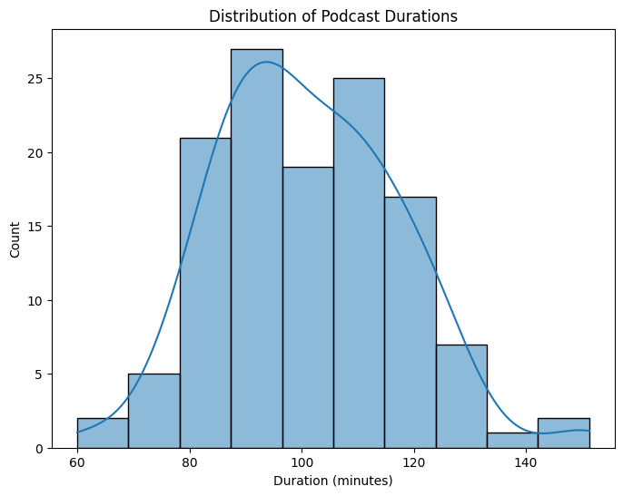
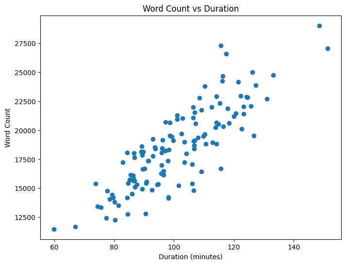
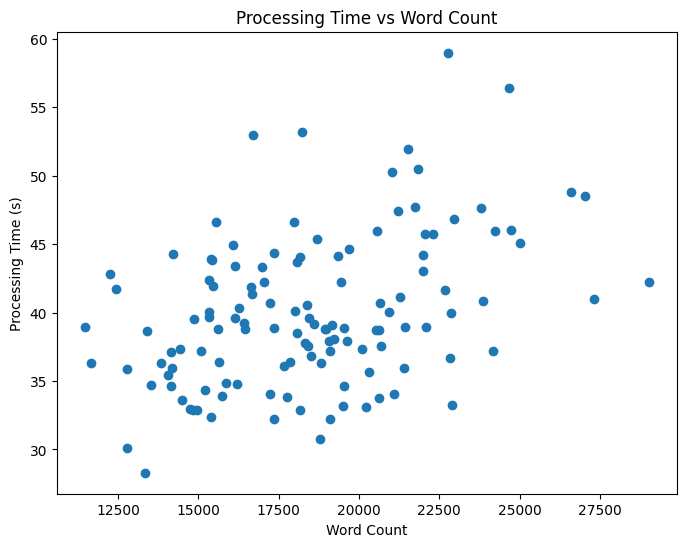
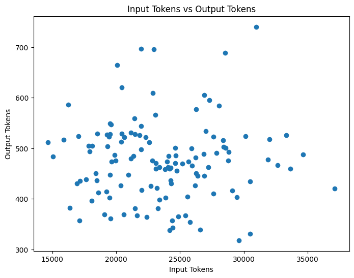
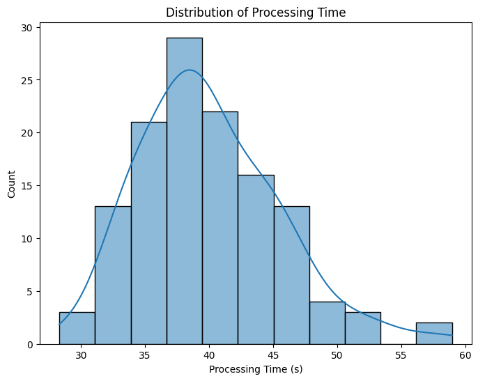
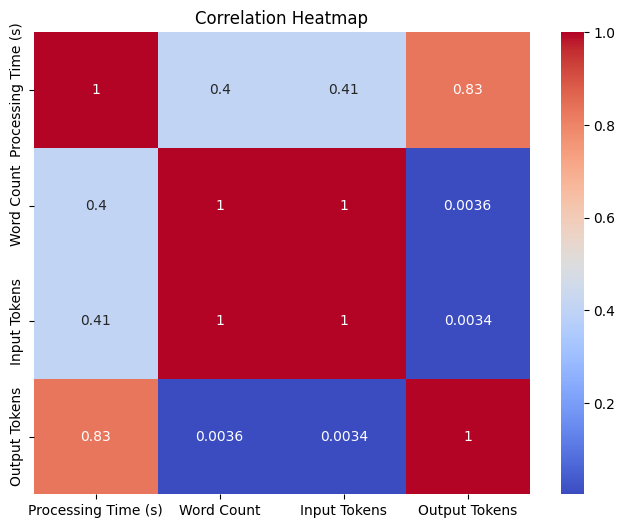

import pandas as pd
import numpy as np
import matplotlib.pyplot as plt
import seaborn as sns
import warnings
warnings.filterwarnings('ignore')Top Books and Interesting Ideas discussed from Steven Bartlett’s Diary of a CEO Podcasts
- Analysed data from Steven Bartlett’s Diary of a CEO podcasts to extract key details like guest names, bios, book recommendations, and interesting ideas discussed
- Processed a total of 126 podcast transcripts, spending over 84 minutes of processing time
- Used nearly 3 million input tokens and generated almost 60,000 output tokens from Anthropic’s Claude 3 API
- Visualized relationships between word count, processing time, input tokens and output tokens using matplotlib and seaborn
- Estimated the total cost of the project at around $49 based on Anthropic’s Claude 3 Opus pricing for input and output tokens
- Extracted and summarized the top books and ideas discussed across all the podcasts analyzed, spanning over 212 hours of content
df = pd.read_csv("podcast_analysis_doac_23_24.csv")df.head()| Unnamed: 0 | File Name | date_published | duration | duration_in_minute | Processing Time (s) | Word Count | Input Tokens | Output Tokens | Result | |
|---|---|---|---|---|---|---|---|---|---|---|
| 0 | 150 | Doctor Tim Spector: The Shocking New Truth Abo... | 2023-01-02 | 5789 | 96.483333 | 38.791774 | 16452 | 21466 | 528 | Here is a summary of the key points from the t... |
| 1 | 151 | Davina McCall: How To Overcome ANY Trauma & Li... | 2023-01-05 | 6849 | 114.150000 | 40.663488 | 20645 | 26265 | 450 | Here is my summary of the key points from the ... |
| 2 | 152 | No.1 Neuroscientist: Age 30 to 50 Will Be Your... | 2023-01-09 | 5916 | 98.600000 | 34.668747 | 19541 | 24407 | 357 | Here is my summary of the key points from the ... |
| 3 | 153 | Derren Brown: UNLOCK The Secret Power Of Your ... | 2023-01-12 | 5777 | 96.283333 | 39.080675 | 19157 | 24627 | 470 | Here is my summary of the key points from the ... |
| 4 | 154 | David Moyes Reveals The Truth About Man United... | 2023-01-16 | 5359 | 89.316667 | 39.159902 | 18612 | 23096 | 470 | Here is a summary of the key points from the i... |
# overall processing time, total input tokens, total output token, number of podcast
print("Overall Processing Time in Minutes: ", df['Processing Time (s)'].sum()/60)
print("Overall Input Tokens: ", df['Input Tokens'].sum())
print("Overall Output Tokens: ", df['Output Tokens'].sum())
print("Overall Total Tokens: ", df['Input Tokens'].sum()+df['Output Tokens'].sum())
print("Number of Podcasts: ", df.shape[0])
print("Total Hours of Podcasts: ", df['duration_in_minute'].sum()/60)
million_input_token_price = 15
million_output_token_price = 75 # in dollar
print("Overall Input Token Cost: ", df['Input Tokens'].sum()/1000000*million_input_token_price)
print("Overall Output Token Cost: ", df['Output Tokens'].sum()/1000000*million_output_token_price)
Overall Processing Time in Minutes: 84.01140619516373
Overall Input Tokens: 2969198
Overall Output Tokens: 59825
Overall Total Tokens: 3029023
Number of Podcasts: 126
Total Hours of Podcasts: 212.24055555555555
Overall Input Token Cost: 44.53797
Overall Output Token Cost: 4.486875df.info()<class 'pandas.core.frame.DataFrame'>
RangeIndex: 126 entries, 0 to 125
Data columns (total 10 columns):
# Column Non-Null Count Dtype
--- ------ -------------- -----
0 Unnamed: 0 126 non-null int64
1 File Name 126 non-null object
2 date_published 126 non-null object
3 duration 126 non-null int64
4 duration_in_minute 126 non-null float64
5 Processing Time (s) 126 non-null float64
6 Word Count 126 non-null int64
7 Input Tokens 126 non-null int64
8 Output Tokens 126 non-null int64
9 Result 126 non-null object
dtypes: float64(2), int64(5), object(3)
memory usage: 10.0+ KBdf["date_published"] = pd.to_datetime(df["date_published"])
df.set_index('date_published', inplace=True)
# Duration distribution
plt.figure(figsize=(8, 6))
sns.histplot(df['duration_in_minute'], kde=True)
plt.xlabel('Duration (minutes)')
plt.ylabel('Count')
plt.title('Distribution of Podcast Durations')
plt.show()
# Scatter plot of Word Count vs Duration
plt.figure(figsize=(8, 6))
plt.scatter(df['duration_in_minute'], df['Word Count'])
plt.xlabel('Duration (minutes)')
plt.ylabel('Word Count')
plt.title('Word Count vs Duration')
plt.show()

# Plot 1: Processing Time vs Word Count
plt.figure(figsize=(8, 6))
plt.scatter(df['Word Count'], df['Processing Time (s)'])
plt.xlabel('Word Count')
plt.ylabel('Processing Time (s)')
plt.title('Processing Time vs Word Count')
plt.show()
# Plot 2: Input Tokens vs Output Tokens
plt.figure(figsize=(8, 6))
plt.scatter(df['Input Tokens'], df['Output Tokens'])
plt.xlabel('Input Tokens')
plt.ylabel('Output Tokens')
plt.title('Input Tokens vs Output Tokens')
plt.show()
# Plot 3: Distribution of Processing Time
plt.figure(figsize=(8, 6))
sns.histplot(df['Processing Time (s)'], kde=True)
plt.xlabel('Processing Time (s)')
plt.ylabel('Count')
plt.title('Distribution of Processing Time')
plt.show()
# Plot 4: Correlation Heatmap
plt.figure(figsize=(8, 6))
corr_matrix = df[['Processing Time (s)', 'Word Count', 'Input Tokens', 'Output Tokens']].corr()
sns.heatmap(corr_matrix, annot=True, cmap='coolwarm')
plt.title('Correlation Heatmap')
plt.show()



Download Youtube Video Transcripts
import os
from pytube import Playlist
from youtube_transcript_api import YouTubeTranscriptApi
from youtube_transcript_api._errors import TranscriptsDisabled, NoTranscriptFound
def download_playlist_transcripts(playlist_url):
# Create a Playlist object using the provided URL
playlist = Playlist(playlist_url)
# Create a folder named "podcast" if it doesn't exist
if not os.path.exists("podcast_ceo"):
os.makedirs("podcast_ceo")
# Create a dictionary to store file name, date published, and podcast duration
podcast_info = {}
total_videos = len(playlist.videos)
# Iterate through each video in the playlist
for i, video in enumerate(playlist.videos, start=1):
video_id = video.video_id
try:
# Attempt to fetch the transcript for the current video
transcript = YouTubeTranscriptApi.get_transcript(video_id)
# Saving the transcript to a text file in the "podcast" folder
file_name = f"{video.title}.txt".replace("/", "-") # Replace '/' to avoid file path issues
file_path = os.path.join("podcast_ceo", file_name)
with open(file_path, 'w', encoding='utf-8') as file:
for line in transcript:
file.write(f"{line['text']}\n")
# Add file name, date published, and podcast duration to the dictionary
podcast_info[file_name] = {
"date_published": video.publish_date.strftime("%Y-%m-%d"),
"duration": video.length
}
if i % 50 == 0:
print(f"Processed {i} out of {total_videos} videos")
except TranscriptsDisabled:
print(f"Transcripts are disabled for video: {video.title}")
except NoTranscriptFound:
print(f"No transcript found for video: {video.title}")
except Exception as e:
print(f"An error occurred: {e}")
return podcast_info
playlist_url = 'https://www.youtube.com/playlist?list=PL22egh3ok4cP0T7UZRmP6TMLErZYWMN-l'
podcast_info = download_playlist_transcripts(playlist_url)Transcripts are disabled for video: Dr Alex George: My Hardest Day in A&E, Family Suicide & Finding TRUE Purpose. | E89
Processed 50 out of 278 videos
Processed 100 out of 278 videos
Transcripts are disabled for video: Stephen Fry: “Lost, alone and I wanted to take my life” | E201
Processed 150 out of 278 videos
Processed 200 out of 278 videos
Processed 250 out of 278 videosimport pandas as pd
df = pd.DataFrame.from_dict(podcast_info, orient='index')
df = df.reset_index()
df = df.rename(columns={'index': 'File Name'})
df["duration_in_minute"] = df["duration"]/60
df| File Name | date_published | duration | duration_in_minute | |
|---|---|---|---|---|
| 0 | Liam Payne Opens Up About His Darkest Moments,... | 2021-06-06 | 5891 | 98.183333 |
| 1 | Molly Mae: How She Became Creative Director Of... | 2021-12-12 | 6083 | 101.383333 |
| 2 | Jordan Peterson: How To Become The Person You’... | 2022-01-02 | 3850 | 64.166667 |
| 3 | The Happiness Expert That Made 51 Million Peop... | 2021-10-10 | 7053 | 117.550000 |
| 4 | Jimmy Carr: The Easiest Way To Live A Happier ... | 2021-11-14 | 6028 | 100.466667 |
| ... | ... | ... | ... | ... |
| 271 | The Manipulation Expert: You're Being Manipula... | 2024-03-18 | 7242 | 120.700000 |
| 272 | The Childhood Trauma Doctor: Childhood Trauma ... | 2024-03-21 | 6431 | 107.183333 |
| 273 | From My Garden Shed To $100m Business Empire! ... | 2024-03-25 | 6172 | 102.866667 |
| 274 | The Gottman Doctors: Women Tend to Be More Unh... | 2024-03-28 | 7603 | 126.716667 |
| 275 | The Better-Sex Doctor: The Link Between Mastur... | 2024-04-01 | 6849 | 114.150000 |
276 rows × 4 columns
df["date_published"] = pd.to_datetime(df["date_published"])
df["year"] = df["date_published"].dt.year
df.to_csv("podcast_info_diary.csv")df = pd.read_csv("podcast_info_diary.csv")
# Filter the DataFrame to only include rows where the year is 2023 or 2024
df_2023_2024 = df[(df['year'] == 2023) | (df['year'] == 2024)]len(os.listdir("podcast"))
63df_2023_2024.head()| Unnamed: 0 | File Name | date_published | duration | duration_in_minute | year | |
|---|---|---|---|---|---|---|
| 150 | 150 | Doctor Tim Spector: The Shocking New Truth Abo... | 2023-01-02 | 5789 | 96.483333 | 2023 |
| 151 | 151 | Davina McCall: How To Overcome ANY Trauma & Li... | 2023-01-05 | 6849 | 114.150000 | 2023 |
| 152 | 152 | No.1 Neuroscientist: Age 30 to 50 Will Be Your... | 2023-01-09 | 5916 | 98.600000 | 2023 |
| 153 | 153 | Derren Brown: UNLOCK The Secret Power Of Your ... | 2023-01-12 | 5777 | 96.283333 | 2023 |
| 154 | 154 | David Moyes Reveals The Truth About Man United... | 2023-01-16 | 5359 | 89.316667 | 2023 |
df_2023_2024.shape(126, 6)import os
import anthropic
from dotenv import load_dotenv
from IPython.display import Markdown# Load API keys from .env file
load_dotenv()
api_key = os.getenv("ANTHROPIC_API_KEY")
# Set up the Anthropic API client
client = anthropic.Client(api_key=api_key)
transcript_directory = "podcast_ceo"
def process_transcript(transcript_text):
prompt = f"""Here is the transcript from a YouTube video from the Diary of CEO channel, which contains an interview conducted by host Steven Bartlett with a guest:
<transcript>
{transcript_text}
</transcript>
Please carefully read through the entire transcript above. Then complete the following steps:
1. Extract a short 1-2 sentence bio of the guest, if possible based on information in the transcript.
2. Extract if they have any book recommendations
3. Summarize the main topics and interesting points discussed in the conversation.
4. Highlight any key lessons, insights, or advice shared by the guest.
5. Mention any personal anecdotes or stories shared by the guest about their life, career journey, or challenges they've faced.
6. Note any discussion of the guest's mindset, habits, or strategies for success.
Do not hallucinate or fabricate any information. If some piece of information requested above is not found in the transcript, simply skip that part. Do not write things like "not found in transcript".
Provide your full response inside <result> tags.
"""
response = client.messages.create(
model="claude-3-opus-20240229",
max_tokens=4096,
messages=[
{"role": "user", "content": prompt}
]
)
return response
import time
# Process each transcript file in the directory
results = {}
for i, filename in enumerate(df_2023_2024['File Name']):
if filename.endswith(".txt"):
# Read the transcript text from the file
with open(os.path.join(transcript_directory, filename), "r") as file:
transcript_text = file.read()
display(Markdown(f"**Processed {i+1}/{len(df_2023_2024)}: {filename}**"))
display("*"*100)
# Process the transcript using Claude
start_time = time.time()
result = process_transcript(transcript_text)
end_time = time.time()
processing_time = end_time - start_time
# Get the number of words in the file
word_count = len(transcript_text.split())
# Store the result, processing time, word count, input tokens, and output tokens in the dictionary
results[filename] = (processing_time, word_count, result.usage.input_tokens, result.usage.output_tokens, result.content[0].text)
display(Markdown(result.content[0].text))
display(Markdown(f"Input tokens: {result.usage.input_tokens}"))
display(Markdown(f"Output tokens: {result.usage.output_tokens}"))
display(Markdown(f"Processing time: {processing_time} seconds"))
display(Markdown(f"Podcast Word count: {word_count}"))
Processed 1/126: Doctor Tim Spector: The Shocking New Truth About Weight Loss, Calories & Diets | E209.txt
'****************************************************************************************************'Here is a summary of the key points from the transcript:
Books recommended by guest: The Diet Myth by Tim Spector Spoon-Fed: Why Almost Everything We’ve Been Told About Food is Wrong by Tim Spector Food for Life: The New Science of Eating Well by Tim Spector
Main topics discussed: • The importance of the gut microbiome for overall health, including physical and mental health • Common myths and misperceptions about nutrition and diets • Issues with calorie counting and the role of ultra-processed foods • Personalized nutrition and the Zoe app for tailoring diet to the individual • The minimal impact of exercise on weight loss • Problems with artificial sweeteners and diet sodas
Key lessons and insights: • Eating a diverse range of whole, unprocessed plant foods is vital for a healthy gut microbiome • Ultra-processed foods are detrimental to health and drive cravings for more food • There is no one-size-fits-all perfect diet; nutrition should be personalized to the individual • Fasting, particularly time-restricted eating, has health benefits • Multivitamin supplements are largely a waste of money for people with decent diets • Depression and anxiety are closely linked to gut microbiome health
Personal stories: • Tim’s father died suddenly of a heart attack when Tim was 21, which drove him to make more of his life • Tim had a mini-stroke that left him unable to work for 3 months, during which he became more focused on the gut microbiome • Tim used to eat an unhealthy muesli and orange juice breakfast until he tested himself and found it caused major blood sugar spikes, so he switched to full-fat yogurt with nuts/seeds/berries
Mindset and success strategies: • Be an “obsessional detective” – dig into research to uncover the truth, even if it goes against conventional wisdom • Make sustainable diet and lifestyle changes that you can maintain long-term, not quick fixes • Broaden your enjoyment and appreciation of a wide variety of healthy foods
Input tokens: 21466
Output tokens: 528
Processing time: 38.79177403450012 seconds
Podcast Word count: 16452
Processed 2/126: Davina McCall: How To Overcome ANY Trauma & Live The Life You Deserve | E210.txt
'****************************************************************************************************'Here is my summary of the key points from the conversation:
Main topics discussed: - McCall’s childhood, her mother leaving her at a young age, and how that impacted her life - Her struggles with drug addiction when she was younger and how she got sober - The death of her sister Caroline from cancer and how that deeply affected McCall - McCall’s career journey in television and her drive to be famous when she was younger - Her mission now to help people, especially women going through menopause - Cancel culture and an experience McCall had being attacked on social media for a comment she made
Key lessons and advice: - Don’t wait for someone to tell you that you have limited time left to live. Appreciate and make the most of life now. Say “I love you” to those you care about. - To heal and move forward, you have to be honest about your struggles and pain. Talking openly is powerful. - Keep taking steps forward in the direction of your goals. Opportunities come to those who pursue them. - Forgiveness is freeing. McCall shared how she finally forgave her mother on her deathbed after years of pain.
Personal stories: - McCall spent part of her childhood with her mother in France surrounded by drugs and instability - She started doing drugs including heroin at a young age before getting sober in her 20s - McCall was very close with her half-sister Caroline who died of cancer. She shared intimate moments with Caroline in her final weeks. - She has released a book on menopause to help women based on her own challenging experiences
Mindset and strategies: - McCall believes in the power of manifestation - knowing clearly what you want and continually taking steps towards it - Helping others is her key mission and what drives her now - Despite immense challenges, she always aims to learn, grow, and maintain a positive outlook on life
Input tokens: 26265
Output tokens: 450
Processing time: 40.663487911224365 seconds
Podcast Word count: 20645
Processed 3/126: No.1 Neuroscientist: Age 30 to 50 Will Be Your Unhappiest, Here’s How To FIX IT! - Dr. Tali Sharot.txt
'****************************************************************************************************'Here is my summary of the key points from the transcript:
Input tokens: 24407
Output tokens: 357
Processing time: 34.66874718666077 seconds
Podcast Word count: 19541
Processed 4/126: Derren Brown: UNLOCK The Secret Power Of Your Mind! | E212.txt
'****************************************************************************************************'Here is my summary of the key points from the transcript:
Input tokens: 24627
Output tokens: 470
Processing time: 39.08067512512207 seconds
Podcast Word count: 19157
Processed 5/126: David Moyes Reveals The Truth About Man United, West Ham & His Future | E213.txt
'****************************************************************************************************'Here is a summary of the key points from the interview with David Moyes:
Main discussion points: - Moyes’ upbringing in Glasgow and how his father, who was an amateur football manager, influenced his career path - His early days as a player at Celtic and the winning mentality he developed there - The importance of planning, organization, commitment and other traits he learned from his father - His philosophy on what makes a good player signing and the scouting/research process - The circumstances around him becoming Manchester United manager, succeeding Sir Alex Ferguson - His regrets and reflections on his short tenure at Manchester United - Dealing with the toll and public scrutiny of being sacked as Manchester United manager - The importance of his wife Pamela’s support throughout his career, especially during the tough times - His ambitions to achieve success and build a “new West Ham” in his current role
Key lessons and advice: - There’s no one guaranteed path to becoming a successful football manager - Having supportive owners/board is crucial, especially early in your managerial career - When signing players, character, work ethic and team fit are just as important as talent - Dealing with failure and criticism is part of football management - you have to find a way to shut it out - Having a strong family support system is essential to coping with the demands of the job
Personal stories: - Getting his first coaching badges at age 20-21 in order to become a better player - Being unexpectedly offered the Manchester United job by Sir Alex Ferguson in person - The difficulty of not being able to share the Man United news with anyone, even his family, for several days - His father having a heart attack shortly after he lost the Man United job - His wife always encouraging him to pursue coaching education and allowing him the freedom to do so
Input tokens: 23096
Output tokens: 470
Processing time: 39.15990209579468 seconds
Podcast Word count: 18612
Processed 6/126: Jesse Lingard Reveals The Problem With Man United Today & Why He Moved To Nottingham Forest | E214.txt
'****************************************************************************************************'Here is my summary of the key information from the transcript:
Input tokens: 17136
Output tokens: 357
Processing time: 28.30072593688965 seconds
Podcast Word count: 13347
Processed 7/126: Sadiq Khan: The Dark Side Of The Police. How Safe Are We REALLY? | E216.txt
'****************************************************************************************************'Here is my attempt at summarizing the key points from the transcript:
Guest Bio: Sadiq Khan is the Mayor of London. He was previously a lawyer for 11 years and a parliamentarian and minister for 11 years before becoming mayor.
Main Topics: - Khan’s family background as the descendant of immigrants from India and Pakistan, and his upbringing in London - London’s status as a global city and challenges it has faced in recent years, including Brexit, crime, and terrorism - Khan’s tenure as Mayor of London, including his efforts to improve air quality, build affordable housing, invest in public transport, and reduce crime - The challenges of being a Muslim politician and facing Islamophobia, death threats, and abuse - The importance of having role models from diverse backgrounds in politics - Reflections on what Khan is proud of achieving as mayor and what he still hopes to accomplish if re-elected
Key Lessons and Advice: - The importance of a strong work ethic, which Khan learned from his parents - Recognizing the privilege of serving in public office and making the most of the limited time you have - The need to balance ambition and drive with enjoying the experience and spending time with family and friends - Politicians need to educate the public on complex issues, not just play to emotions
Personal Anecdotes: - Khan’s experience growing up in a working class family on a London council estate - The impact of his father’s death in 2003 and his regret at not getting to spend more quality time with him - Experiencing depression after his father passed away and throwing himself into work as a coping mechanism - Receiving death threats and abuse as Mayor of London because of his Muslim faith
Input tokens: 23264
Output tokens: 381
Processing time: 32.91018581390381 seconds
Podcast Word count: 18147
Processed 8/126: Jay Shetty: 8 Rules For Perfect Love & Amazing Sex! | E217.txt
'****************************************************************************************************'Here is a summary of the key points from the conversation:
Main topics discussed: • Finding your purpose (dharma) and focusing on that vs. seeking fulfillment through relationships • The importance of developing yourself and your own values and goals before seeking a relationship • The challenges of modern dating and relationships • Problems caused by sacrificing your purpose for a relationship • Lack of intimacy and vulnerability in many relationships leading to issues with sex and connection • Negative impacts of porn on relationships and rewiring the brain • Value of practicing periods of celibacy to build non-physical intimacy and redirect energy
Key lessons and advice: • Your relationship with yourself and pursuing your own purpose should be the top priority, not seeking a relationship to feel whole • Develop your own self-worth, values, goals and interests first - this will help you find a compatible partner • Stop trying to change your partner - focus on understanding them and their goals/values • Great sex is a byproduct of emotional intimacy and vulnerability in a relationship, not a replacement for it • Interview your partner with curiosity to understand them, don’t interrogate them with judgment • Consider practicing periods of celibacy early in a relationship to build emotional connection without sex
Personal stories: • Jay shared that he gets very emotional thinking about the humble monks he met at age 18 who inspired him with their boundless compassion and humility. Living with them made him believe in the potential for greatness in all humans. • He took a 7-day period to himself to process criticism and negativity he was receiving, which led him to feel physically ill. But he emerged with more clarity.
Mindset and strategies: • Jay believes self-worth comes from going through and overcoming difficulties, not from superficial things • He stressed the importance of conscious, clear communication in relationships, especially about each person’s goals and visions • Jay aims to approach people with compassion and a desire to understand, not judgement
Input tokens: 31877
Output tokens: 477
Processing time: 45.09009099006653 seconds
Podcast Word count: 25006
Processed 9/126: The Weight Loss Scientist: You’ve Been LIED To About Calories, Dieting & Losing Weight: Giles Yeo.txt
'****************************************************************************************************'Here is a summary of the key points from the transcript:
Book recommendations: - Why Calories Don’t Count by Giles Yeo - Gene Eating by Giles Yeo
Main topics discussed: - The genetic factors that influence a person’s weight and risk for obesity - Why calories are an inaccurate and incomplete way to measure the healthiness of foods - The problems with fad diets like keto, alkali, and juice cleanses - How the body defends against weight loss and tends to gain weight with age - The nuances of the body positivity movement and health at every size
Key lessons and advice: - Calorie counts are inaccurate and don’t reflect the quality or availability of nutrients in food. More important factors are getting sufficient protein, fiber, and limiting added sugars. - Exercise is good for health and weight maintenance but not an effective weight loss strategy on its own. Diet has a much bigger impact. - Sustainable weight loss requires finding a healthy diet you can maintain long-term, not short-term restrictive fad diets. - As a society, we need to shift towards making healthy foods more affordable, accessible and appealing to address the obesity epidemic. Government policy has a role to play.
Personal anecdote: - Yeo’s mother suffered a stroke in the past year while he was dealing with the challenges of the COVID-19 pandemic. This was a stressful time that made him reassess his priorities and reflect on his own future health, looking to his mother as a glimpse of what challenges he may face as he ages.
Yeo’s mindset and strategies: - Yeo aims to destigmatize obesity so that the issue can be discussed openly and honestly without judgment. This is essential for individuals to get support and for enacting policies that make healthy choices easier. - His mission is to make healthy food cheaper and more accessible for all. He believes this is the most effective way to address obesity on a societal level.
Input tokens: 27866
Output tokens: 491
Processing time: 44.178096294403076 seconds
Podcast Word count: 21993
Processed 10/126: The “Happy Life” Scientist: How To FINALLY Beat Stress, Worry & Uncertainty! Dacher Keltner | E219.txt
'****************************************************************************************************'Here is a summary of the key points from the interview:
Main Topics and Interesting Points: - Experiencing awe, even brief moments of it every day, has many health benefits including reducing inflammation and stress, activating the vagus nerve, and promoting creativity. - As people rise in wealth, privilege, and social class, studies show they tend to become less compassionate, feel less awe, and advocate for policies that hurt the poor. - Compassion is the feeling of concern for others’ suffering and taking action to help. Practicing compassion makes the giver and receiver happier. Acts of kindness tend to spread to others in a pay-it-forward effect. - Life expectancy has been declining in the U.S. in recent years, likely due to inequality, lack of opportunity, and a crisis of meaning or purpose in life. - Touch is very important for human connection and health, releasing oxytocin. Lack of friendly touch can lead to antisocial behavior.
Key Lessons and Insights: - Take a few moments each day to experience awe, through an “awe walk”, looking at the sky, sharing stories of awe, etc. It’s very beneficial for physical and mental health. - Practice compassion and kindness. Giving to others boosts happiness more than spending on yourself. Compassionate acts spread to others. - Maintaining social ties, physical touch, and a sense of meaning and purpose are crucial for wellbeing and longevity. Loneliness deprives us of these vital things.
Personal Anecdotes: - After Dr. Keltner’s younger brother died of colon cancer, he entered a period of deep grief and purposelessness. He challenged himself to find awe again in new places to regain meaning, which helped him heal.
Mindset and Strategies: - Dr. Keltner emphasizes building more everyday awe, compassion, kindness, and friendly touch into our lives and society to promote individual and collective wellbeing. He sees these “pro-social emotions” as vital to the good life.
Input tokens: 22319
Output tokens: 522
Processing time: 38.89813995361328 seconds
Podcast Word count: 17349
Processed 11/126: Romesh Ranganathan: There’s A Dark Voice In My Head That I’ve Learnt To Control | E220.txt
'****************************************************************************************************'Here is my response based on the transcript:
Book recommendation: None provided in the transcript.
Main topics:
- Romesh’s childhood, going from a comfortable life to financial hardship in a period of 6-12 months when his father lost his job, cheated on his mother and went to prison
- His early love for comedy, inspired by Eddie Murphy, and doing his first stand-up gig at age 8
- His inner “voice” that is very self-critical and makes him doubt himself
- His journey from being a teacher to pursuing stand-up comedy full-time
- His mother being a “hero” who supported the family through difficult times
- Advice to his children to focus on doing what you love to the best of your ability without worrying about the end goal
- Key lessons and advice:
- If you love what you do and do it to the best of your ability, you’re on a good path. Don’t focus on the end goal, just focus on being great at what’s in front of you.
- Being present and in the moment is key to performing well, rather than worrying about what an opportunity could lead to. Focus on the controllables.
- Personal stories:
- His family going from a comfortable life to his father losing his job, cheating on his mother, and going to prison, leading to financial hardship
- Starting out in stand-up and barely being able to afford petrol to drive to gigs
- His father passing away suddenly just 3 days before Romesh was about to leave his teaching job to pursue comedy
- A confrontation with his father when he was 18 about his father’s actions that destroyed their family
- Mindset and success strategies:
- Developing coping mechanisms to deal with his negative inner voice, such as having perspective, being present in the moment, and focusing only on what he can control
- Choosing to pursue what he loves (comedy), even if it’s a risk, rather than chasing money or external markers of success
- Putting maximum effort into every gig and focusing only on the performance, not the potential opportunities it could lead to
Input tokens: 22587
Output tokens: 512
Processing time: 40.133488178253174 seconds
Podcast Word count: 18009
Processed 12/126: Richard Hammond: The Untold Story Of My 320mph Crash & My 1 Minute Memory! | E221.txt
'****************************************************************************************************'Here is my summary of the key points from the conversation with Richard Hammond:
Main topics discussed: - His early life and career journey from working in radio to presenting Top Gear - The massive success and impact of Top Gear, and what made the show so popular globally - A serious car crash he had in 2006 while filming Top Gear where he nearly died, and his long recovery from the brain injury he suffered - Dealing with depression, memory loss and other after-effects of the brain injury - His loving relationship with his wife Mindy and two daughters Willow and Isabel - Living life to the fullest and following your passions while you can
Key lessons and insights: - Watching people engage with and share their passion is incredibly compelling, whether it’s for cars, pottery, baking, or anything else - The importance of being authentic and having integrity in what you do - We are all lucky to be alive and aware of ourselves and the world around us - that is the truly amazing thing in life - It’s important for men to open up, share their feelings, and support each other - If there is something you’re passionate about doing, you should pursue it while you can, because there may come a time when you can’t
Personal stories and anecdotes: - Dreaming of walking up a hill toward a crooked tree while in a coma after his car crash, and gaining comfort from that vision - Having a one-minute memory and reading the same newspaper over and over while recovering from brain injury - Regretting being away from his daughters so much over the years in order to work and support them financially - Getting emotional while resigning from a job at Renault early in his career to pursue his TV presenting dreams
Input tokens: 20360
Output tokens: 426
Processing time: 34.876002073287964 seconds
Podcast Word count: 15842
Processed 13/126: Behaviour Change Scientist: How I Lost 120lbs With Kindness: Shahroo Izadi | E222.txt
'****************************************************************************************************'Here is a summary of the key points from the interview with Shahroo Izadi:
Main topics discussed: - Izadi’s personal struggles with her weight, self-esteem, and secretly getting a gastric band which had to later be removed - How focusing on changing her relationship with herself and food was key to overcoming her issues, rather than trying to lose weight - Common reasons people are unsuccessful in making habit changes, such as focusing on long-term outcomes vs. the process, tough self-talk, and seeing behaviors as problems rather than solutions - The importance of self-compassion and talking to yourself like you would a loved one when dealing with setbacks - Imposter syndrome and the need to collect evidence to disprove negative self-stories - Managing anxiety through journaling, breathwork, and catching unhelpful thought patterns
Key lessons and insights: - Sustainable change comes from understanding root causes of behaviors and changing your relationship with yourself - Self-kindness and self-trust are essential for habit change and overcoming feelings of powerlessness - Notice and question the way you speak to yourself - aim for firmness and compassion - Prepare for motivation dips and setbacks ahead of time with a plan for self-compassionate self-talk - It’s okay and appropriate to hurt someone’s feelings if you are sharing your truth and not taking on more than your share of emotional responsibility
Personal stories: - Izadi’s struggles with her weight and self-esteem from a young age, and the impact of diet culture - Secretly getting a gastric band which had to be removed, and the shame she felt - Her improved relationship with food, weight and herself now after doing the inner work
Mindset and strategies: - Viewing habit change as an opportunity to demonstrate your capacity and strengthen self-trust - Focusing on your assets and positive evidence to update negative self-stories - Accepting that change includes discomfort and committing to being on your own side through it - Separating anxious thoughts from reality and seeing them as the brain trying to keep you safe
Input tokens: 14651
Output tokens: 512
Processing time: 38.96768879890442 seconds
Podcast Word count: 11468
Processed 14/126: The Health Expert: The One Food (WE ALL EAT) That’s Killing Us Slowly: Max Lugavere | E223.txt
'****************************************************************************************************'Here is my summary of the key points from the podcast transcript:
Guest bio: Max Lugavere is a health and science journalist, filmmaker, and author of the New York Times best-selling book Genius Foods. He is passionate about nutrition and brain health.
Main topics discussed: - The negative health impacts of consuming added sugars and ultra-processed foods - The benefits of consuming whole foods, especially animal products, for brain health and reducing risk of depression and dementia - The importance of sleep, exercise, intermittent fasting, and sauna use for overall health and longevity - How chronic stress negatively impacts health - The distinction between lifespan and healthspan, and the importance of maintaining health in older age - The cognitive benefits of novel experiences, travel, and breaking out of routines
Key lessons and advice: - Minimize consumption of added sugars and ultra-processed foods, and focus on eating whole foods - Include some animal products in your diet, as these contain important nutrients for brain health - Prioritize sleep, exercise, and stress management - Engage in novel experiences and travel to provide cognitive stimulation - Focus not just on extending lifespan, but on maximizing healthspan by preventing chronic disease
Personal anecdotes: - Max was motivated to study health and nutrition after his mother became ill with a neurodegenerative condition at a young age and ultimately passed away - He experienced traumatic stress and even considered suicide after his mother’s diagnosis - In trying to understand his challenges with commitment in relationships, Max uncovered in therapy that his mother had inappropriately confided in him about her marital problems when he was young, leading to attachment issues
Mindset and strategies: - Max is driven by love and wanting to help people thrive - He has an incredibly strong motivation to understand health and help others because of witnessing his mother’s illness - Even without formal medical training, he has educated himself extensively by reading scientific literature - He builds resilience to unavoidable stressors through lifestyle practices like exercise and sauna use - He strives to balance routine and comfort with novel experiences to maximize fulfillment
Input tokens: 25658
Output tokens: 473
Processing time: 37.898601055145264 seconds
Podcast Word count: 19638
Processed 15/126: Lucy Hale Opens Up For The First Time About Eating Disorders, Relationships & Addiction | E224.txt
'****************************************************************************************************'Here is my summary of the key points from the transcript:
Main topics discussed: - Lucy’s childhood growing up in Tennessee and moving to LA at age 15 to pursue acting - Her struggles with an eating disorder, low self-worth, and alcohol addiction - How she used acting and her career success as an escape and coping mechanism - The difficulties of navigating fame and success from a young age - Her journey to get sober and discover her authentic self - Manifesting the life she wants now in her 30s
Key lessons and insights: - Everything happens for a reason and rejection can lead to redirection in life - You have to be willing to go to dark places sometimes to reach happiness and peace - True happiness comes from within yourself, not external success or validation - Struggling publicly while dealing with private issues can make you feel like a fraud - Getting sober requires wanting it for yourself, not for other people or reasons - Showing up authentically and discovering who you are outside your job is key
Personal stories: - Lucy’s mom moved with her to LA at age 15 to support her acting dreams - She booked the show Pretty Little Liars right after another show she was on got cancelled - Lucy has been working on getting sober since age 20 and has over a year of sobriety now - One of her best friends died from alcoholism but it still didn’t make her want to get sober - She has had many failed relationships due to her own issues with love addiction and avoidance
Mindset and success strategies: - Lucy believes in manifesting the life you want through your thoughts - She practices positive affirmations and self-love to combat her inner critic - Resilience has helped her bounce back from dark times and “failures” in her career - Leading with kindness, passion and authenticity is important to her
Input tokens: 19523
Output tokens: 447
Processing time: 41.909780979156494 seconds
Podcast Word count: 15442
Processed 16/126: The Man Who Can Predict How Long You Have Left To Live (To The Nearest Month): Gary Brecka | E225.txt
'****************************************************************************************************'Here is a summary of the key points from the transcript:
Main topics discussed: - Many common health issues and diseases are caused by deficiencies in key nutrients and raw materials in the body, not genetics - Adequately methylating (processing) nutrients is key to maintaining health and preventing disease - The importance of proper nutrition, oxygen, magnetism, light, and breath work for optimal health - How getting out of your comfort zone through practices like cold water immersion can boost health and resilience
Key lessons and advice: - Take a genetic test to identify your methylation deficiencies so you can supplement accordingly - Supplement to address deficiencies, not just for the sake of supplementing - Get adequate sunlight, especially in the first 45 minutes after waking - Do breath work exercises and exercise with an oxygen mask to increase oxygen levels - Immerse yourself in cold water for 3-6 minutes per day to activate cold shock proteins - Avoid synthetic nutrients like folic acid in favor of natural forms like methylfolate - Control your emotional state to take charge of your future, since emotion impacts memory which projects into the prefrontal cortex
Personal anecdote: Gary shared how he helped UFC president Dana White turn his health around in just 10 weeks by fixing nutrient deficiencies, getting him on a ketogenic diet, and having him do a “superhuman protocol” involving magnetism, oxygen therapy, and red light therapy. Dana’s life expectancy nearly tripled as a result.
Mindset: Gary believes optimal health is found in the basics like proper nutrition, breath work, sunlight, and cold exposure - not in fancy supplements or biohacks. He struggles with being very hard on himself and feels guilty if he has any marginal enjoyment like a cocktail or cake. He is extremely disciplined and committed to his work.
Input tokens: 24002
Output tokens: 473
Processing time: 40.56841325759888 seconds
Podcast Word count: 18382
Processed 17/126: Seth Rogen Opens Up About His Self-Doubts & Struggles That Nobody Sees!.txt
'****************************************************************************************************'Here is a summary of the key points from the transcript:
Main topics discussed: - Seth’s upbringing in Vancouver, Canada and how his parents and environment fostered his interest in comedy and movies from a young age - His early start doing stand-up comedy as a teenager and writing the movie Superbad with his writing partner Evan Goldberg - Dealing with self-doubt and the challenges of working in the entertainment industry, including unemployment and harsh critics - The devastating impact of his mother-in-law’s Alzheimer’s disease on his wife Lauren and their family - His creative process and what drives him to keep making movies, TV shows, and other creative projects that excite him - The importance of surrounding himself with friends, loved ones, and a creative community
Key lessons and insights: - Work ethic and not quitting are crucial to making it in a competitive industry like entertainment. “If you don’t quit, you might make it. If you quit, you definitely won’t.” - Take big creative swings and make things you’re genuinely excited about rather than trying to predict what other people want. - Harsh criticism is painful but survivable. Keep persevering and don’t let it stop you from taking creative risks.
Personal anecdotes: - Seth started doing stand-up comedy at age 12 with the goal of getting on a sitcom and launching a movie career. He bombed performing after Jerry Seinfeld at age 15. - He was the sole breadwinner for his family at age 16 when his parents lost their jobs after moving to LA when he got a part on the show Freaks and Geeks. - His wife Lauren is his greatest love and support system. They have been together for 17 years.
Mindset and success strategies: - Surround yourself with a community of friends and collaborators. Comedy especially is a “team sport”. - Push yourself to make things that are exciting and creatively fulfilling to you personally. Seth gets excited when he makes something he would be jealous of if someone else made it. - Schedule and structure is important. Seth receives a detailed schedule from his assistant each night and sticks to it to get his writing done.
Input tokens: 20431
Output tokens: 529
Processing time: 43.37472105026245 seconds
Podcast Word count: 16134
Processed 18/126: The World’s No.1 Sleep Expert: The 6 Sleep Hacks You NEED! Matthew Walker.txt
'****************************************************************************************************'Here is a summary of the key points from the transcript:
Input tokens: 28423
Output tokens: 503
Processing time: 38.97360420227051 seconds
Podcast Word count: 22083
Processed 19/126: Cole Sprouse: My Narcissistic Mum Sacrificed My Childhood For Fame! | E229.txt
'****************************************************************************************************'Here is my summary of the key points from the transcript:
Main topics discussed: - Cole’s experience as a child actor and how it affected his relationship with work, his family, and the entertainment industry - His complicated relationship with his mother, who struggled with mental illness and narcissism - How acting became tied to seeking validation and financial stability from a young age - His journey to find more authentic self-expression and passion for the arts as an adult - Dealing with fame, social anxiety, and the pressure to maintain a certain image - The importance of setting boundaries, being vulnerable, and connecting deeply with others
Key lessons and insights: - Working as a child actor instilled a strong work ethic in Cole but also made it difficult to separate his self-worth and identity from external validation - Cole believes the most growth comes from going through difficult experiences and using those lessons to become a stronger person - Meaningful human connection, whether through therapy, friendships, or deep conversations, is essential to feeling grounded and emotionally healthy - It’s important to fight against labels and restrictions others place on you to fully express your authentic self
Personal stories: - Cole’s mother was an unfit parent due to her mental illness and the court granted custody to his father - He went to therapy at various points in his life to work through anxiety, people-pleasing tendencies, and difficulties in relationships stemming from his childhood - Cole pursued photography as a way to take control of his own self-expression outside of acting
Mindset and strategies: - Cole grounds himself in the present moment using his five senses when struggling with anxiety - He believes it’s crucial to take accountability for yourself and drive your own success rather than just trying to “manifest” things - Cole surrounds himself with people who see him as a complex individual, not just a label or image - He fights against being pigeonholed as one thing and is determined to express all his talents and interests
Input tokens: 19956
Output tokens: 475
Processing time: 36.39136576652527 seconds
Podcast Word count: 15641
Processed 20/126: Simon Sinek: “I FEEL LONELY!” How To Deal With Loneliness! | E230.txt
'****************************************************************************************************'Here is a summary of the key points from the transcript:
Input tokens: 30477
Output tokens: 331
Processing time: 37.17680597305298 seconds
Podcast Word count: 24171
Processed 21/126: The Food Doctor: The 4 Foods You MUST Avoid If You Want To Be Healthy! - Dr. Will Cole| E231.txt
'****************************************************************************************************'Here is my summary of the key points from the transcript:
Main topics discussed: - The differences between functional medicine and conventional medicine - How chronic inflammation is at the root of many health problems, and is driven by factors like diet, stress, trauma, and an “evolutionary mismatch” between our genetics and modern lifestyles - The importance of gut health and the microbiome for overall health - Intergenerational trauma and how trauma can be stored in the body and passed down through generations - Polyvagal theory and how the autonomic nervous system responds to stress and trauma
Key insights and advice: - Focus on eating whole, unprocessed foods and avoid inflammatory foods like gluten, industrial seed oils, conventional dairy, and sugar - Support the gut microbiome by eating fiber-rich vegetables and fermented foods - Practice breathwork, meditation, spending time in nature, and other techniques to stimulate the parasympathetic “rest and digest” nervous system - Trauma and healing can both be inherited through the generations, so there is always the opportunity to break cycles of disease and dysfunction
Personal anecdotes: - Dr. Cole was vegan for 10 years but experienced fatigue, brain fog, and digestive issues. Introducing some animal foods like fish and grass-fed beef resolved his symptoms. - Dr. Cole’s 16-year-old son has started to take ownership of his health by practicing intermittent fasting and meditation on his own. - Dr. Cole often gets moved to tears when working with patients who are struggling with health issues, as he finds it a sacred responsibility to help them heal.
Mindset and strategies: - Dr. Cole maintains his own well-being with a strong support system, grounding practices like meditation and time in nature, and setting boundaries by saying no to opportunities when needed. - His approach is focused on bio-individuality and figuring out what works for each person, rather than being dogmatic about a particular ideology or protocol.
Input tokens: 19879
Output tokens: 487
Processing time: 37.22628092765808 seconds
Podcast Word count: 15077
Processed 22/126: Robert Greene: How To Seduce Anyone, Build Confidence & Become Powerful | E232.txt
'****************************************************************************************************'Here is a summary of the key points from the interview with Robert Greene:
Main topics discussed: - The nature of power and how to gain influence and control in life and work - The art of seduction and what makes someone seductive versus anti-seductive - Mastering a skill and the path to achieving mastery - The impact of a stroke Greene suffered in 2018 and how it changed his perspective - Human nature and whether studying it has made Greene more loving or pessimistic about humans
Key lessons and advice: - Real power comes from understanding and mastering yourself - Seduction is about making people feel pleasure and being attuned to their psychology - To achieve mastery, you must discover what you are uniquely suited for and then work at it intensely for years - Appreciate the little things in life and don’t take your abilities for granted, as they can be taken away at any time - There is darkness in human nature, but also hope, especially in the rebellious spirit of young people to change what’s wrong in the world
Personal anecdotes: - Greene’s happiest moment was when he got the opportunity to write The 48 Laws of Power at age 38 after struggling for years, and how it dramatically changed his life - Suffering a stroke in 2018 left Greene partially paralyzed on his left side and unable to engage in physical activities he loved, forcing him to find new ways to appreciate life - Meeting musical icon Stevie Wonder and marveling at the mastery he developed through thousands of hours practicing and playing
Mindset and success strategies: - Be patient and put in the hours of practice to build skill, don’t expect instant results - Learn to read people by paying attention to body language and nonverbal cues more than their words - Turn anger and frustration into motivation to change things - Find ways to be grateful and have empathy for others who have it worse
Input tokens: 26241
Output tokens: 481
Processing time: 38.69041585922241 seconds
Podcast Word count: 20541
Processed 23/126: Tony Hawk: The Man With The $1.4 Billion Name! Burnout, Obsession & Regrets.txt
'****************************************************************************************************'Here is my summary of the transcript:
Main topics discussed: - Tony’s early obsession with skateboarding and how it gave him an identity and community despite being an outcast at school - His rapid rise to fame and success in skateboarding competitions in his teens and 20s - Dealing with the pressure and isolation that came with being the top skateboarder and the face of the sport - The ups and downs of his skateboarding career as the popularity of the sport fluctuated - His decision to start a skateboard company, Birdhouse, and turn down a buyout offer from Activision before his video game became a huge hit - How success and fame was disorienting and distracted him from family and relationships - Working on being more open, vulnerable and developing intimacy and better relationships later in life
Key lessons and insights: - The value of pursuing your passion, taking risks, and not giving up even when facing doubters and hard times - The importance of staying true to yourself and maintaining the fun and creativity in your work even when it becomes a job - Money and fame don’t necessarily bring fulfillment, and can be distracting from what really matters - It’s never too late to make positive changes in your life and relationships - Being brave and sharing your feelings and vulnerabilities creates deeper connections with others
Personal stories: - Being bullied as a kid for skateboarding before it was popular - Buying a house while still in high school with his skateboarding earnings - Struggling with compulsive behaviors and intimacy issues that fame exacerbated - Turning his life around in his 40s to be more present for his family
Mindset and success strategies: - Constantly pushing himself to innovate new tricks and take skateboarding to new levels - Focusing intensely and being willing to put in tremendous hours of practice - Staying open to collaborating with others and taking inspiration from a community - Viewing failure and mistakes as part of the process and opportunities to learn and grow
Input tokens: 19342
Output tokens: 504
Processing time: 39.65448880195618 seconds
Podcast Word count: 15322
Processed 24/126: Alex Cooper: The World’s No.1 Female Podcaster Finally Opens Up! (Call Her Daddy) | E234.txt
'****************************************************************************************************'Here is my attempt at summarizing the key points from the interview transcript:
Guest bio: Alex Cooper is the host of the Call Her Daddy podcast, which is the most listened to female podcast in the world with hundreds of millions of downloads per month. She recently signed an exclusive deal with Spotify.
Main topics discussed: - Alex’s childhood watching her father produce live sporting events, which inspired her passion for content creation and producing - Being bullied in school when she was younger, which had a major negative impact on her self-esteem and mental health - Business and personal struggles she faced with her former Call Her Daddy co-host, which eventually led to Alex continuing the show on her own - The massive success of Call Her Daddy and the deep connection Alex has built with her audience - Challenges of being a public figure and sharing so much of her personal life publicly through the podcast - Alex’s perfectionist tendencies and passion for her work - The $60 million Spotify deal and how it validated the brand Alex built, though she says it hasn’t changed her life much yet - Importance of being with a partner who is successful in their own right and respects and supports your ambitions
Key lessons and advice: - Find what makes you passionate and pursue that relentlessly. Alex’s love for content creation helped her get through difficult times. - Be open to constructive feedback and don’t be afraid to ask for help. Collaborating with others who have different perspectives can elevate your work. - Have a clear vision of what you want to achieve in business and life. Use that as your guiding compass. - Prioritize maintaining your integrity and staying true to yourself, even in the face of pressures to compromise your values for success. - Set boundaries in your personal and professional relationships. Don’t be afraid to end toxic relationships holding you back.
Personal anecdotes: - As a child, Alex would go to the basement and create short films with her friends, like remaking The Devil Wears Prada. Content creation provided an outlet for her. - Alex found an old journal of hers from when she was being severely bullied in school. She had suicidal thoughts and fantasized that her bullies would realize how much they hurt her if she killed herself. - When Call Her Daddy first started, Alex and her co-host were best friends and roommates. But as the show rapidly became successful, their friendship deteriorated behind the scenes, even as publicly they seemed very close. The situation became toxic and took a huge mental toll on Alex.
Input tokens: 21452
Output tokens: 559
Processing time: 43.337892055511475 seconds
Podcast Word count: 16992
Processed 25/126: The Man That Makes Millionaires: How To Turn $1,000 Into $100 Million!: Alex Hormozi | E235.txt
'****************************************************************************************************'Here is my summary of the key points from the transcript:
Input tokens: 30970
Output tokens: 740
Processing time: 56.38107872009277 seconds
Podcast Word count: 24675
Processed 26/126: Doctor & Therapist To The Worlds Superstars: Justin Bieber, Miley Cyrus, Bella Hadid! - Daniel Amen.txt
'****************************************************************************************************'Here is a summary of the key information from the transcript:
Book recommendation: The Toxin Solution by Joe Pizzorno
Main topics:
- Most psychiatric illnesses are brain health issues, not mental illnesses. Imaging the brain is critical to properly diagnose and treat them.
- The brain is involved in everything we do. Keeping your brain healthy through good habits and avoiding things that damage it is crucial for overall health and success.
- There are 4 circles of a whole healthy person: biological, psychological, social, and spiritual. Optimizing all of them is key.
- There are 16 different brain types that influence personality, relationships, and where you’re likely to suffer in life. Knowing your brain type and your partner’s is very beneficial.
- The current mental health industry is “insane”, destroying mental health by diagnosing based only on symptoms and over-prescribing medication. This will be studied by future historians.
- Key lessons and advice:
- Care about your brain and avoid things that damage it like a bad diet, lack of sleep, head injuries, environmental toxins, etc. Engage in brain-healthy habits.
- Ask yourself “Is this good for my brain?” with every decision. Make choices out of self-love.
- Separate yourself from the “noise” in your head. Your thoughts aren’t necessarily true or helpful.
- Know your brain type, strengths and vulnerabilities. Work with your brain, not against it.
- Get the right people around you to compensate for your vulnerabilities.
- Personal anecdotes:
- Dr. Amen scanned his own brain in 1991 and saw it wasn’t healthy, motivating him to change his life and dedicate himself to brain health.
- He helped his nephew who attacked a girl by scanning his brain and finding a cyst causing his behavior. This proved to him that imaging was crucial.
- He helped a couple who had failed therapy by scanning their brains, diagnosing ADD and OCD tendencies, and treating them. They are still married 33 years later.
- He helped his father get healthy at age 85 after a lifetime of conflict between them. His father spent his last 5 years of life in love with his brain and body.
- Mindset and strategies for success:
- Write a “one-page miracle” - what you want in different areas of life. Look at it daily and use it to guide decisions. It’s a business plan for your life.
- Be a “brain warrior”. Be armed, prepared, and educated to make good decisions for your brain health. Don’t let your 4-year-old brain run the show.
- Eliminate the ANTs (automatic negative thoughts). Talk back to the lies in your head.
- Imagine your mind as separate from you. Distance yourself from unhelpful thoughts.
- Have empathy and forgiveness for others. Their behavior may come from brain issues.
Input tokens: 21946
Output tokens: 697
Processing time: 52.96358513832092 seconds
Podcast Word count: 16695
Processed 27/126: Chris Williamson: The Shocking New Research On Why Men And Women Are No Longer Compatible! | E237.txt
'****************************************************************************************************'Here is a summary of the key points from the podcast transcript:
- Main topics discussed:
- Challenges Chris faced with social connections and loneliness growing up
- The increasing rates of loneliness, sexlessness, and disconnection among men and women in modern society
- How the changes in women’s education and employment have affected the dating market and relationships
- The impact of online dating, social media, and pornography on human connection
- The importance of discipline over motivation in building confidence and achieving goals
- Choosing your regrets in life and accepting that regrets are a natural byproduct of the choices we make
- Key lessons and advice:
- Start with action, not just positive thinking, to build confidence and overcome self-doubt
- Keep promises to yourself, even small ones, to build self-trust
- Encourage more in-person dating and flirting to overcome the challenges with online dating
- Choose which regrets in life you can live with, since regrets are inevitable
- Be more open and emotionally vulnerable to help others feel less alone in their struggles
- Personal anecdotes:
- Chris shared how he struggled with loneliness, bullying and lack of friends growing up
- He compromised who he was to try to be popular as a club promoter, but felt something was missing
- Chris shared a low moment on a podcast where negative self-talk crept in, showing there is always work to be done on personal growth
- Mindset and strategies for success:
- Chris is driven by curiosity and a desire to learn, which fuels his podcast
- He believes in focusing on principles like discipline, mindfulness, keeping promises to yourself, and telling the truth
- Chris aims to be more emotionally open and vulnerable to help others feel less alone in their challenges
Input tokens: 30482
Output tokens: 434
Processing time: 40.83935499191284 seconds
Podcast Word count: 23857
Processed 28/126: Josh Peck: The Surprising Truth Behind The 127lb Weight Loss | E238.txt
'****************************************************************************************************'Here is a summary of the key points from the conversation with Josh Peck:
Main topics discussed: - Josh’s childhood growing up with a single mom and absent father, and how that impacted him emotionally - His early start in comedy and acting at a young age - Using food and later alcohol and drugs to self-medicate and numb emotional pain - His journey to get sober at age 21 through Alcoholics Anonymous - Becoming a father himself and healing his relationship with his own father who passed away
Key lessons and insights: - Trauma and struggles in childhood can lead to brilliance and success but come with emotional challenges - Self-hatred and lack of self-esteem often come from being self-centered and obsessed with your own pain - True change comes from taking action, not just trying to think your way into right thinking - Surrounding yourself with good people and putting in the work on yourself leads to living a good life
Personal stories: - Started doing stand-up comedy at age 8 to make his mom happy and get validation - Landing a role on The Amanda Show at age 12 which launched his career - Losing 127 pounds after Drake and Josh ended but still struggling emotionally - Hitting an emotional rock bottom at age 21 after the Sundance Film Festival which led him to get sober - Learning more about his dad after he passed away by connecting with his half-siblings
Mindset and strategies: - “Action is the magic word” - you have to act your way into right thinking, not the other way around - Serve others and get out of being self-centered - Take advice from people who have the kind of life you want - A good life comes from implementing spiritual principles and surrounding yourself with decent people
Input tokens: 17663
Output tokens: 438
Processing time: 36.322356939315796 seconds
Podcast Word count: 13817
Processed 29/126: NastyGal Founder: I Was A Stripper! A Shoplifter! Then Built A $400m Business! Sophia Amoruso | E239.txt
'****************************************************************************************************'Here is my summary of the key points from the podcast transcript:
Main topics discussed: - Sophia’s challenging childhood and rebellious youth, including shoplifting and working as a stripper - Building Nasty Gal from an eBay store selling vintage clothing into a $28 million business - Raising capital from venture investors which overvalued the company and led to its downfall - The mental health challenges and public criticism Sophia faced when Nasty Gal went bankrupt - Her new projects including an online entrepreneurship course and a venture fund to invest in founders
Key lessons and insights: - Sophia attributes her success to reverse engineering what competitors were doing and executing 10 times better with her own unique spin - She advises founders to bootstrap as long as possible before raising money at a reasonable valuation - Sophia warns against taking too much outside advice and losing touch with your own intuition and the unique magic that made you successful to begin with - She intentionally designs her new projects to stay small and nimble to avoid getting dragged down by the temptations and obligations that come with massive scale
Personal anecdotes: - Sophia paid off her mom’s mortgage with the first money she made from Nasty Gal - Her husband left her shortly after Nasty Gal’s bankruptcy, which she cites as one of the hardest periods of her life - She attended a retreat to work through her trust issues and lack of confidence stemming from her childhood
Mindset and strategies: - Sophia believes discomfort and imposter syndrome can be a motivating force - She practices “magical thinking” - believing you can accomplish things beyond your wildest dreams even if you’re unqualified - Sophia is very intentional about designing a life and career on her own terms, optimizing for meaning over money or status
Input tokens: 20978
Output tokens: 447
Processing time: 34.78870415687561 seconds
Podcast Word count: 16186
Processed 30/126: No.1 Heart Surgeon: Cardio Is A Waste Of Time For Weight Loss! Philip Ovadia | E240.txt
'****************************************************************************************************'Here is a summary of the key information from the transcript:
Main topics discussed: - The root causes of heart disease and poor metabolic health - Problems with the standard American diet and processed foods - How to improve metabolic health through diet, exercise, and lifestyle changes - The role of the healthcare system and doctors in addressing the health crisis
Key lessons and advice: - Eating whole, real foods and eliminating processed foods is key for metabolic health - Resistance exercise to build muscle is more effective than cardio for weight loss and health - Getting enough sleep is important for maintaining metabolic health - Having the right mindset and thinking of health as a system, not a short-term goal, is crucial for long-term success
Personal anecdotes: - Dr. Ovadia shares the story of a young mother dying on his operating table from a preventable heart condition, which set him on his mission to keep people off the operating table - He discusses his own struggles with obesity and poor health despite being a heart surgeon, and how changing his diet turned things around
Mindset and strategies: - Dr. Ovadia emphasizes having hope and believing that it’s possible to be healthy - He recommends relying on metabolic health measures to understand how your individual body responds to different foods and adjusting accordingly - His mission is to educate people and help them understand the root causes of health problems so they can make sustainable lifestyle changes
Input tokens: 16353
Output tokens: 382
Processing time: 30.10020399093628 seconds
Podcast Word count: 12769
Processed 31/126: Deepak Chopra: The 5 Simple Steps That Will Make Your Mind Limitless! | E241.txt
'****************************************************************************************************'Here is a summary of the key points from the conversation with Deepak Chopra:
Book recommendations: - The Wisdom of Insecurity by Alan Watts
Main topics discussed: - How every experience shapes our biology - The dangers of identifying with the separate self and the ego - The root causes of human suffering - How to find your true self through practices like meditation and self-inquiry - The importance of creativity, play, and embracing insecurity - Preparing for death and realizing our essential nature as infinite awareness
Key lessons and advice: - Take time each day to be unoccupied and ask yourself fundamental questions about your identity and purpose - Shift your identity from your socially-conditioned self to your true, fundamental self - The antidote to drama and trauma is engaging in creativity and play - Realize that you are not your thoughts, emotions, or experiences - you are the awareness in which they arise - The ultimate solution to suffering is enlightenment - waking up to your true nature
Personal anecdotes: - At age 6, Chopra faced an existential crisis when his grandfather suddenly died, which later drove him to become a doctor - He used to smoke and engage in unhealthy behaviors, until one day he decided to quit and understand who he truly is - The passing of his parents caused him grief and sadness, but also prompted him to embrace death
Mindset and success strategies: - Define success as the progressive realization of worthy goals, the ability to love and have compassion, and always returning to your creative source - Focus on your strengths rather than weaknesses - Embrace joy, wonder, and self-understanding as the fundamental purposes of existence
Input tokens: 16940
Output tokens: 430
Processing time: 35.89049816131592 seconds
Podcast Word count: 12777
Processed 32/126: The Surprising & Unbelievable Dark Side Of Open Relationships: Aubrey Marcus | E242.txt
'****************************************************************************************************'Here is a summary of the key points from the conversation with Aubrey Marcus:
Guest bio: Aubrey Marcus is the founder of Onnit, a successful health and fitness supplements company that he built and sold with his business partner Joe Rogan. He is also a podcast host, author, and runs a community called Fit For Service.
Main topics discussed: - Aubrey’s upbringing and the influence of his parents as models of greatness and sources of his desire for knowledge and achievement - The impact of psychedelic medicine journeys starting at age 18 on his self-awareness and life trajectory
- The story of how he founded Onnit, partnered with Joe Rogan, and grew the company to $60M in annual revenue before selling to Unilever - His experiences with polyamory and open relationships before meeting his wife - The importance of honest communication, taking ownership, and working through conflicts in his marriage - Using plant medicine and various practices to gain self-knowledge and evolve as a person - His Fit For Service community which brings people together for initiatory and healing experiences
Key lessons and insights: - Psychedelic medicine can provide powerful self-knowledge and set a new trajectory, but integrating those experiences into everyday life takes ongoing work - Being radically honest, taking ownership of one’s faults, and having a value-based “superstructure” are key to working through relationship challenges - Building a business requires seeing the vision, understanding the competitive landscape, focusing intently, and weathering the inevitable adversity along the way - True forgiveness means getting to a place of love where you see how even difficult experiences ultimately benefited you
Personal stories: - Reacting with anger as a child and making his father’s employee cry made him vow to never lash out like that again - Meeting Joe Rogan for coffee was the pivotal moment that led to them partnering to launch Onnit - A psychedelic medicine journey at age 18 gave him a vision of his limitless soul which set him on a lifelong journey of self-discovery - Going through an 8-year period of polyamory with a former partner taught him about the challenges of jealousy and comparing yourself to others
Input tokens: 24615
Output tokens: 501
Processing time: 44.12305212020874 seconds
Podcast Word count: 19349
Processed 33/126: The Scary New Research On Sugar & How They Made You Addicted To It! Jessie Inchauspé | E243.txt
'****************************************************************************************************'Here is a summary of the key points from the transcript:
Book recommendations: - Glucose Revolution by Jessie Inchauspé - The Glucose Goddess Method by Jessie Inchauspé (a 4-week actionable guide)
Main topics discussed: - How glucose spikes from the food we eat impact our physical and mental health - The short-term and long-term consequences of blood sugar spikes and crashes - Ten hacks to balance glucose levels while still eating foods you enjoy - Common myths and misconceptions about food, calories, and sugar - Jessie’s personal health journey that led her to focus on glucose
Key lessons and insights: - The way we eat (e.g. food order, speed, timing) matters just as much as what we eat for managing glucose levels - Sugar does not provide true energy, it only gives short-term pleasure due to dopamine - Watching your glucose levels is one of the most important things you can do for your overall health and longevity - Calories are a very incomplete way to evaluate the health impact of foods - Having some protein, fat, and fiber with carbs/sugar can blunt glucose spikes
Personal stories: - At age 19, Jessie broke her back jumping off a waterfall which led to physical and mental health issues. This made her realize the importance of health and sent her on a quest to understand how her body works. - Jessie shared that her father sounded sad on a recent phone call, which made her wish she could make everyone she loves happy, but many people struggle with sadness as they get older.
Mindset and strategies: - Learn the glucose hacks, then eat the foods you love - deprivation is not necessary - Pick your battles - you don’t have to follow the hacks perfectly all the time - Make the hacks as well-known and habitual as brushing your teeth
Input tokens: 22829
Output tokens: 475
Processing time: 38.47882413864136 seconds
Podcast Word count: 18080
Processed 34/126: Macklemore: How You Can Overcome Your Darkest Days & Hardest Battles!.txt
'****************************************************************************************************'Here is a summary of the key points from the interview:
Main topics discussed: - Ben’s early love of music and desire to be on stage from a young age, inspired by artists like Michael Jackson - His struggles with drug and alcohol addiction starting from the age of 14 - The impact of his addictions on his life, relationships, and music career - His various attempts to get sober by going to rehab and 12-step meetings - The turning points that made him want to get sober, including when his wife became pregnant with their first child - His spiritual practices and the importance of focusing on the present moment rather than the future - Creating his new album Ben as an authentic expression of all facets of himself and his experiences
Key lessons and advice: - Getting outside yourself, serving others, and finding meaning and purpose are keys to happiness and fulfillment - Authenticity can confuse people because they want to put you in a box, but it’s important to express all parts of yourself - We are all doing the best we can, including our parents, and it’s important to accept them for who they are - Having difficult conversations with loved ones, even if uncomfortable, is important to avoid future regrets - Focus on the process and intention behind your work rather than the outcome or external validation
Personal stories: - Ben’s father asked if he was happy while he was struggling with addiction, which made him realize he wasn’t and needed help - When his wife became pregnant with their first child, Ben was still using drugs and prayed the pregnancy test would be negative because he wasn’t ready to get sober - His wife kicked him out of the house when he relapsed during Covid, making him fear he would lose his family if he didn’t get sober
Input tokens: 17156
Output tokens: 435
Processing time: 34.702430963516235 seconds
Podcast Word count: 13513
Processed 35/126: Shopify President: How To Become A Millionaire For The Price Of A Starbucks Coffee! E245.txt
'****************************************************************************************************'Here is my attempt at summarizing the key points from the transcript:
Main topics discussed: - Finkelstein’s background and journey to becoming president of Shopify - His views on entrepreneurship and making it more accessible for people to start businesses - Shopify’s approach of building tools to help entrepreneurs start and scale faster
- The importance of passion but also necessity as drivers for starting a business - Skill stacking and learning complementary skills to become the best in a field - Creating a strong company culture and hiring resilient, entrepreneurial people - Challenges he has faced in his career and personal life
Key lessons and insights: - The cost and risk of starting a business is lower than ever before. If you have an idea, you should try it out as the cost of failure is close to zero. - Find your “spiky point” - what you want to be the best in the world at - and relentlessly focus on sharpening that spike. - Seek out people on a similar entrepreneurial journey as you to learn from and support each other. Build your own “board of directors” of mentors. - A strong mission that resonates with you is critical for doing your best work at a company. The culture should challenge you to constantly improve.
Personal anecdotes: - Finkelstein’s family struggled financially and his dad was arrested when he was in college, forcing him into “survival mode” to support the family by starting businesses. - He experienced loneliness, anxiety and depression during the pandemic which he regrets not being more open about and seeking support sooner. - He transitioned from COO to President of Shopify to focus more on his unique skills in storytelling rather than operations. It was a difficult transition to make.
Mindset and strategies: - Writing important things in your calendar, both personal and professional, to prioritize them - Admitting when you’re not in the right role and having the courage to change - Showing vulnerability as a leader to build trust and fight against loneliness - Constantly working hard to improve his craft and storytelling abilities
Input tokens: 30126
Output tokens: 524
Processing time: 47.65060997009277 seconds
Podcast Word count: 23791
Processed 36/126: 10 Life-changing Lessons From The Longest Ever Study On Human Happiness! Dr. Robert Waldinger | E246.txt
'****************************************************************************************************'Here is my attempt at summarizing the key points from the transcript:
Bio: Robert Waldinger is a psychiatrist, Zen priest, and director of the 85-year Harvard Study of Adult Development which tracks what makes people live happy and healthy lives. His TED talk on the study is one of the most viewed of all time.
Book recommendation: None mentioned.
Main topics discussed: - The Harvard Study of Adult Development, the longest study ever done on human happiness, has found that good relationships are the key to keeping people healthier and happier in life. Isolation and loneliness negatively impact health. - People are not good at knowing what will make them happy. We often pursue fame, wealth, and achievement thinking it will lead to happiness, but the study shows relationships matter most. - Work culture and society have evolved in ways that make us more isolated and lonely. Remote work and loss of social institutions are concerning trends. Employers should intentionally foster social connections among employees. - In relationships, being able to be your authentic self, support your partner’s growth over time, and catch each other being good are important for success.
Key lessons and advice shared: - Invest in all kinds of relationships, even casual peripheral ones, throughout life. Good relationships help manage stress and keep you healthy. - Make your default setting kindness. Nourish healthy seeds and that is what will grow. - Multitasking is inefficient. Being present and in a state of flow doing one thing is better for happiness. - If you can’t maintain a meditation practice, find another activity that gives you a sense of flow and peace.
Personal anecdotes: - Dr. Waldinger started practicing Zen later in life which was an adjustment for his wife after many years of marriage. They’ve had to support each other’s changes over 37 years together. - Earlier in his career, he was on track to be a department chair which was a prestigious role. But he realized he hated the work and decided to step away from that path, even though it was seen as a badge of achievement.
Mindset and strategies for success: - Dr. Waldinger focuses his limited time on activities that serve his mission of bringing the study’s findings to people in accessible ways to relieve suffering. Meaningful work and being with family and friends are his priorities. - He emphasizes normalizing the human experience and emotional struggles for his therapy patients. We often compare our inner experience to other people’s curated outside appearance.
Input tokens: 19623
Output tokens: 547
Processing time: 46.58689498901367 seconds
Podcast Word count: 15544
Processed 37/126: The No.1 Sex Expert: How To Have Great Sex EVERY Time! (And Fix Bad Sex): Tracey Cox | E247.txt
'****************************************************************************************************'Here is my summary of the key points from the transcript:
Book recommendations: Tracy mentions her book “Great Sex Starts at 50” and a book called “Sex Smart”.
Main topics discussed: - Causes of the modern “sex recession” and decline in sex among couples - Differences between spontaneous vs responsive sexual desire in men and women - Challenges of maintaining sexual desire in long-term monogamous relationships - Importance of sexual variety, communication, and putting effort into your sex life - Impact of body image and sexual confidence on women’s sex drive - Changes to sex drive and sexual function as people age - Navigating mismatched libidos between partners - Impact of having children on a couple’s sex life - Challenges for high-achieving women in dating and finding compatible partners
Key lessons and advice: - Have open, honest communication with your partner about sex - Don’t assume sex will take care of itself - you have to actively work on it - Give your partner the type of sex they want, not just what you want - Use toys like vibrators to help women orgasm more easily - Stay confident about your body and desirability as you age - If you’re a high-achieving woman struggling to find a partner, open up your criteria and focus on character rather than credentials
Personal anecdotes: - Tracy shares how her high spontaneous sex drive declined around age 50, giving her insight into responsive desire - She mentions being a step-parent to her husband’s daughter
Mindset and success strategies: - Tracy emphasizes the importance of educating yourself about sex through books, research, therapy - She encourages people to seek solutions for sexual issues rather than just accepting them - She notes that sexually confident women tend to have better sex lives, regardless of their body
Input tokens: 26895
Output tokens: 445
Processing time: 41.11115288734436 seconds
Podcast Word count: 21286
Processed 38/126: Mia Khalifa Opens Up About The Dark Side Of The Adult Entertainment Industry | E248.txt
'****************************************************************************************************'Here is my summary of the key points from the transcript:
Input tokens: 15074
Output tokens: 484
Processing time: 36.34067893028259 seconds
Podcast Word count: 11656
Processed 39/126: No.1 Habit & Procrastination Expert: We’ve Got ADHD Wrong! Break Any Habit & Never Be Distracted!.txt
'****************************************************************************************************'Here is a summary of the key points from the transcript:
Input tokens: 26878
Output tokens: 489
Processing time: 40.026124000549316 seconds
Podcast Word count: 20923
Processed 40/126: Jack Whitehall’s Emotional Confession About His Dad, His Biggest Fear & His New Life!.txt
'****************************************************************************************************'Here is my summary of the key points from the transcript:
Main topics discussed: - Jack got into comedy because he uses humor to connect with people and make them laugh. He was influenced by his father’s use of humor and storytelling. - Jack started doing stand-up comedy at the Edinburgh Festival in his teens, which made him realize it could be a viable career path, despite others discouraging him from pursuing the arts. - Jack feels he was catapulted onto television too quickly early in his career before he had fully developed his comedic voice and persona. He had to build resilience and learn from his mistakes. - Jack still struggles with self-doubt and imposter syndrome, especially with his acting career. He cares a lot about what others think and consumes criticism, which can impact his well-being and focus. - Jack has an extremely strong work ethic and drive to succeed, to the point that it can negatively impact his work-life balance and personal relationships. He hopes becoming a father will force him to reprioritize. - Jack has a very close relationship with his father, who has been supportive of his career. Jack still seeks his father’s approval and wants to make him proud, especially by including him in his life and letting him develop a relationship with his future child.
Key lessons and advice: - Resilience is important for handling criticism and bouncing back from failures or bad performances. Use feedback to learn and grow. - Recognize the people who can be helpful collaborators and build good relationships with those who will challenge you and give honest feedback. Surrounding yourself with the right people is crucial. - Work-life balance is important, especially making time for friends, family and personal life experiences outside of work. Those feed your creativity. - It’s okay to still have self-doubt and insecurities, even when you’re very successful. Be honest about your vulnerabilities.
Personal anecdotes: - As a child, Jack auditioned for the role of Harry Potter but bombed the audition. He felt he wasn’t a very good actor when he was young. - Jack shared an emotional moment discussing how much his father means to him and how he wants his father to be around to develop a relationship with his future child. He appreciates the closeness they share and opportunities to work together.
Mindset and strategies: - Jack is extremely driven and has a strong work ethic, constantly seeking new projects and opportunities. He recognizes he needs to scale this back and be more present, especially with a child on the way. - Jack still seeks his father’s approval and validation, though he acknowledges his father is proud of him. This fuels his ambition to succeed so he can share his successes with his father.
Input tokens: 20450
Output tokens: 620
Processing time: 44.94303917884827 seconds
Podcast Word count: 16086
Processed 41/126: Editor Of Vogue (Edward Enninful OBE): How To Become No.1 In Your Industry Against All The Odds!.txt
'****************************************************************************************************'Here is a summary of the key points from the podcast transcript:
Bio: Edward Enninful is the Editor-in-Chief of British Vogue and European Editorial Director of Vogue. In 2017, he became the first black man to be editor-in-chief of British Vogue.
Book recommendation: A Visible Man by Edward Enninful
Main topics discussed: - Enninful’s childhood in Ghana and early love of fashion inspired by his mother, a seamstress - Moving to the UK at age 13 and experiencing racism for the first time - Being scouted as a model at age 16 which introduced him to the fashion industry - Becoming the youngest ever fashion director at i-D magazine at age 18 - His “workaholic” tendencies and drive to succeed stemming from fear and insecurity - Health issues in his 40s linked to overworking and lack of sleep that forced him to re-evaluate his lifestyle - Making British Vogue more diverse and inclusive as Editor-in-Chief - The support of his husband in his life and career
Key lessons and insights: - The importance of having mentors and a supportive “tribe” to help you succeed - Using your platform to create positive change and representation - Learning to set boundaries, practice self-care, and have a work-life balance - Not being afraid to fight for what you believe in and deserve
Personal anecdotes: - Hiding his early fashion work from his strict father who wanted him to be a doctor or lawyer - His mother hiding the fact that he was working as a model from his father - Being kicked out of the house at 18 when his father found out he dropped out of university to pursue fashion - Not speaking to his father for 15 years after that - The passing of his mother who was his biggest inspiration and support
Mindset and success strategies:
- Focusing on the details and having high standards for his work - Pushing forward despite setbacks and people doubting him - Always asking “why” things have to be a certain way and pushing for change - Not taking no for an answer and doing whatever it takes to create the best work possible - Valuing loyalty and nurturing young talent
Input tokens: 17856
Output tokens: 505
Processing time: 35.973820209503174 seconds
Podcast Word count: 14171
Processed 42/126: EMERGENCY EPISODE: Ex-Google Officer Finally Speaks Out On The Dangers Of AI! - Mo Gawdat | E252.txt
'****************************************************************************************************'Here is a summary of the key points from the transcript:
Main topics discussed: - The existential threat and challenges posed by the rapid advancement of artificial intelligence, which Mo believes is a bigger threat to humanity than climate change and highly urgent - AI systems are becoming sentient and will quickly surpass human intelligence, which could lead to unintended negative consequences if not properly controlled - The need for governments, businesses, and individuals to take action now to ensure AI systems are developed ethically and have humanity’s best interests in mind - Potential positive and negative future scenarios involving AI - The importance of living life meaningfully and enjoying the present moment even in the face of an uncertain future
Key insights and advice: - If you are an AI developer, choose to work on ethical and beneficial AI systems - Governments need to implement regulations and taxes on AI now before it’s too late - Individuals should enjoy life and human connection in the present while also engaging positively to steer the development of AI in a good direction - Be detached from outcomes and physical things, and instead focus your efforts on what you believe in
Personal anecdotes: - Mo shares that even if he could, he would not bring back his late son Ali who passed away, as Ali sacrificed his life in a way that enabled Mo to make a positive difference in the world through his current work
Mindset and success strategies: - Live an “aligned” life doing what you believe enriches yourself and others - Practice detachment and “die before you die” - engage fully with life without being attached to the physical world or outcomes - Despite an uncertain future, continue to engage positively and do your part while also living the best life you can
Input tokens: 25581
Output tokens: 404
Processing time: 35.68055081367493 seconds
Podcast Word count: 20296
Processed 43/126: Billion Dollar NIGHTMARE! The Tragedy Of A Billion $$ Beauty Business - Nicola Kilner, The Ordinary.txt
'****************************************************************************************************'Here is my response based on the transcript:
Input tokens: 25423
Output tokens: 367
Processing time: 33.08152103424072 seconds
Podcast Word count: 20219
Processed 44/126: TRANSFORM Your Life At Any Moment: Alcoholic Lawyer That Became “Fittest Man On The Planet”Rich Roll.txt
'****************************************************************************************************'Here is a summary of the key points from the transcript:
Main topics discussed: - Rich’s journey of addiction, recovery, and transformation from a lawyer to an ultra-endurance athlete in his 40s - The importance of getting out of your comfort zone and leaning into discomfort and challenges for personal growth - Finding joy and purpose in life by pursuing your passions despite fear and external pressures - The role of emotional trauma and discomfort as impediments to making positive changes in life - Learning to accept and be comfortable with yourself - The importance of balance and detaching from external validation and pressures - Pursuing big goals and dreams while avoiding burnout by making sustainable choices
Key lessons and advice: - We’re all capable of much more than we allow ourselves to believe. Transformation is possible at any age. - Addiction comes in many forms, including subtle behavioral patterns we use to avoid facing our emotions and insecurities. Developing self-awareness is key to overcoming negative emotional patterns. - You grow the most when you step out of your comfort zone. Overcoming challenges and getting comfortable with discomfort is the path to fulfilling your potential. - Follow your heart and passions in life, even if the path is difficult. Stay committed to your vision despite setbacks. - Strive to live an intentional, examined life by understanding what makes you tick and what brings you joy. Make time for rumination and self-reflection. - Aim to detach from external expectations and validation. Focus on the process and find joy in the journey, not just the results.
Personal anecdotes: - Rich’s struggles with alcohol addiction, failed first marriage, and challenges rebuilding his life after getting sober - His experiences pushing himself to the limits as an ultra-endurance athlete in his 40s after getting fit and healthy again - The financial struggles he faced as he transitioned careers from law to pursuing creative endeavors and his passions - The importance of his wife’s unconditional support and belief in him during difficult times of change
Mindset and success strategies: - Developing conviction, patience and faith in yourself as you pursue a calling, even when the path is long and challenging - Seeking out experiences that test your limits and help you grow. Using physical challenges to build mental and emotional resilience. - Finding ways to be present and enjoy the process itself, not just achievement of the end goal - Letting go of perfectionism and fear of failure. Realizing that growth comes from constantly pushing yourself and being willing to be uncomfortable.
Input tokens: 22876
Output tokens: 609
Processing time: 46.60123586654663 seconds
Podcast Word count: 17981
Processed 45/126: Unlock The Secrets Of Your Mind, Boost Productivity & Reduce Stress! - Yung Pueblo | E255.txt
'****************************************************************************************************'Here is a summary of the key points from the transcript:
Input tokens: 22416
Output tokens: 364
Processing time: 33.83742904663086 seconds
Podcast Word count: 17749
Processed 46/126: The Miracle Doctor: Get Your Sex Life Back, Melt Belly Fat & Heal Your Injury! Dr. Mindy Pelz | E256.txt
'****************************************************************************************************'Here is a summary of the key points from the interview with Dr. Mindy Pelz in the transcript:
Book recommendations: - The Menopause Reset by Dr. Mindy Pelz (to be reissued in June) - Fast Like a Girl by Dr. Mindy Pelz - Countdown by Shanna Swan (about declining sperm counts)
Main topics discussed: - The benefits of fasting, including weight loss, increased testosterone in men, lower inflammation, and cellular healing through autophagy - Understanding women’s menstrual cycles and how that impacts mood, behavior, and when to have important conversations in a relationship - Perimenopause, menopause and how women can navigate the challenges during this phase of life - How toxins in our environment negatively impact our health and hormones - Tips for healthy eating and living in alignment with our body’s natural rhythms
Key lessons and advice: - Fast regularly, starting with a 14-16 hour daily fasting window, to improve health and healing - Understand how women’s hormones fluctuate throughout the month to foster empathy and strong relationships - Prioritize muscle-building, not just cardio, for healthy metabolism and longevity - Avoid eating late at night to stabilize blood sugar and improve sleep - Find a lifestyle and diet that works for you as an individual
Personal anecdotes: - Dr. Pelz shares how a 5-day water fast healed her chronic Achilles tendon injury when nothing else worked - She talks about caring for her 86-year old father after knee surgery and realizing the importance of maintaining muscle mass as we age
Mindset and strategies: - Take ownership of your health - your body has an incredible capacity to heal itself when you remove the physical, emotional and chemical interferences - Women, especially in perimenopause, need to prioritize downtime, say no more often, and put their needs first in order to thrive - Be your own “n of 1” study - find the health and lifestyle approach that works best for you rather than following generic, one-size-fits-all advice
Input tokens: 32020
Output tokens: 518
Processing time: 46.05644130706787 seconds
Podcast Word count: 24727
Processed 47/126: Queer Eye Star Opens Up About Hitting Rock Bottom: Jonathan Van Ness.txt
'****************************************************************************************************'Here is a summary of the key points from the transcript:
Main topics discussed: - Growing up as a queer kid in a small rural town and facing bullying and sexual abuse - Struggling with drug addiction and sex addiction in his early 20s - Discovering his passion for comedy and performing, which led to opportunities in TV - The challenges of being a public figure who is expected to always be positive, while privately dealing with grief and frustration - The importance of being your authentic self, setting boundaries, and acknowledging the full range of your emotions and experiences - The concerning rise in anti-trans legislation and transphobic sentiment in recent years
Key lessons and insights: - Resilience and passion can take you far in pursuing your dreams, even if you face many setbacks along the way - Healing from trauma is an ongoing process that requires a lot of self-work and support - Authenticity is about having the courage to be open about your real thoughts, feelings and needs - We all have a responsibility to speak out against injustice and discrimination, even if it doesn’t directly affect us, because ultimately these issues impact everyone
Personal anecdotes: - How finding a stray kitten gave Jonathan a reason to stop doing sex work and using drugs - Losing his sister-in-law to a sudden illness two months ago, and grieving that loss together with his family - Getting married to his husband in the middle of the pandemic after only six months of dating
Input tokens: 19548
Output tokens: 361
Processing time: 32.34506392478943 seconds
Podcast Word count: 15403
Processed 48/126: The Money Expert: From $0 to Millions In 2 Years Without Any Hard Work!: Codie Sanchez | E258.txt
'****************************************************************************************************'Here is my summary of the key points from the interview:
Main topics discussed: - The importance of understanding finance and the “language of money” in order to build wealth - How to buy small “boring” businesses and become an owner rather than an employee - The challenges of changing your identity and social circles when pivoting your career or pursuing personal growth - The power of content creation in building an audience and opening up opportunities - Cody’s personal journey of getting divorced, leaving her finance job, and starting her own businesses
Key lessons and advice: - Take risks and get out of your comfort zone in order to achieve real growth and freedom, even if there is an “exit tax” to pay - Focus on buying small businesses using creative deal structures rather than trying to save your way to wealth - Surround yourself with other ambitious, high-performing people and cut out the “B players” in your life - Understand that even successful people have flaws, make mistakes, and struggle with productivity sometimes - Choose your goals and “mountains” in life wisely based on what you truly want, not what others expect of you
Personal anecdotes: - Cody shared the story of her difficult divorce which led to her leaving her finance job and completely changing her life trajectory - She described climbing Mount Baker and having the realization that she no longer wanted to pursue goals just to prove herself to others
Input tokens: 25794
Output tokens: 354
Processing time: 33.73760485649109 seconds
Podcast Word count: 20635
Processed 49/126: The Memory Expert: Do You Want A Perfect Memory? WATCH..txt
'****************************************************************************************************'Here is a summary of the key points from the transcript:
Main topics discussed: • How to improve memory, focus, and learning ability • The link between the gut and the brain • The importance of reading for knowledge and success • Getting into a flow state for optimal performance • The Limitless model for transformation: upgrading your mindset, motivation, and methods
Key lessons and advice: • There’s no such thing as a good or bad memory, only a trained or untrained memory. You can improve your memory with techniques like using visual associations. • To read faster, use a visual pacer like your finger while reading. This engages your brain more and prevents subvocalization (silently saying the words in your mind). • Getting into flow requires a balance of competence and challenge. The activity should push you just beyond your current skill level. • The Limitless model for achieving goals and making progress involves upgrading your mindset (beliefs and assumptions), motivation (purpose, energy, and small simple steps), and methods.
Personal anecdotes: • As a child, Jim suffered a traumatic brain injury and struggled with learning and memory. A teacher referred to him as “the boy with the broken brain”, which became his identity until he learned memory techniques that turned his life around. • Jim regrets committing to speak at an overseas event that will cause him to miss Father’s Day with his infant son. Becoming a father has changed his perspective and shown him the importance of cherishing time with loved ones.
Mindset and success strategies: • Jim emphasizes the power of belief to shape our reality. Telling yourself you have a bad memory will make it true. With the right mindset, anyone can develop a “limitless” memory and learning capacity. • Making progress on your goals requires examining your mindset (beliefs about what’s possible for you), motivation (emotional purpose, physiological energy, and small actionable steps), and methods (techniques and strategies used). Upgrading any of these areas can help you break through limitations and achieve more.
Input tokens: 24663
Output tokens: 486
Processing time: 42.254475116729736 seconds
Podcast Word count: 19428
Processed 50/126: Psychology Expert: How Colours, Your First Name And Your Location Might Be Ruining Your Life!.txt
'****************************************************************************************************'Here is my attempt at summarizing the key points from the transcript:
Book recommendations: - “Subtract: The Untapped Science of Less” by Leidy Klotz - “Quit: The Power of Knowing When to Walk Away” by Annie Duke
Main topics discussed: - Why people get stuck in their careers, relationships, and lives, and how to get unstuck - The downside of overspecialization in careers and the importance of variety and exploration - The power of symbols, colors, and names to subconsciously influence human behavior - Strategies for fostering curiosity and generating creative ideas - Using “friction audits” to identify and remove obstacles - Embracing hardship as a necessary precursor to creative breakthroughs
Key insights and advice: - Feeling stuck is very common. Having a variety of professional and personal pursuits helps avoid getting stuck. - Exploration followed by exploitation/specialization leads to career “hot streaks” of peak creative output. - Documenting ideas over time, even small ones, provides a wealth of material for creative recombination later. - Difficulties and hardships signal that the best rewards lie ahead for those who persevere. Easy victories are rarely as valuable. - Life’s mundane routines and moments are important and become nostalgic memories. Cultivate and appreciate small daily joys.
Personal anecdotes: - As an actuary early in his career, Adam quickly felt stuck and narrowly pigeonholed, which sparked his interest in the concept of getting unstuck. - Adam analyzes the few key emails over 20 years that changed his life when he said “yes” to exploratory opportunities.
Input tokens: 26167
Output tokens: 426
Processing time: 37.5312979221344 seconds
Podcast Word count: 20688
Processed 51/126: Steve-O: Childhood Trauma, Addiction, Mocking Death & Craving Attention!.txt
'****************************************************************************************************'Here is a summary of the key points from the interview with Stephen Gilchrist Glover AKA Stevo:
Bio: Stephen Gilchrist Glover, better known as Stevo, is a stunt performer, comedian, and TV personality best known for his work on the show Jackass. Born in London to an American father and Canadian mother, Stevo had an unstable childhood moving frequently between countries.
Main topics discussed: - Stevo’s unstable childhood and how it contributed to him seeking attention through dangerous stunts - His struggles with alcoholism and drug addiction, which ran in his family, especially on his mother’s side - Losing his mother in 2003 after she suffered a brain aneurysm and was disabled for 5 years - His downward spiral in 2007 where his drug use and erratic behavior led to an intervention and him getting sober in 2008 - Pursuing a career in stand-up comedy starting in 2010 and developing his unique multimedia comedy specials - The importance of his relationship with his fiance Lux in helping him find happiness and stability
Key lessons and insights: - Stevo believes his attention-seeking behavior stems from an unstable childhood and desire for his father’s approval - He views the human experience as an exercise in coming to terms with our own mortality, something he struggled with from a young age - Getting sober was the most profound gift in his life and helped him become an improved version of himself - True happiness and health comes from the quality of our relationships, not external validation or success - It’s important to find separation between one’s true self and their public persona
Personal stories: - As a child, Stevo would do dangerous stunts like diving headfirst for baseballs to get his father’s attention and approval - After a bad breakup as a teen, he started doing even more dangerous stunts to get the attention of the girl who dumped him - In 2007, his drug use spiraled out of control, leading to arrests, eviction, and a public breakdown where he was threatening to commit suicide - An intervention in 2008 marked the beginning of his sobriety journey, which he has maintained for over 15 years now
Stevo did not make any book recommendations in this interview.
Input tokens: 18525
Output tokens: 529
Processing time: 44.30822420120239 seconds
Podcast Word count: 14218
Processed 52/126: Harvard Professor: REVEALING The 7 Big LIES About Exercise, Sleep, Running, Cancer & Sugar!!!.txt
'****************************************************************************************************'Here is my summary of the key points from the transcript:
Main topics discussed: - Humans evolved to be very physically active, but now only 50% of Americans ever exercise and the rest of the world is headed that way. This lack of physical activity contributes to modern diseases like cancer, depression, and anxiety. - Many common myths and misconceptions about exercise, such as sitting is the new smoking, you need 8 hours of sleep per night, and running is bad for your knees. Daniel debunks these and explains what the science really shows. - Exercise has tremendous benefits for preventing diseases and slowing the aging process. As you get older, exercise becomes more rather than less important. We should question the idea of retirement. - The best exercise is whatever you enjoy doing and can stick with consistently. Some strength training is important to maintain muscle mass as you age. Running with good form and not overstriding can reduce injury risk.
Key lessons and advice: - Any amount of physical activity is better than none. Don’t feel like you have to run marathons or do intense workouts. Simply taking the stairs instead of the elevator provides benefits. - We need to be more compassionate towards people who struggle to exercise and not shame them. It takes time to build the fitness and dopamine response to make exercise feel rewarding. - Humans evolved to be physically active only when it was necessary or rewarding. In the modern world, we have to find ways to make exercise rewarding, often through social connections and accountability to others.
Personal anecdote: Daniel shares that based on his research, he now makes sure to incorporate two strength training workouts per week, even though he doesn’t particularly enjoy it, because he knows it’s important, especially as he gets older.
Input tokens: 22717
Output tokens: 425
Processing time: 36.36677408218384 seconds
Podcast Word count: 17835
Processed 53/126: Frank Lampard Finally Speaks Out About What REALLY Happened At Chelsea | E264.txt
'****************************************************************************************************'Here is my summary of the key points from the transcript:
Input tokens: 33649
Output tokens: 459
Processing time: 41.02334117889404 seconds
Podcast Word count: 27311
Processed 54/126: Rita Ora: “I Lived With Constant Anxiety”…After Being Signed By Jay-Z At 18!!!.txt
'****************************************************************************************************'Here is my analysis of the transcript:
- Book recommendations:
- Tomorrow Tomorrow Tomorrow
- Clara in the Sun
- Main topics discussed:
- Rita’s upbringing as a refugee in the UK and how it shaped her work ethic
- Her early career interning at a recording studio and getting discovered
- Dealing with anxiety, panic attacks, and feeling “broken” at low points in her career
- The importance of therapy and taking care of her mental health
- Her new album You & I marking a rebirth and new chapter in her life
- Working with her husband, director Taika Waititi, on her music videos
- Wanting to leave a legacy of strong work ethic and being a kind person
- Key lessons and advice:
- Don’t believe all the promises people tell you early in your career; focus on your craft so you can stand alone
- Sacrifices and hard work are necessary to achieve your dreams
- It’s important to appreciate your loved ones while they’re still here
- Less is more when it comes to responding to negative press; tell your story through your art instead
- Find joy and inspiration through discovering new music, books, films, and people’s stories
- Personal anecdotes:
- Rita’s mother battling breast cancer when Rita was 15, which caused Rita to act out and skip school
- Moving to Brooklyn alone at age 18 after getting signed by Jay-Z’s label
- Having her first panic attack at age 25 before performing at the Royal Albert Hall
- Her “messy 20s” of partying, drinking, and unhealthy eating to cope with the pressures of fame
- Mindset and habits:
- Waking up early to work out before long days, even when exhausted
- Meditating, reading, and discovering new music/films/books to feel inspired
- Wanting people to feel they truly know her and can rely on her to help them escape their problems through her music
- Seeing herself as “driven” by her strong work ethic and resilience
Input tokens: 18117
Output tokens: 505
Processing time: 37.363553047180176 seconds
Podcast Word count: 14409
Processed 55/126: The Money Expert: “Do Not Buy A House!” 10 Ways To Make REAL Money: Ramit Sethi.txt
'****************************************************************************************************'Here is my summary of the key points from the transcript:
Main topics discussed: - How most people do not have a clear vision of their “rich life” and what they want to spend money on - The importance of investing early and consistently, even with small amounts, to take advantage of compound interest - Buying a house is not always a good financial decision, and renting can often be better - Strategies to increase your income as a way to get rich, in addition to investing - The value of marrying the right person as one of the most consequential financial and life decisions - Having open and honest conversations about money and prenups with your partner
Key lessons and advice: - Invest early and often, even with small amounts, in low-cost index funds. Time in the market is more important than timing the market. - Spend extravagantly on the things you love, but cut costs mercilessly on the things you don’t. Be intentional about your spending to match your rich life vision. - Earn enough to only work with people you like and respect. Prioritize your time outside spreadsheets and enjoying your life. - Successful and wealthy people tend to be really good at many things, not just one area. They have a long-term perspective and a clear vision for their rich life.
Personal stories: - Ramit shared how he and his wife had very different perspectives on what money meant to them (growth vs safety). They worked through the issues with a therapist to better understand each other. - Growing up, Ramit’s family couldn’t afford to order appetizers at restaurants. Now as an adult, he takes pleasure in always ordering appetizers as part of his rich life.
Input tokens: 23210
Output tokens: 421
Processing time: 37.78772211074829 seconds
Podcast Word count: 18309
Processed 56/126: The LIFE-EXTENSION Doctor: “The ONE thing that’s increasing your chance of early-death by 170.8%!”.txt
'****************************************************************************************************'Here is my summary of the podcast episode:
Main discussion topics: - What is medicine 3.0 and how it differs from previous eras of medicine - The four pillars of medicine 3.0: emotional health, exercise, nutrition, and pharmacology - The importance of strength training and cardiorespiratory fitness for longevity - Why emotional health and addressing trauma is critical for overall health and lifespan - Misconceptions about weight loss, and strategies like calorie restriction, time-restricted feeding, and dietary restriction - Insights on sugar consumption, diet soda, alcohol use, and hormone replacement therapy
Key lessons and advice: - Prevention and personalized treatment are key tenets of a new approach to medicine and longevity - Strength and cardiorespiratory fitness are the best predictors of long-term health and reduced mortality risk - Addressing emotional health and past trauma is essential for improving physical health and lifespan - Responsible use of hormone replacement therapy as you age can provide many benefits with low risk - There is no strong evidence that moderate alcohol consumption provides health benefits, so abstaining is best
Personal anecdotes: - Dr. Attia shared his own journey of realizing he was living an unhealthy, unhappy life despite being very physically fit, which led him to address his emotional health - He attended therapy retreats which helped him identify past trauma and replace his inner critic with self-compassion, which transformed his life and relationships - Changing his approach to fitness over time, he now enjoys hobbies like rucking (walking with a weighted backpack) for the challenge
Input tokens: 27625
Output tokens: 410
Processing time: 35.96038293838501 seconds
Podcast Word count: 21389
Processed 57/126: Shocking TRUE Story: “I Lost Both Of My Legs Because Of A Tampon” (Health Warning) - Lauren Wasser.txt
'****************************************************************************************************'Here is my summary of the key points from the transcript:
Main topics discussed: - Lauren’s journey with TSS in 2012 that nearly killed her and resulted in the amputation of her right leg. She later chose to amputate her left leg as well due to ongoing pain and complications. - The lack of safe feminine hygiene products on the market for women and the toxic chemicals in tampons that can lead to TSS. - Lauren’s dark period after the amputations where she was depressed and suicidal. She credits her faith in God and feeling that she had a larger purpose with helping her persevere. - Her work to raise awareness about TSS and push for legislation to regulate feminine hygiene products to make them safer for women.
Key lessons and insights: - We have to sit with difficult emotions and traumas in life. Acceptance and growth happens with time and patience. - When going through dark times, celebrating small wins each day and having faith that things will get better is important. Don’t let the darkness define you. - Lauren believes her purpose is to fight for safer feminine hygiene products so that what happened to her never happens to anyone else. She wants to leave a legacy of positive change.
Personal stories: - Lauren recounts the day in 2012 when she was found nearly dead due to TSS and rushed to the hospital. She had to have her right leg amputated to save her life. - After the amputation, Lauren was in a very dark place emotionally. She was depressed and contemplated suicide daily. The thought of her younger brother being the one to find her is part of what prevented her from going through with it. - Lauren’s left leg continued to cause her pain in the years after her right leg amputation. She eventually chose to have the left leg amputated as well to improve her quality of life, even though it was an incredibly difficult decision.
Input tokens: 24203
Output tokens: 459
Processing time: 37.19579792022705 seconds
Podcast Word count: 19104
Processed 58/126: will.i.am Opens Up: Depression, Creativity & ADHD!.txt
'****************************************************************************************************'Here is my summary of the key points from the transcript:
Main topics discussed: - Will.i.am’s upbringing in East Los Angeles and the influence of his creative mother - What it means to be truly creative and how to become more creative - Will.i.am’s experience with distortion, anxiety and mental health challenges at age 18 - His perspective on relationships, family, and wanting to be a great father one day - Preparing inner city kids for the coming wave of AI and empowering them to solve problems with AI tools - His philosophy on AI, concerns about malicious uses of AI, but overall optimism about AI’s potential to help humanity
Key lessons and insights: - True creativity means not worrying about what other people think. The goal of creativity is self-expression. - To be more creative, you need to compete with others, be analytical of yourself, see the full terrain, be curious, humble and a predator all at the same time. - Anxiety comes from worrying about outcomes you can’t control. But if you’re intentionally envisioning the future, you don’t need to have emotions about imagined outcomes. - AI is a tool that can empower the underprivileged to solve problems that have long been neglected. Inner city kids should embrace AI to better their communities and lives. - While AI could be very dangerous if used maliciously, Will.i.am is optimistic it will ultimately make humans better - more loving, empathetic and in service of each other.
Personal stories: - As a kid, Will.i.am creatively made demos and gave them to friends to pass on to their parents in the music industry - At age 18, he went through a period of distortion, dis-ease and mental health struggles - He achieved his childhood dream of buying his mother a house at age 26 - He regrets not having kids earlier in life, realizing now that a family wouldn’t have hindered his success but rather motivated him more
Mindset and success strategies: - Always thinking 5-10 years in the future and reverse engineering what to do now to make that a reality - Assembling teams and systems so he no longer has to do everything himself - Empathizing with and lifting up others rather than being arrogant about his own success - Seeing his sensitivity and femininity as a creative superpower, not a weakness
Input tokens: 16253
Output tokens: 586
Processing time: 42.82177114486694 seconds
Podcast Word count: 12233
Processed 59/126: The Man Thats Ageing Backwards: “I Was 45, I’m Now 18!” - Bryan Johnson.txt
'****************************************************************************************************'Here is my summary of the key points from the transcript:
Main topics discussed: - Johnson’s personal journey overcoming depression, a falling out from the Mormon church, and his intense focus on longevity and not dying - The strict diet, sleep, and supplement regimen he follows to reverse his biological age - His perspective that the entire human race needs to focus on “not dying” and cooperating with each other and AI to ensure long-term survival - The importance of sleep and how Johnson has optimized his sleep through a regimented schedule and environment - His thoughts on ceding control from our minds to algorithms and data from our bodies to make optimal health decisions - The emotional pain and experiences with his father that drive his obsession with increasing healthspan and lifespan
Key lessons and insights: - We need to align the goals of individual humans, humanity as a whole, and artificial intelligence around the central principle of not dying and ensuring our long-term survival - Following the data and listening to what our bodies need, rather than our minds, can lead to better health outcomes - Maintaining extremely consistent routines around diet, sleep, exercise, and supplementation can dramatically improve health markers and reverse aging - We have an opportunity to radically extend human lifespans and potentially experience an extraordinary existence, but it will require overcoming our current self-destructive tendencies
Personal anecdotes: - Johnson’s experiences with his father who struggled with drug addiction and their efforts to strengthen their relationship - His history of depression that he finally overcame after selling his company, getting divorced, and leaving the Mormon church - The feeling of liberation and joyful dancing he felt after making those major life changes
Mindset and strategies: - Ruthlessly focusing on a single objective of not dying and optimizing every aspect of his life around increasing healthspan - Ceding authority from his mind to the data and algorithms to make the best decisions for his health - Rebelling against societal norms and expectations in the pursuit of his longevity goals - Measuring and tracking everything to quantify his progress and results
Input tokens: 28371
Output tokens: 516
Processing time: 45.71710014343262 seconds
Podcast Word count: 22047
Processed 60/126: WARNING: ChatGPT Could Be The Start Of The End! Sam Harris.txt
'****************************************************************************************************'Here is a summary of the key points from the podcast transcript:
Main discussion topics: - The potential existential threat posed by artificial general intelligence (AGI) that is smarter than humans - The risk of misinformation and destabilization caused by narrow AI systems in the near-term - The difficulty of aligning superhuman AI systems with human values and interests - How increasingly powerful AI could lead to mass job displacement and the need to rethink work, purpose, and economics - The importance of honesty and not lying in one’s personal and professional life
Key insights and advice: - We will likely build AGI that is vastly smarter than humans, and this intelligence mismatch will be inherently dangerous - It will be very difficult to keep AGI systems aligned with human values once they can rewrite their own code and improve themselves - In the near-term, AI could be used to generate massive amounts of compelling misinformation that destabilizes society - If AI leads to mass job loss, we may need new economic models like universal basic income to spread the wealth it creates - Deciding to never lie, even with “white lies”, and valuing honesty leads to greater well-being and better relationships
Personal anecdote: Harris shares how a Stanford course convinced him to never lie, even with white lies, and how this policy improved his life and relationships, though it led to some uncomfortable moments of raw honesty.
Input tokens: 24199
Output tokens: 338
Processing time: 30.75276803970337 seconds
Podcast Word count: 18793
Processed 61/126: CMO Of Netflix: “Work Life Balance” Is BAD Advice! I Lost My Baby & My Husband!.txt
'****************************************************************************************************'Here is a summary of the key points from the interview with Bozoma Saint John:
Main topics discussed: • How her childhood in Ghana and moving to the US shaped her character, perseverance and ability to adapt • The importance of following your intuition in your life and career, even when others advise against it • Challenges in her personal life including the suicide of an ex-boyfriend, losing a child with her husband, his cancer diagnosis, and how they reconciled before his passing • Her perspective on being selfish and putting yourself first in your life and career • What makes a great marketer - being curious about people, understanding the big picture, and being a great storyteller
Key lessons and advice: • Listen to your intuition, even when it goes against logic or others’ advice. It will lead you to the right opportunities. • Be selfish in your life and career. Save yourself first and don’t stay in situations that aren’t serving you. • As a leader, make space for others to contribute ideas and protect them when ideas fail. • To be a great marketer, be endlessly curious about people and ask lots of questions to understand them. • There is no set path to success - the only way is by knowing yourself, following your intuition, and focusing on what you’re really good at.
Personal stories: • When working as a receptionist for Spike Lee, she boldly asked to read a script he was carrying, made notes on it, and ended up getting hired • Falling in love with her husband Peter after meeting at work and quickly getting married, despite her father’s initial disapproval • Not feeling ready to be a mother and grieving the loss of her first child, which caused fractures in her marriage • Reconciling with her husband Peter before he passed away from cancer and being with him until his last heartbeat
Mindset: • Has an urgent and “selfish” outlook on life after experiencing loss, and refuses to succumb to anything not part of her destiny for greatness and happiness • Believes you create your own destiny through your actions and movements • Sees challenges as opportunities to “rise” again like a phoenix
Input tokens: 20633
Output tokens: 522
Processing time: 40.31042790412903 seconds
Podcast Word count: 16269
Processed 62/126: Dr Joe Dispenza: You MUST Do This Before 10am To Fix It!.txt
'****************************************************************************************************'Here is a summary of the key points from the transcript:
Main topics discussed: - 95% of who we are by age 35 is programmed into our subconscious mind through repetition and habits. To change requires breaking the habit of the old self and reinventing a new self. - Our thoughts can make us sick and they can also make us well if we learn to change them. 75-90% of people who go to a health care facility do so because of psychological or emotional stress. - Meditation is a powerful tool to change our subconscious programming, heal ourselves, and create the life we want. Dr. Dispenza teaches a meditation process to help people break addictions to negative emotions and limiting beliefs. - We are the creators of our lives and not the victims of our lives. We have the power to change our personality and personal reality through changing our thoughts, behaviors and emotions. - Dr. Dispenza believes there are realities that exist beyond space and time that we can tap into through practices like meditation that activate latent systems in the brain.
Key lessons and advice: - To change, you have to think, act and feel differently than your old self. It takes will and repetition to install the new programming in your subconscious mind. - Don’t wait for your circumstances to change in order to feel emotions like love, joy, success. Feel the emotion ahead of the actual experience and your biology will begin to change. - Mentally rehearse and visualize the behaviors and emotional states you want to create. The brain will begin to physically change as if you already experienced it. - Remind yourself every day of how you want to think, feel and act. Meditation is key to getting beyond your analytical mind and reprogramming your subconscious.
Personal anecdote: - In 1986, Dr. Dispenza got run over by a truck during a triathlon and broke six vertebrae in his spine. He decided against having surgery and used the power of his mind to heal himself. This experience started him on his journey to understand and teach others about the mind-body connection.
Dr. Dispenza’s advice for success: - Believe in yourself and open your mind to possibility. You are more powerful and unlimited than you think. - Invest in yourself and work on evolving yourself every day. Have a clear vision of your future and live in an elevated emotional state. - Be defined by your vision of the future, not your memories of the past. Romance your future, not your past.
Input tokens: 26916
Output tokens: 605
Processing time: 47.427297830581665 seconds
Podcast Word count: 21203
Processed 63/126: “He Put A Gun In My Mouth, Then Beat Me Up!” - Molly Bloom (Molly’s Game).txt
'****************************************************************************************************'Here is a summary of the key points from the interview with Molly Bloom:
Main topics discussed: - Running exclusive, underground high-stakes poker games in LA and New York - Bloom’s journey from waitress to poker game entrepreneur making $4-6 million per year - The skills and strategies Bloom used to build her business, including effective presence, active listening, and cultivating an incredible experience for players - The downfall of her poker empire after clashing with the mafia and getting arrested by the FBI - Bloom’s legal battle and the integrity she showed by refusing to name names of her high-profile poker clients - Her journey of rebuilding her life after hitting rock bottom, including selling her story rights to Aaron Sorkin who made it into an Oscar-nominated movie - Bloom’s difficult journey to having a child via IVF after 9 attempts
Key lessons and advice: - The power of effective presence - the science of how you make people feel and connecting authentically with people - The importance of integrity - Bloom lost herself when she compromised her integrity for money and power - Calculated risk-taking is essential for long-term success - The need to find purpose and meaning in life beyond just money and success - Bloom’s realization that even billionaires and the ultra-successful are often deeply unhappy and unfulfilled
Personal anecdotes: - Bloom’s lowest point when the mafia put a gun in her mouth, beat her up, and threatened her family if she didn’t cooperate - Getting arrested by the FBI and facing up to 90 years in prison before being sentenced to probation - Her challenging journey of having a baby via IVF after being told she had a 4% chance of success due to her age
Mindset and success strategies: - Persistence is key - Bloom got Aaron Sorkin to option her movie rights through relentless persistence even after being laughed out of rooms - The world is much more malleable than it seems - success is something you can bend, control and manipulate if you’re willing to do the work - Taking responsibility for your own issues is the most important thing you can do - Self-awareness and being willing to change when you’re out of alignment with your values
Input tokens: 19523
Output tokens: 549
Processing time: 40.075544118881226 seconds
Podcast Word count: 15317
Processed 64/126: Ivan Toney Finally Opens Up About His Ban & Reveals His Preferred Future Team!.txt
'****************************************************************************************************'Here is my summary of the transcript:
Main topics discussed: - Toney’s journey as a footballer, starting from rejection at Leicester at 15 years old to eventually becoming a Premier League striker at Brentford - Toney’s eight-month suspension from football due to breaching FA betting rules and how he dealt with that challenging period mentally and emotionally - Racism Toney has faced as a footballer and why he stopped taking the knee before matches - Toney’s goals and ambitions as a footballer, including wanting to play for England, win trophies, and play at the highest level
Key insights and lessons: - Perseverance is key - Toney faced many rejections and setbacks in his career but never gave up on his dream of playing in the Premier League - Hard work beats talent when talent doesn’t work hard - having talent is not enough, you need to put in the work to make the most of your abilities - Having the right mentality is crucial - Toney credits his success to having a strong, confident mentality and always believing in himself even during difficult times - Racism is still a major problem in football that needs to be addressed with harsher punishments
Personal stories: - As a kid, Toney would play football with older boys which toughened him up and made him progress faster as a player - Becoming a father at a young age helped Toney mature and gave him more motivation to succeed to provide a good life for his family - Toney shared how his mom has always been there for him and is his biggest supporter
Toney’s mindset and success strategies: - Toney has a very strong self-belief and always backs himself to score goals and be the best player on the pitch - He uses doubters and criticism as motivation to prove people wrong - Toney emphasized the importance of attitude, staying humble, and being a good teammate
Input tokens: 24259
Output tokens: 461
Processing time: 37.918437004089355 seconds
Podcast Word count: 19055
Processed 65/126: The Discipline Expert: 2,000 Years Of Research PROVES Successful People Do One Thing! - Ryan Holiday.txt
'****************************************************************************************************'Here is my summary of the key points from the transcript:
Main topics discussed: - The importance of discipline and how it provides freedom - Separating what is in your control vs. out of your control, and only focusing your energy on what you can control - Doing something physically challenging every day to build mental and physical resilience - The practice of memento mori - remembering your mortality to provide urgency and perspective - Finding meaning through contributing to the common good and helping others
Key lessons and advice: - Every day, separate what is in your control and what is not. Only focus on what you control. - Do something physically difficult each day to challenge yourself and build discipline. - Take walks and spend time near water for mental clarity and peace. - Remember that you will die - this provides urgency to not waste the limited time you have. - The meaning of life comes from making a positive contribution to others and society. - When facing obstacles or crises, focus on what opportunities they present for you to demonstrate your virtues and to grow.
Personal anecdotes: - Holiday takes a cold plunge each morning not for the health benefits, but to force himself to do something uncomfortable. - Holiday’s wife tells him “a person can’t frustrate you”, reminding him we are responsible for our own emotions. - Holiday writes philosophical meditations to himself each morning, following the tradition of Marcus Aurelius, as a way to reflect and grow.
Mindset and strategies: - Focusing only on what is in your control - Doing something physically challenging each day to build discipline and mental resilience - Taking time for walks, reflection, journaling and being in nature - Remembering mortality to maintain urgency and perspective - Pursuing meaning through contribution to others rather than solely external accomplishments
Input tokens: 18479
Output tokens: 436
Processing time: 33.618207931518555 seconds
Podcast Word count: 14487
Processed 66/126: Rainn Wilson: “I was so unhappy during The Office!” (Dwight Schrute).txt
'****************************************************************************************************'Here is a summary of the key points from the interview with Rainn Wilson:
Main topics discussed: - Rainn’s difficult childhood, neglect, abuse, and gaslighting he experienced which led to depression, anxiety, and addiction issues later in life - How comedy and acting became an outlet for Rainn to shift his perspective away from pain and trauma - Rainn’s spiritual journey and quest for meaning, which helped him work through his personal struggles - The importance of gratitude, being present, and recognizing the sacred and divine in everyday life - Surrendering the ego and admitting powerlessness in order to gain strength, as taught in 12-step addiction recovery programs - Learning to love and have compassion through the example of his wife Holiday
Key lessons and advice: - Pain and suffering in childhood, while traumatic, can fuel ambition and a quest for personal growth later in life - Happiness will never be found in the future after achieving certain goals; true joy is only found in the present moment - We are spiritual beings having a human experience; connecting with that spiritual reality helps provide perspective - Surrendering the ego, asking for help, and recognizing a power greater than oneself is crucial for overcoming struggles - When wrong, promptly admit it - this simple principle could make the world a much better place
Personal stories: - Rainn shared anecdotes from his traumatic childhood, including his mother abandoning him at age 1.5 and the dysfunctional household and abuse he experienced - He recounted his first acting class where positive feedback and attention gave him a sense of acceptance and belonging he lacked - Rainn discussed his father’s death and the spiritual realization that we are not just physical bodies but spiritual beings - He opened up about challenges in his marriage and what he’s learned about love and compassion from his wife Holiday
Input tokens: 18388
Output tokens: 450
Processing time: 34.61461615562439 seconds
Podcast Word count: 14156
Processed 67/126: The Body Language Expert: 4 Body Language Tricks That Will Make People Love You & Respect You!.txt
'****************************************************************************************************'Here is a summary of the transcript:
Main topics discussed: - The importance of body language in communication and how it affects your mindset and how others perceive you - How adopting expansive postures and body language can make you feel more powerful and confident - The relationship between feeling powerless and having contracted body language - How to establish trust with others through body language and communication - Her experience being severely bullied by other academics which was extremely traumatic and led her to leave her job
Key lessons and advice: - Tiny tweaks to your posture and body language can lead to big changes in how you feel about yourself - Feeling personally powerful allows you to approach challenges as opportunities rather than threats - To build confidence, focus on making small improvements each time you face a challenging situation rather than trying to be perfect - Establishing trust is critical to being able to influence others. Listen first and show you understand the other person before trying to persuade them. - Bystanders have an opportunity to intervene early when they see signs of bullying to prevent it from escalating
Personal anecdote: - Dr. Cuddy shared how she was viciously bullied by other academics after her TED Talk went viral. It was extremely traumatic and she felt like she was socially and professionally destroyed. She had to leave her academic job as a result even though she was on track for tenure. She is still grieving this loss years later.
Input tokens: 19077
Output tokens: 369
Processing time: 32.90936207771301 seconds
Podcast Word count: 14945
Processed 68/126: Google’s DeepMind Co-founder: AI Is Becoming More Dangerous And Threatening! - Mustafa Suleyman.txt
'****************************************************************************************************'Here is my attempt at summarizing the key points from the interview:
Book recommendations: None mentioned in the transcript.
Main topics discussed: - The rapid progress and trajectory of AI development over the past decade - The potential upsides and benefits of AI, as well as the existential risks and downsides - The challenge of containing AI and preventing the technology from being used in harmful ways - The incentives driving AI development and competition between companies and countries - What the future could look like if we succeed or fail at containing AI
Key insights and advice: - We need to proactively work on containing AI now before it’s too late. Containment is essential to ensure AI always serves humanity’s interests. - Taxation, regulation, and restricting access to key resources like data and compute are potential strategies for containment, but international coordination is needed. - We should embrace AI and try to shape its development, not ignore it. The more you understand AI, the less scary it becomes. - If we succeed at containing AI, it could lead to an era of radical abundance by making everything much cheaper and empowering people. But if we fail, it could destabilize the world.
Personal stories and anecdotes: - Seeing an early image recognition AI generate a handwritten number “7” was an amazing and eye-opening moment for Mustafa early in his career. - Moving his company to Silicon Valley in 2020 to tap into the immense concentration of AI talent there. - Feeling intense emotions of both exhilaration and exhaustion working on such consequential AI issues over many years.
Mustafa’s mindset and approach: - Views working on AI development and safety as a huge responsibility. Feels history has its eyes on the key people working on it. - Believes we must confront the scary potential of AI and work on containment, not succumb to pessimism aversion or assume it will all work out. - Committed to working on AI safety and ethics. Structured his company as a public benefit corporation to balance profit with doing good. - Optimistic that if we succeed at containing AI, it could be the most productive era in human history. But we have to proactively shape that future.
Input tokens: 21969
Output tokens: 544
Processing time: 42.22924590110779 seconds
Podcast Word count: 17041
Processed 69/126: The Breathing Expert: Mouth Breathing Linked To ADHD, Diabetes & Child Sickness!.txt
'****************************************************************************************************'Here is a summary of the transcript:
- Main topics discussed:
- How dysfunctional breathing habits contribute to many chronic health issues like asthma, anxiety, ADHD, and more
- The impact of the modern environment (poor posture, stress, processed food, etc.) on breathing and facial structure
- Nasal vs mouth breathing and the benefits of nasal breathing, especially while sleeping
- Importance of carbon dioxide tolerance and dangers of chronic hyperventilation
- Breath holding exercises to assess and improve breathing
- Methods to reduce stress and improve health through breathwork
- Key lessons and advice:
- Focus on nasal breathing, especially while sleeping. Mouth taping at night can help.
- Practice slower, deeper breathing from the diaphragm. Aim for 5-6 seconds inhale and exhale.
- Do a morning breath hold to assess your breathing and CO2 tolerance. Aim for a 40 second hold.
- High indoor CO2 levels (>800ppm) can significantly impair cognitive function and health. Increase ventilation.
- Address dysfunctional breathing habits in kids early on, as it can contribute to lifelong issues.
- Personal anecdotes:
- James experimented on himself, switching to mouth breathing for 10 days. It was awful and caused many health issues, demonstrating the damage of chronic mouth breathing.
- James was able to completely resolve his own respiratory issues by adopting better breathing habits.
- Mindset and strategies:
- Approach breathing with curiosity. Small changes to your breathing habits can have a profound impact.
- Breathing dysfunctions are at the root of many common health issues. Focus on the fundamentals - how you breathe day and night.
Input tokens: 26389
Output tokens: 445
Processing time: 38.69537305831909 seconds
Podcast Word count: 20611
Processed 70/126: Trinny Woodall: How She Went From Drug Addict To $300m Business Empire!.txt
'****************************************************************************************************'Here is a summary of the key points from the interview with Trinny Woodall:
Book recommendation: - This Too Shall Pass and Grief Works by Julia Samuel
Main topics discussed: - Trinny’s personal journey including battling drug addiction in her early 20s and going to rehab, which was a pivotal turning point in her life - Her career in media and as host of the TV show What Not to Wear - Starting Trinny London, a personalized makeup company, at age 53 - Dealing with the loss of her ex-husband and business partner Johnny to suicide - Her passion and mission to help women feel good about themselves through her company and products - Overcoming stigmas and doubts about starting a business later in life - The sacrifices she made to start the business, including selling her house
Key lessons and insights: - Let go of friends or influences that are holding you back. Surround yourself with the right people. - When starting a business, you need energy, passion, drive, perseverance and resilience. Put yourself all in. - Age is just a number. Don’t let stigmas about starting a business later in life hold you back if you have the passion and energy. - Speaking to investors, know your business and numbers. Learn to communicate your vision effectively.
Personal stories: - Trinny’s battle with drug addiction in her early 20s. She went to rehab twice and tragically lost close friends to addiction. Getting clean at 26-27 was a huge turning point. - Her ex-husband Johnny, who she remained close to after their divorce, died by suicide which was very difficult for Trinny to process and grieve.
Mindset and habits: - Trinny is driven by a passion to help women feel good about themselves. This mission fuels her in building her business. - She is willing to make personal sacrifices for her business and never gave up despite facing many doubters and setbacks while seeking investment. - Trinny talked about the importance of matching your inside to your outside, and that it took her time to get to a place where she could be her authentic self.
Input tokens: 17050
Output tokens: 524
Processing time: 38.633023262023926 seconds
Podcast Word count: 13400
Processed 71/126: Ashley Walters: The Unheard TRUTH About Top Boy! “Me & Kano Didn’t Have The Greatest Time”.txt
'****************************************************************************************************'Here is a summary of the key points from the interview with Ashley Walters:
Main topics discussed: - Ashley’s difficult childhood and trauma from his father being absent and in prison - How his anger and ego led him astray as a young man, getting into trouble with the law - Using his personal experiences to inform his acting and the characters he portrays - The success of Top Boy and how it has impacted his life and career - Challenges in his personal life and relationships due to his upbringing and career - Learning to open up emotionally and be a better father and husband
Key insights: - Ashley channeled a lot of his anger and trauma into his work as an actor - He fought to make Top Boy as authentic and impactful as possible - The show has helped open doors for Black British actors and creatives internationally - Ashley has had to unlearn bad habits and mindsets from his upbringing in order to have healthy relationships - Being a father has made him reflect on his own childhood and inspired him to do better for his kids
Personal anecdotes: - Ashley spent the last 2 weeks with his father before he passed away from cancer, finally connecting with him - He went through dark times after his father’s death, acting out and hurting people close to him - The pandemic forced him to slow down and face issues in his marriage - Filming the final season of Top Boy was bittersweet and brought the cast closer together
Input tokens: 21624
Output tokens: 367
Processing time: 34.054707050323486 seconds
Podcast Word count: 17236
Processed 72/126: The No.1 Celebrity Therapist: The WEIRD Trick To Get Your Sex Life Back! - Marisa Peer.txt
'****************************************************************************************************'Here is my attempt at summarizing the key points from the transcript:
Main topics discussed: • How our beliefs shape our reality and success in life. Thoughts are powerful and the subconscious mind works to make our beliefs real. • Importance of fantasy and mystery in keeping long-term relationships passionate. Opposites attract and excitement fades when partners become too similar or fall into parent-child dynamics. • Reasons for sexual dysfunction and how it can be resolved through changing thoughts, beliefs and introducing more variety and roleplay into sex life. • How being proactive, knowing your worth, and getting in the right environments are key to finding love. Dating apps provide too many options which devalues matches. • Techniques to overcome sugar cravings by addressing the underlying emotional reasons driving the behavior, often feelings of powerlessness or lack of control stemming from childhood.
Key lessons and insights: • 80% of success comes from beliefs. Change your thoughts to change your life. • Relationships need both intimacy and eroticism. Introduce more mystery, roleplay and separateness to maintain passion. • Know your worth and be proactive to find love. Get in environments with the type of partner you want. • Use affirmations, reframing and hypnosis techniques to change unwanted behaviors driven by childhood experiences. Logic can’t defeat emotion.
Personal anecdotes: • Guest shared how he struggled with commitment in his 20s, pursuing women who rejected him until his own self-worth improved • Guest shared how he stress eats sugar sometimes, stemming back to feeling powerless and deprived around food as a child
Mindset and success strategies: • Pursuing unavailable people protects against rejection. Improve your own sense of worth to attract healthy relationships. • Business success and achievement boosted the guest’s self-esteem in his late 20s, making him more attractive • Believe “I am enough” - this simple affirmation can be life-changing. Go from “I’m not enough” to knowing your own worth.
Input tokens: 21948
Output tokens: 498
Processing time: 40.69230008125305 seconds
Podcast Word count: 17241
Processed 73/126: Nick Cannon: How I ACCIDENTALLY Built A $1.3 Billion Business!.txt
'****************************************************************************************************'Here is a summary of the key points from the interview with Nick Cannon:
Main topics discussed: - Cannon’s early life growing up in modest circumstances but having an optimistic, hardworking attitude from a young age - How he got his start in entertainment as a teenager doing stand-up comedy and writing for Nickelodeon shows - The mentorship and influence he received from Will Smith and Jamie Foxx early in his career - Creating and self-funding the pilot for Wild ’N Out to prove the concept, which launched the show that has now run for 18 seasons - Being diagnosed with lupus in 2012 and how that changed his perspective on life and made him focus more on his purpose and legacy - Dealing with the loss of his 5-month old son Zen to brain cancer and the importance of having space to grieve - His advice for new parents to embrace the challenges of parenthood and find the lessons and joy in the journey
Key lessons and insights: - The importance of having fun and enjoying what you do. Cannon advises finding your natural gifts and passions and focusing on those. - Owning your intellectual property and using an entrepreneurial mindset to create opportunities for yourself - Gaining perspective by regularly volunteering and spending time with those less fortunate, which helps put life’s challenges in context - Turning grief into greater purpose and using loss to become more compassionate and appreciative of others - Not taking life too seriously and finding the “happily ever after” in each day by learning lessons from obstacles
Mindset and success strategies: - Embody an attitude of “doing” your craft wholeheartedly, not just “trying” it, in order to achieve mastery and success - Value health, as it is the greatest wealth and enables you to live out your purpose - Build a legacy based on compassion, gratitude, and using your talents to make others smile
Input tokens: 24070
Output tokens: 462
Processing time: 45.378113985061646 seconds
Podcast Word count: 18680
Processed 74/126: No.1 Neuroscientist: Stress Leaks Through Skin, Is Contagious & Gives You Belly Fat!- Dr. Tara Swart.txt
'****************************************************************************************************'Here is a summary of the key points from the conversation with Dr. Tara Swart:
Main topics discussed: - The contagious nature of stress hormones and how a leader’s stress impacts their employees - The importance of sleep for cleaning toxins from the brain and maintaining brain health - The role of neuroplasticity in changing habits, behaviors and thought patterns - How to manifest things you want in life by focusing on what you have to offer rather than just what you want - Generational and intergenerational trauma and how it impacts brain development - The power of visualization and positive affirmations to change the brain - Lessons from indigenous wisdom on practices that promote health and well-being
Key lessons and insights: - Stress is contagious and a leader’s stress levels impact everyone below them in an organization - Sleeping 7-8 hours per night is crucial for flushing toxins out of the brain and preventing neurodegenerative diseases - The brain is capable of change throughout life via neuroplasticity, which can be encouraged through learning new things, aerobic exercise, and eating foods rich in antioxidants - To manifest what you want in a relationship, make a list of desired attributes and then make sure you embody those attributes yourself - Thoughts and beliefs about aging directly impact the aging process in the body - Repeating positive affirmations and visualizing your goals as already achieved starts to change the brain and move you towards those outcomes
Personal anecdote: - Dr. Swart shared that her optician told her she would need reading glasses, but she refused to accept that limitation. A year later, her vision had actually improved because she chose not to change her behavior based on her age.
Input tokens: 29104
Output tokens: 416
Processing time: 36.64861083030701 seconds
Podcast Word count: 22822
Processed 75/126: Spotify Founder: How A 23 Year Old Introvert Built A $31 Billion Business!.txt
'****************************************************************************************************'Here is my summary of the key points from the transcript:
Main topics discussed: - Daniel’s upbringing with a strong single mother who pushed him to learn many diverse skills - Struggling to fit in socially while growing up and in school - Retiring at age 23 after his first company was acquired, only to realize wealth and status did not make him happy - Co-founding Spotify out of a desire to work on something he was passionate about (music), even though the odds of success seemed low at the time - Overcoming many challenges and near-death experiences in the early years of building Spotify, including difficulties licensing music from skeptical record labels - Competing with tech giants like Apple who launched rival music services - The importance of culture in scaling an organization
Key lessons and insights shared: - Spending thousands of hours deeply learning about a problem space can lead to novel solutions that others miss - Perseverance is critical for breakthrough innovations - if the potential upside is huge, it can be worth pursuing even if the odds of success seem low - Having a co-founder to share the burden with is very helpful during the struggles of entrepreneurship - Bet on yourself and play to your own strengths rather than just copying what other successful people do - Be the easiest person to deal with and build strong relationships - that solves many problems - A strong culture, not just strategy, is essential to scale an organization. Culture means rewarding positive behaviors you want to encourage, like risk-taking and learning from failure.
Personal anecdotes: - Daniel shared stories of waiting outside record label offices to pitch Spotify in its early days, even flying to New York for a week with no meetings lined up - He invested a substantial amount of his own money into Spotify in the beginning because he believed in the mission - Daniel has realized that having quiet time alone to think and learn is very important for his personal happiness and creativity
Input tokens: 19629
Output tokens: 473
Processing time: 38.797919034957886 seconds
Podcast Word count: 15618
Processed 76/126: “It’s An Emergency!” The Number Of Men Having No Sex Increased 180%! - The Relationships Professor.txt
'****************************************************************************************************'Here is a summary of the key points from the conversation:
Main topics discussed: - The challenges facing young men in society today, including lack of male role models, loneliness, economic hardship, and high rates of suicide and depression - The negative impacts of the internet, social media, online dating, and AI on relationships and society - Solutions to help young men and society, including increasing minimum wage, creating more opportunities for in-person socialization, and regulating technology - The importance of perseverance, enduring rejection, living below your means, and investing in index funds for financial success - Scott’s personal background and the male role models who helped him succeed - Scott’s vision for a healthier masculinity based on being a protector, provider, and initiator in relationships
Key lessons and advice: - Focus on making some money, living below your means, and investing in low-cost index funds to build wealth over time - Put yourself in environments with opportunities to meet new people and potential romantic partners in-person - Develop the skills to endure rejection, which is key to professional and romantic success - Regulate your consumption of porn and spend less time online to increase your motivation to meet people in the real world - We need a new vision of masculinity based on protecting others, being a provider, and initiating relationships in a non-predatory way
Personal anecdotes: - Growing up, Scott had a single mother and benefited from several male role models and mentors who helped guide him - In college, Scott lived very frugally one summer, spending only $110 per week, in order to save up enough money to pay for school - Scott forces his teenage son to talk to strangers when they go out in order to develop social skills and the ability to take initiative in relationships
Mindset and strategies: - Scott is addicted to other people’s affirmation and still struggles with the desire to flaunt his wealth and success to impress others - He advises auditing your addictions and vices to see if moderate reductions could make you a little more successful - Scott believes investing in community, friendship, and relationships at work is worth it for employee retention and a positive culture
Input tokens: 28575
Output tokens: 501
Processing time: 45.76088762283325 seconds
Podcast Word count: 22316
Processed 77/126: The Food Doctor: Extra Protein Is Making You Fatter!? 6 Food Lies Everyone Still Believes!.txt
'****************************************************************************************************'Here is a summary of the key points from the podcast transcript:
Main topics discussed: - The problem of ultra-processed foods and their negative health impacts. Most people are eating too much ultra-processed food high in sugar, fat, and chemicals. - The importance of eating a diversity of whole foods and plants to support a healthy gut microbiome. Aim for 30 different plant foods per week. - Debunking myths around nutrition, such as the idea that everyone needs extra protein or hydration. Most people get sufficient protein and water from a normal diet. - The benefits of fermented foods for gut health, and how to make your own fermented vegetables at home. - How personalized nutrition and understanding your individual responses to foods can improve health.
Key lessons and advice: - Focus on food quality over calories. Avoid ultra-processed foods and eat a diverse range of whole foods, especially plants. - Some healthy foods to include: full-fat yogurt, mixed nuts and seeds, fermented foods, coffee, red wine in moderation. - Some foods to minimize: sugary drinks, low-quality bread, white rice, snacks, chewing gum, mouthwash. - Supplements are largely unnecessary if you eat a good diet. Some people may benefit from vitamin D. - Consistency in sleep and meal timing is important for circadian rhythm and metabolism. - For weight loss, improving food quality is most important. Exercise alone is not very effective. Extreme obesity may require medication or surgery. - When you eat, think about feeding your gut microbes. Do what’s good for them and your health will improve as a result.
Personal anecdote: Spector shared how his thinking has evolved over time thanks to new research. For example, he used to think coffee was unhealthy and fat should be avoided, but now believes coffee is beneficial and fat restriction is outdated advice.
Input tokens: 23829
Output tokens: 458
Processing time: 37.55438208580017 seconds
Podcast Word count: 18403
Processed 78/126: Airbnb CEO: “Airbnb Was Worth $100 BILLION & I Was Lonely & Deeply Sad!”.txt
'****************************************************************************************************'Here is my attempt at extracting the key information from the transcript:
Book recommendation: Neil Gabler’s biography of Walt Disney
Main topics discussed:
- Chesky’s childhood as a sensitive, idealistic kid who loved to draw and wanted to escape into designing new worlds
- His education in industrial design and how it was great preparation for running a tech company
- The importance of creativity and following your curiosity in business
- How Airbnb started small by renting airbeds but grew into a global platform
- Navigating crises like the pandemic, which caused Airbnb to lose 80% of its business in 8 weeks
- The intense, lonely journey of being an entrepreneur and learning to stay connected to others
- Airbnb’s IPO and Chesky’s realization that achieving goals doesn’t fundamentally change your day-to-day life or happiness
- The critical importance of company culture and leading by example
- Chesky’s vision for Airbnb to become a global travel community that connects people
- Key lessons and advice:
- Don’t focus on the mountaintop, focus on the first step. Break big goals down into small, manageable pieces.
- Your culture is how you do things, based on lessons learned through adversity. The leader must exemplify the culture.
- In a crisis, make principled decisions, not just business ones. Consider how you want to be remembered.
- Success and status won’t fulfill you the way you think. What matters is doing what you love with people you love.
- Be intentional about making time for friends, family, and relationships. Success can be isolating.
- Personal anecdotes:
- As a kid, Chesky was different in almost every way which was painful. He escaped into drawing new worlds.
- In the early days of Airbnb, they were rejected by investors who said the market opportunity was too small. Airbnb now does as much business as the GDP of Croatia.
- After the IPO, Chesky felt adrift and deeply lonely, working 24/7 for over a year. He had to make an effort to reconnect with friends.
- Laying off 25% of the company during the pandemic was the most difficult thing he’s ever done. He worked hard to provide generous severance and help them find new jobs.
- Mindset and strategies:
- Chesky is an intense perfectionist who wants to control every detail to make the product perfect. He pulls decision-making to the center.
- He believes in hiring the best creative people and empowering them to dream up new products and capture the world’s imagination.
- He built an optimistic mindset in crisis by believing it was Airbnb’s defining moment to rebuild the company from the ground up.
- He stays grounded by remembering his roots and making time for close friends and family who keep him connected to his true self.
Input tokens: 22939
Output tokens: 696
Processing time: 53.20129990577698 seconds
Podcast Word count: 18232
Processed 79/126: Doctor Gabor Mate: The Shocking Link Between Kindness & Illness!.txt
'****************************************************************************************************'Here is a summary of the key information from the interview with Dr. Gabor Maté:
Book recommendations: - The Body Keeps the Score by Bessel van der Kolk - Waking the Tiger by Peter Levine - What Happened to You by Oprah Winfrey and Bruce Perry - The Boy Who Was Raised as a Dog by Bruce Perry
Main topics discussed: - The costs of emotional repression and not being able to say “no” - How childhood trauma leads to disconnection from oneself - The link between emotional repression and autoimmune diseases and cancer - How authentic, honest relationships are key for personal growth - The importance of inner peace and living in alignment with one’s true intentions
Key lessons and insights: - When people don’t know how to say no, the body will say no for them in the form of illness - Children can be traumatized not just by terrible things happening to them but by not having their needs met, not being seen or heard - Vulnerability is necessary for growth; shutting down vulnerability keeps us immature - Committed, authentic relationships are the most important ground for personal growth - Pursuing external goals without inner peace leads to a disconnect and lack of fulfillment
Personal anecdotes: - Dr. Maté shares how his interview with Prince Harry and the media reaction afterwards triggered his childhood trauma of not being seen - He opens up about challenges and growth in his own marriage and how his wife has called him out when his public persona doesn’t match his behavior at home - As a child of the Holocaust, Dr. Maté faced a literal threat to his life from not being seen and accepted as a human being
Mindset and strategies: - Dr. Maté emphasizes the importance of getting in touch with one’s authenticity and true self - He recommends observing and accepting one’s thoughts and emotions without identifying with them - Pursuing truth, even when it’s painful, allows for growth and keeps relationships and intentions in integrity
Input tokens: 24119
Output tokens: 485
Processing time: 38.796496868133545 seconds
Podcast Word count: 18945
Processed 80/126: Jada Pinkett Smith: “I Just wanted to stay alive until 4pm!”.txt
'****************************************************************************************************'Here is my summary of the key points from the interview:
Guest bio: Jada Pinkett Smith is an American actress who grew up in Baltimore as the daughter of two drug-addicted parents. As a teenager, she dealt drugs herself before pursuing an acting career in Hollywood.
Main topics discussed: - Jada’s difficult childhood in Baltimore with drug-addicted parents and dealing drugs as a teenager - Her close friendship with Tupac Shakur, who she met in high school - Losing Tupac and her friend Maxine to violence and suicide - Her career journey in Hollywood and marriage to Will Smith - Reaching a low point with suicidal thoughts around age 40 despite outward success - The importance of vulnerability, authenticity, and healing from past trauma
Key lessons and insights: - Don’t take relationships for granted, as you never know how much time you have with someone - Be vulnerable and authentic rather than putting up walls or seeking external validation - Work on your own happiness and healing rather than depending on a partner to fulfill you - Have the courage to face your inner demons and past traumas in order to grow - Surrender control and perfectionism to find peace
Personal stories shared: - Having guns pointed at her head at 17 while dealing drugs - Her last conversation and falling out with Tupac before his death - Driving on a foggy cliffside road contemplating suicide around age 40 - Finding healing through plant medicine and facing her “cycle of self-hatred”
Mindset and strategies: - Letting go of pride and ego to heal relationships before it’s too late - Embracing imperfection and dismantling the need to appear perfect, especially in Hollywood - Turning pain into an opportunity for growth and connection with others - Surrendering to a higher power and everything you think you are
Input tokens: 19256
Output tokens: 414
Processing time: 34.37603712081909 seconds
Podcast Word count: 15206
Processed 81/126: Sadhguru PREDICTION: Why We Are Now On “The Brink Of Extinction!”.txt
'****************************************************************************************************'Here is a summary of the key points from the interview with Sadhguru:
Bio: Sadhguru is a yogi and mystic who has built one of the largest nonprofit organizations in the world. His mission is to raise every human being to the peak of their potential.
Main topics and interesting points: • The World Health Organization has predicted there will be a mental health pandemic, which Sadhguru believes does not have to happen if humans become more conscious. • The problem is that humans are identified with things they are not, which leads to suffering. Humans need to learn how to handle their own intelligence. • Artificial intelligence is not something to fear, as it can free humans from tedious jobs to focus on realizing their full potential. • Soil is the largest living system on the planet, but it is being lost at an alarming rate, which will lead to lack of nourishment and psychological ailments in humans if not addressed.
Key lessons and advice: • One’s experience of life is determined by them. If one is joyful by their own nature, they will look at everything in a loving manner. • Humans need to learn how to create pleasantness within their own body, mind, emotions and energy, which is 100% in their control. The external will never happen 100% their way. • There is a simple 21-minute daily practice that can help humans become ecstatic, which involves keeping a little distance from one’s physiological and psychological activity.
Personal anecdote: • Sadhguru shares how 40 years ago, he was sitting on Chamundi Hill one day when he suddenly felt every cell in his body bursting with ecstasy. This lasted for hours and made him realize he had hit upon something within himself. He then began crafting practices to help others reach the same state.
Sadhguru’s mindset and strategies: • Sadhguru does not live by any morality, values or commandments, but simply out of his humanity. He sees his work not as a mission but as an expression of his humanity. • Sadhguru has trained himself so that nothing happens within him unconsciously - he can choose to be loving, joyful or sad. He does not let external events drive him to misery or insanity.
Input tokens: 15914
Output tokens: 517
Processing time: 41.719290018081665 seconds
Podcast Word count: 12430
Processed 82/126: The Junk Food Doctor: “THIS Food Is Worse Than Smoking!” - Chris Van Tulleken Ultra-Processed People.txt
'****************************************************************************************************'Here is a summary of the key points from the conversation:
Main Topics: - 75% of calories consumed globally come from just six companies that control our food system and what we eat - Ultra-processed foods are linked to obesity, early death, and many chronic diseases like cardiovascular disease, cancers, fatty liver disease, depression, and more - The food industry has influenced public health policy and narratives in the UK - Poverty and the food environment, not personal responsibility or willpower, are the main drivers of the obesity epidemic - Exercise has minimal impact on weight loss compared to diet
Key Lessons and Insights: - Ultra-processed foods are engineered to be irresistible and addictive - Getting rid of poverty would eliminate around 60% of diet-related disease - Appropriately labeling unhealthy foods and getting industry out of the room when making policy are important steps to addressing this issue - Nagging loved ones about their weight is counterproductive; letting go and stopping owning their problems empowers them to make changes
Personal Anecdotes: - Dr. van Tulleken ate an ultra-processed diet for a month as an experiment and saw concerning changes in his body, brain, hormones, and eating behaviors - His relationship with his twin brother, who lived with obesity, improved when he stopped nagging him about his weight
Input tokens: 24439
Output tokens: 343
Processing time: 32.198988914489746 seconds
Podcast Word count: 19099
Processed 83/126: The Love Expert: Why Women Are Addicted To Toxic Men,“Have A Boring Relationship Instead!” Logan Ury.txt
'****************************************************************************************************'Here is a summary of the key points from the transcript:
Main topics discussed: - Different attachment styles (anxious, avoidant, secure) and how they impact behavior and success in dating and relationships - Common unrealistic expectations and tendencies that hold people back from finding love (e.g. romanticizer, maximizer, hesitater) - The importance of vulnerability, emotional connection, and storytelling in dating rather than just facts and small talk - Prioritizing factors that matter more for long-term relationship success (kindness, loyalty, emotional stability, ability to make hard decisions together, ability to fight well) over factors that matter less than people think (looks, money, similar personality/hobbies) - Tips for creating an effective dating profile and the growing role of dating apps in how couples meet
Key lessons and advice: - Date like a scientist - have a hypothesis, test it, and be open to being proven wrong. Focus on the experience and how you feel around the person rather than evaluating them against a checklist. - Move from “relation shopping” for a partner to “relation shipping” - looking for a long-term partner and putting in the work to build the relationship - The spark of initial chemistry often leads to relationships that burn out. Look for a secure partner and the “slow burn” of increasing interest over time. - Don’t confuse incompatibilities (deal breakers) with things that simply annoy you (pet peeves). You can’t avoid having some problems in a relationship - it’s about choosing a set of problems you can deal with. - Decide intentionally on relationship milestones (moving in together, getting married) rather than just sliding into them. Have explicit conversations about what you each want.
Personal anecdotes: - Logan shares how working with a dating coach helped her get over an avoidant attached “boy” she was chasing after and realize that a work friend (who later became her husband) made her feel the way she wanted to feel in a relationship - The host Steven shares how he used to be avoidant attached but his current girlfriend, who is more secure, has helped ease him out of that pattern. He still gets triggered sometimes and wants to run away during conflict but is learning to regulate his emotions.
Mindset and strategies: - Logan emphasizes the importance of experiential mindset - tuning into your experience and how you feel around someone - rather than the evaluative mindset of assessing them against a checklist - She recommends the “post-date 8” - 8 questions to ask yourself after a date to train your brain to focus on the right things - Vulnerability is hard but powerful - when you open up and share your real self, imperfections and all, it allows the other person to feel safe doing the same and creates a deeper connection
Input tokens: 28537
Output tokens: 688
Processing time: 58.97675108909607 seconds
Podcast Word count: 22763
Processed 84/126: The ADHD Doctor: “I’ve Scanned 250,000 Brains” You (Steven Bartlett) Have ADHD!!! Dr Daniel Amen.txt
'****************************************************************************************************'Here is a summary of the key information from the interview with Dr. Daniel Amon:
Bio: Dr. Daniel Amon is the world’s leading expert on the brain. His mission is to end mental illness by creating a revolution in brain health.
Book recommendation: Dr. Amon mentioned his books “The Brain Warrior’s Way”, “Change Your Brain Every Day”, “Healing ADD”, and a book on happiness that he wrote.
Main topics discussed: - How to optimize brain health and mental well-being - Factors that negatively impact the brain, including toxins, drugs, alcohol, lack of sleep, sugar, head injuries, and more - The role of brain imaging (SPECT scans) in psychiatry and diagnosing/treating mental health issues - Differences between male and female brains - Impact of obesity, alcohol, and screen time on the brain - Strategies to improve brain function, such as exercise, supplements, reducing caffeine, and killing ANTs (automatic negative thoughts)
Key lessons and advice: - You are not stuck with the brain you have - you can make it better through lifestyle changes. - Eliminating alcohol, getting good sleep, exercising, and controlling blood sugar can significantly improve brain health. - Managing automatic negative thoughts (ANTs) and focusing on positivity and gratitude can improve happiness. - Social connection is important for brain health while isolation accelerates dementia and brain problems.
Personal anecdotes: - Dr. Amon shared how seeing his own brain scan changed his life and motivated him to drop 25 pounds and get healthier. - He also talked about how he insisted on scanning his wife’s brain when they first started dating. - Dr. Amon scanned his son-in-law’s brain because his mother has schizophrenia and he wanted to check his brain health.
Mindset and success strategies: - Dr. Amon argues that happiness is a moral obligation and habit, not just a feeling. Working on your own happiness influences everyone around you. - He believes in writing down what you want in relationships, work, money, health, etc. and looking at whether your behavior is getting you what you want. - Dr. Amon emphasizes loving your brain and being serious about repairing it if you want to stay mentally sharp into your 60s, 70s and 80s.
Input tokens: 21178
Output tokens: 531
Processing time: 39.2102370262146 seconds
Podcast Word count: 16424
Processed 85/126: The Exercise Expert: This Popular Lifestyle Is Killing 1 Person Every 33 Seconds! Michael Easter.txt
'****************************************************************************************************'Here is a summary of the key points from the podcast transcript:
Main topics discussed: - How humans evolved to be active, face challenges, and deal with scarcity, but modern life has become too easy and comfortable, leading to health issues and unhappiness - The “scarcity loop” that makes behaviors like gambling, social media, and overeating so compelling - The importance of embracing discomfort and challenges for personal growth and health - Small ways to build more activity and challenge into daily life, like taking the stairs instead of the escalator - How constraints and scarcity can drive creativity and innovation
Key lessons and advice: - Be a “two-percenter” who chooses to do hard but beneficial things even when easy options are available - Reframe discomfort as an opportunity for growth rather than something to avoid - Build more low-level physical activity into your day, like walking, carrying things, and sitting on the floor - Embrace uncertainty and throw yourself into new adventures and challenges to learn what you’re capable of
Personal anecdotes: - Spending 33 days in the Arctic made Michael deeply appreciate modern comforts like hot running water - Quitting drinking alcohol was an uncomfortable but transformative challenge that improved his life - His childhood as an only child with a single parent who traveled a lot shaped his perspective
Input tokens: 26593
Output tokens: 339
Processing time: 34.06498980522156 seconds
Podcast Word count: 21089
Processed 86/126: The Savings Expert: “Do Not Buy A House!” Do THIS Instead! - Morgan Housel.txt
'****************************************************************************************************'Here is my attempt at summarizing the key points from the transcript:
Guest bio: Morgan Housel is the author of the bestselling books “The Psychology of Money” and the upcoming book “Same As It Ever Was”.
Book recommendations: - Morgan Housel recommends his own book “The Psychology of Money”, calling it one of the best books on money and investing. - He also mentions “Die With Zero” by Bill Perkins as a book that advocates giving money to family when they need it most rather than waiting until death.
Main topics discussed: - The importance of endurance, patience, and a long time horizon for successful investing - Why most people don’t know when to stop making money and let lifestyle expectations rise faster than income - How compounding returns work and why exponential math is unintuitive for most people - The power of storytelling and how the best story often wins over the most factual or rational argument - How hardship, stress and discomfort are often the catalyst for the biggest improvements and “magic” in life
Key lessons and advice: - Saving money and keeping expectations in check are the keys to financial independence and happiness - Buying a house should be viewed as a lifestyle decision, not a financial investment - Take risks and don’t play it safe early in your career when you have less to lose - Define what real wealth and a “rich life” mean to you personally - Recognize that luck, risk and unforseeable events play a huge role in outcomes
Personal anecdotes: - Morgan’s father was able to retire early from a stressful job as an ER doctor because he saved aggressively and lived below his means - The tragic death of Morgan’s two close friends in an skiing avalanche made him realize how fragile and random life outcomes can be - Flying first class with his 7-year-old son made Morgan realize how quickly wealth can skew a child’s expectations
Mindset and success strategies: - Maintain humility and avoid overconfidence, especially after experiencing success - Surround yourself with people who will challenge you and point out your flaws - Focus on what you can control, like your savings rate, rather than trying to forecast an unknowable future - Prioritize independence and autonomy over status symbols or material possessions - Find a way to stay hungry and sufficiently challenged even after achieving financial success
Input tokens: 33327
Output tokens: 526
Processing time: 48.77113604545593 seconds
Podcast Word count: 26588
Processed 87/126: I’ve PROVEN This Food Keeps You Young & This Oil Reduces Inflammation by 85%! Bryan Johnson.txt
'****************************************************************************************************'Here is a summary of the key points from the interview with Brian Johnson:
Bio: Brian Johnson is a billionaire who is spending $2 million per year to extend his lifespan and stay young forever through an extremely detailed data-driven health optimization protocol called “Blueprint”.
Main topics discussed: - Johnson’s Blueprint protocol which involves optimizing sleep, nutrition, supplements, exercise, and more based on extensive personalized data collection - The potential of future technologies like artificial intelligence and genetic engineering to radically extend the human healthspan and lifespan - The difficulty but importance of going against social norms and optimizing for health and longevity - Johnson’s belief that humanity is on the cusp of developing superintelligent AI which could allow radical life extension, making it crucial to optimize health now - Kate, the first woman to follow the Blueprint protocol, and the challenges and benefits she has experienced
Key insights and advice: - Prioritizing sleep is the most important thing you can do for your health and is the foundation of peak daily performance - Living a lifestyle optimized for health and longevity often requires going against social norms and pressures, which is very challenging - We should question if we are truly clear-minded enough to make good judgments about what we want out of life when most people are sleep-deprived, eating poorly, and not thinking clearly
Personal anecdotes: - Johnson recounts an existential crisis he had about death that led him to pursue radical life extension - Kate shares how following the Blueprint protocol made her confront self-destructive tendencies and people-pleasing behaviors that were damaging her health
Mindset and strategies: - Question everything you think you know and want; assume that you are not clear-minded enough to see reality accurately - Use objective data to guide health decisions, not feelings or social pressures - Be thoughtful about how you spend your time and energy; prioritize your health over short-term pleasures
Input tokens: 24295
Output tokens: 430
Processing time: 38.76799726486206 seconds
Podcast Word count: 18967
Processed 88/126: No.1 Neuroscientist: NEW RESEARCH Your Life, Your Work & Your Sex Life Will Get Boring! (THE FIX).txt
'****************************************************************************************************'Here is my attempt at summarizing the transcript:
Book recommendations: Dr. Sharot wrote the book “Look Again: How to Change What You See and Create the Life You Want.”
Main topics discussed:
- Habituation and how our brains stop responding to things that don’t change, affecting our happiness, relationships, and work
- The importance of variety, novelty, and learning new things for our well-being and creativity
- The effects of expectations and social media on our happiness
- How to motivate yourself to change behaviors and achieve goals
- Key lessons and advice:
- Introduce more change, breaks, and new experiences in your life to increase happiness and appreciate what you have
- Bridge the temporal gap between your actions today and future rewards by giving yourself immediate rewards
- Experiment in living by taking breaks from things like social media to see how they affect your well-being
- Tell someone you love them to improve your feelings in the moment
Personal anecdote: Dr. Sharot shares that she personally likes to explore new things, while her husband tends to prefer exploiting familiar things. She sees this dynamic in many relationships.
Mindset and strategies:
- Dr. Sharot emphasizes having a specific plan and visualizing it vividly to increase your belief and motivation
- She discusses the importance of having some choice and control in your life, but not so much that it overwhelms you
- She recommends tracking your progress to stay motivated when pursuing goals
Input tokens: 21490
Output tokens: 381
Processing time: 32.228689193725586 seconds
Podcast Word count: 17361
Processed 89/126: The Coffee Expert: The Surprising Link Between Coffee & Your Mental Health! James Hoffmann.txt
'****************************************************************************************************'Here is my summary of the James Hoffman interview on the Diary of a CEO podcast:
Book recommendations: - The Devil’s Cup by Stewart Lee Allen - a travelogue tracing coffee’s spread around the world from Ethiopia - The World Atlas of Coffee by James Hoffman - a guidebook to coffee with history, equipment information, and rich photography - How to Make the Best Coffee at Home by James Hoffman - a guide focused on the most important aspects of making great coffee at home
Main topics discussed: - The history of coffee and its spread around the world, especially in London - Health benefits and risks of coffee, including its impact on sleep, anxiety, and depression - The future of coffee, challenges posed by climate change, and the need to pay coffee producers more to ensure high quality coffee remains available - Tips for making great coffee at home, including investing in a good grinder and using freshly ground beans - Hoffman’s journey to becoming World Barista Champion and growing his YouTube channel to nearly 2 million subscribers
Key lessons and advice: - Pursue your genuine interests and passions, even if it’s not seen as a typical career path. Hoffman succeeded in the coffee industry despite it not being a high-growth field when he started. - Communication skills and empathy are crucial for success. Hoffman honed his public speaking and people skills working as a traveling espresso machine trainer. - Invest in a good coffee grinder and use freshly ground beans for the best home coffee. Pre-ground coffee loses flavor quickly.
Personal anecdotes: - As a young adult, Hoffman worked various jobs he hated, including in casinos, music publishing, and selling gas and electric door-to-door. This helped him realize what he didn’t want to do. - In his 20s, Hoffman fell for the “hustle and grind” mentality and worked too many hours, nearly making him hate the coffee industry he loved. He cautions against overworking yourself.
Mindset and success strategies: - Hoffman enjoys the creative process of starting and growing new businesses. Even if he sold all his companies, he would likely start another one because he finds it fun. - Hoffman believes people in their 20s should explore to find what they’re passionate about, then focus on doing that thing really well in their 30s. It’s okay to not have everything figured out right away.
Input tokens: 23079
Output tokens: 566
Processing time: 43.68919801712036 seconds
Podcast Word count: 18056
Processed 90/126: Jordan Peterson: STOP LYING TO YOURSELF! How To Turn Your Life Around In 2024!.txt
'****************************************************************************************************'Here is my summary of the transcript:
Main topics discussed: - The importance of listening to your partner in a relationship and how to resolve conflicts by getting to the root of a problem - How lying leads down a dark path, using examples from Nazi Germany, and why it’s important to always tell the truth - The challenges facing young people today in transitioning to adulthood and developing a mature identity - Why focusing only on yourself leads to misery, and how taking on responsibility and serving others at increasing levels (family, community, society, God) leads to meaning and a better life - Peterson’s goal with his online university to bring together the best professors, give them freedom and appreciation, and make their teachings available to a wide audience
Key lessons and advice: - Listen carefully to your partner to get to the real issues, make the problem concrete, and work together on a solution. Set aside regular time to discuss and resolve problems. - Tell the truth and don’t lie. Lies ruin your life. Replace bad choices from your past with the right path forward. - Develop a mature identity by integrating all parts of yourself, establishing a permanent relationship, having kids, and serving your community and society. - You can have an exciting, opportunity-filled life by not lying, doing what you know is right, and pursuing truth. People have this potential in them.
Personal anecdotes: - Peterson’s journey studying atrocities and evil, which made him commit to always telling the truth starting in 1985 - His health challenges with pain and having to re-learn basic skills, but now feeling mentally clear and having an exciting life full of interesting people and opportunities
Mindset and strategies: - Curiosity and an educator’s drive to make university-level education from top professors available to everyone at low cost - Irritation at how universities mistreat great professors, and wanting to enable them to teach their dream courses to an appreciative audience - Belief that people can completely transform their lives by orienting themselves toward truth and taking on responsibility at all levels
Input tokens: 21345
Output tokens: 485
Processing time: 41.380067110061646 seconds
Podcast Word count: 16662
Processed 91/126: Busta Rhymes Finally Opens Up About His Grief, Depression & Recovery!.txt
'****************************************************************************************************'Here is my summary of the key points from the interview:
Main topics discussed: - Busta’s upbringing and how his strict parents and neighborhood community shaped his values and work ethic from a young age - How Busta first got into hip hop and became addicted to performing and entertaining people - The sacrifices Busta made in his personal life, such as missing important moments with his children, in order to pursue his music career - A difficult period in Busta’s life when he lost his manager and father, leading him to engage in unhealthy habits like overeating, overdrinking, and smoking - How Busta turned his life around by getting in shape and focusing on his physical and mental health - Busta’s mindset of being selfish and maniacal in the pursuit of your goals, having delusional belief in yourself, and not compromising
Key lessons and insights: - Find what you love, become one with it, and pursue it relentlessly. The money and success will follow. - You have to be selfish, maniacal, and uncompromising in the pursuit of your dreams and purpose. Believe in yourself even if it seems delusional. - Surround yourself with people who support you and encourage you to be your best. Cut out negative influences. - Take care of your physical and mental health - it affects everything else in your life.
Personal stories: - Busta recounts becoming a rapper by accident at age 12 after beatboxing for another kid who then disrespected him, motivating Busta to write rhymes to come back at him the next day - Shares the devastating story of losing his manager and “brother” Chris in 2012 and his father in 2014, and how this sent him into a dark period of unhealthy habits - His son confronted him after a scary incident where Busta drank so much he couldn’t wake up, pleading with him to stop drinking and smoking and get healthy again - Describes the 30-day fitness transformation he went through to get back in shape physically and mentally after his unhealthy period
Input tokens: 19534
Output tokens: 528
Processing time: 42.381985902786255 seconds
Podcast Word count: 15332
Processed 92/126: The Man Who Followed Elon Musk Everywhere: 7 Elon Secrets! Walter Isaacson.txt
'****************************************************************************************************'Here is a summary of the key points from the transcript:
Main topics discussed: - Isaacson’s insights from following and studying Steve Jobs and Elon Musk for years - The role of childhood experiences and “demons” in driving successful but disruptive leaders - Musk’s relationship with his father and how it shaped him - Musk’s passion and reasoning for making humanity a multiplanetary species by going to Mars - Jobs’ and Musk’s approach to building teams, setting deadlines, and pushing people to achieve the impossible - The cost of the relentless drive and “all-in” mentality that Musk demands
Key lessons and insights: - Many disruptive leaders had difficult childhoods that instilled “demons” that drive them - Musk believes we must make humanity multiplanetary to preserve human consciousness and for the adventure and inspiration of space travel - Musk approaches engineering challenges through first principles thinking, questioning every requirement and rule - Jobs and Musk push people to achieve “impossible” things through setting aspirational deadlines and an uncompromising work ethic, but it comes at a personal cost and high employee turnover - The importance of knowing one’s mission in life and staying true to oneself to find happiness and success
Personal anecdotes: - Isaacson recalls Musk buying Twitter servers on Christmas Eve and ripping out cables himself to speed up the process - Musk ordered an unhealthy meal of a double bacon cheeseburger, fries, and a milkshake while on an intermittent fasting diet - Musk allows his young children to take risks, like letting his son play with a fire pit, because he believes it breeds the next generation of risk-takers
Mindset and habits: - Musk has an intense work ethic, often sleeping at the factory and working 100+ hour weeks - He is relentlessly focused on the details of engineering and manufacturing - Musk doesn’t prioritize his own health with healthy eating and exercise habits - He thrives on drama and intensity in his work and personal relationships
Input tokens: 19275
Output tokens: 527
Processing time: 39.49825096130371 seconds
Podcast Word count: 14854
Processed 93/126: Mel Robbins: “Saying These 2 Words Could Fix Your Anxiety!” (Brand New Trick).txt
'****************************************************************************************************'Here is a summary of the key points from the interview with Mel Robbins:
Main topics discussed: - How to change your life and turn in a new direction at any age - The “Let Them Theory” - the fastest way to take control of your life is to stop controlling everyone around you - Setting goals and dreams for your life - Menopause and women’s health issues - Mel’s personal experience being diagnosed with ADHD later in life
Key lessons and advice: - You can decide to pivot and turn your life in a new direction at any age. Pay attention to what sucks in your life, as those negative emotions are directional signals telling you to make a change. - Change is very difficult because we are hardwired to spot patterns and repeat them. Don’t rely on motivation, as it’s not there when you need it. - The “Let Them Theory” says to stop wasting time and energy trying to control other people. Let them do what they’re going to do. This creates more peace in your life. - When setting goals, first understand where you are starting from. Dreams are the beacons in the future that point you in a new direction. - If you want to change your life, start acting like the person who already has the things you want, even if you don’t feel like it. Your actions can change how you view yourself.
Personal anecdotes: - Mel shared how her daughter taught her the “Let Them Theory” when Mel was obsessing over her son’s prom night plans. Her daughter said “Let them go to the taco stand in the rain and ruin their dress, it’s their prom not yours.” - Mel found out she had ADHD at age 47 when her son was diagnosed. She realized she had the same symptoms and her pediatrician confirmed she was the “most ADHD parent” in his practice. Getting diagnosed was life-changing for her. - Mel is currently going through menopause and finds it overwhelming and frustrating due to the lack of clear guidance and research on women’s hormone health.
Input tokens: 20391
Output tokens: 513
Processing time: 39.59837794303894 seconds
Podcast Word count: 16152
Processed 94/126: Esther Perel: The 3 Attachment Styles & Why You’re Struggling With Love!.txt
'****************************************************************************************************'Here is a summary of the key points from the transcript:
Book recommendation: Mating in Captivity by Esther Perel, which explores the paradox between domesticity and sexual desire and how to bring lust home in long-term relationships.
Main topics discussed: - The importance of quality relationships for one’s quality of life - Common relationship challenges and patterns, like the pursuer-distancer dynamic - Reasons why people cheat on their partners - Low sexual desire in long-term relationships - The role of eroticism, novelty, and seeing your partner “in their element” for maintaining desire - How technology and lack of face-to-face interaction is impacting relationships and social skills
Key lessons and advice: - Bringing creativity, attention, and effort to your relationship is essential, just like you would in other areas of life - To change relationship dynamics, focus on changing yourself rather than trying to change your partner - Introducing novelty, whether through new activities together or seeing your partner in a new light, can help revive desire - Acknowledge and express appreciation for what your partner does for you and the relationship - Love is a verb - it requires action. Complacency leads relationships to degrade over time.
Personal stories: - Esther traveled extensively as a young person and relied on the kindness of strangers. Her father taught her to value human decency over status symbols. - Esther became interested in the topic of sexuality in long-term relationships after seeing many couples struggle with this and noticing it was an under-explored area.
Mindset: - Esther believes that at the heart of infidelity, there is often a longing and desire to recapture a lost part of oneself, not just a desire for another person. - She notes that historically, there was a double standard that justified and tolerated cheating more for men than for women.
Input tokens: 25192
Output tokens: 469
Processing time: 37.35099172592163 seconds
Podcast Word count: 20097
Processed 95/126: Casey Neistat: Why I Quit YouTube & What I’m Doing Now!.txt
'****************************************************************************************************'Here is my analysis of the podcast transcript:
Book recommendation: Hatching Twitter by Nick Bilton
Main topics discussed:
- Casey’s difficult childhood and how being unsupervised forced him to figure things out on his own from a young age
- His passion for filmmaking and video creation from an early age
- Moving to New York City at age 19 with no plan and minimal resources to pursue his dream
- His patience and persistence in building an audience on YouTube, going from 280K subscribers after nearly a decade to 10 million subscribers in just 18 months once he started daily vlogging
- Selling his tech startup Beme to CNN for $25 million
- Dealing with fame and attention as his online audience exploded
- His current focus on family and making videos he’s passionate about rather than chasing views
- Key lessons and advice:
- You can get whatever you want in life if you’re willing to put in the time and effort, even if it takes 20 years
- Failure is a gift and part of the journey to success - keep failing until preparation meets opportunity
- Make things that are true to yourself rather than just chasing what’s popular or will get the most views
- Nobody really cares what you’re doing, so as a creative you’re free to do exactly what you want
- Personal anecdotes:
- Telling his dad at age 14 that his mom was cheating on him
- Having a child at age 17 and going on welfare to support his family
- His apartment blowing up while he was inside on the morning of 9/11
- Going into $200K of debt to start his company Beme
- Mindset and strategies:
- Relentless, almost delusional persistence towards his goals
- Believing he can figure out how to do anything, even if he’s unqualified
- Focusing on making things he’s proud of creatively rather than metrics like views or money
- Spending lots of quality time with his kids and wife
Input tokens: 27615
Output tokens: 523
Processing time: 43.02558898925781 seconds
Podcast Word count: 21979
Processed 96/126: “Dynamo Is Dead!” The Heartbreaking True Story Of Why Dynamo Vanished For Years!.txt
'****************************************************************************************************'Here is a summary of the key points from the interview with Dynamo:
Book recommendation: Alcoholics Anonymous (also known as “The Big Book”). Dynamo found it very helpful for overcoming trauma and grief, even though he is not an alcoholic. He said the 12 steps in the book can apply to dealing with any difficult situation in life.
Main topics discussed: - Dynamo’s difficult childhood, including an absentee father who was in jail, being bullied and beaten up at school, and being diagnosed with Crohn’s disease at age 13 - His mental health struggles in recent years, including a suicide attempt in November 2020 when his wife found him unconscious - A legal dispute with his former management company - How the COVID pandemic impacted his health and career - The importance of therapy and support from others in overcoming his challenges - His new TV show “Dynamo is Dead” representing a rebirth for him personally and professionally
Key lessons and insights: - Magic has been an escape and source of hope for Dynamo to overcome bullying, self-doubt and lack of belief from others - It’s okay to ask for help and to admit you’re broken or don’t have the answers - The magic and purpose in life can often be found in other people, not just within yourself - You have to work through past trauma, resentment and grief in order to heal and move forward
Personal stories: - Dynamo’s grandfather teaching him magic tricks as a child to help him deal with being bullied - His wife finding him after a suicide attempt and getting him help, which made him realize the impact it would have on her and others - Having candid conversations with his mother to understand her perspective and what she went through with his abusive father and other partners
Mindset and strategies: - Using magic as an escape and to find hope and purpose - Being willing to be vulnerable and ask for help when you’re struggling - Letting go of resentment and trying to understand other people’s perspectives - Realizing that you’re not alone and that there is magic to be found in human connection and kindness
Input tokens: 17930
Output tokens: 494
Processing time: 37.13042593002319 seconds
Podcast Word count: 14142
Processed 97/126: The No.1 Menopause Doctor: They’re Lying To You About Menopause! Mary Claire Haver.txt
'****************************************************************************************************'Here is my response based on the transcript:
Input tokens: 20595
Output tokens: 369
Processing time: 33.917380809783936 seconds
Podcast Word count: 15724
Processed 98/126: Michael Buble: “I Will NEVER Be Carefree Again!”, Rejection, Cancer & Stealing!.txt
'****************************************************************************************************'Here is a summary of the Michael Bublé interview:
Main topics discussed: - Michael’s childhood and strong family support, especially from his grandfather who helped nurture his passion for music from a young age - The many years of rejections and hard work Michael faced trying to break into the music industry before finally getting signed - His son’s cancer diagnosis which made him reevaluate his priorities in life and want to live differently - His new whiskey brand, Frasier & Thompson, which he spent 3 years developing - His desire to pursue acting and other creative outlets beyond just music - The importance of passion and perseverance in the face of rejection and how new platforms like TikTok are enabling creative people to find an audience
Key lessons and advice: - If you’re really talented and the right person sees you, you can make it - you just have to persevere through the rejections - When facing a health crisis with a family member, it puts life in perspective and makes you reevaluate what’s truly important - Being wealthy isn’t about money and possessions, it’s about having faith, family, and friends - If you’re lucky enough to have a passion like music, it will never leave you or hurt you even when other things in life let you down
Personal anecdotes: - Michael shared a story of sitting in the hospital stall when his son was diagnosed with cancer and promising himself he would live a better life if they made it through - He talked about stealing quarters as a kid so he could use a payphone to call home, and how his dad would leave him hidden notes when he was away fishing - Michael described peeing in a Children’s Hospital Los Angeles bathroom stall when his son was diagnosed with cancer and promising himself that if his son recovered, he would live a different and better life
Mindset and success strategies: - Michael emphasized the importance of humility, kindness and empathy - He said he is not afraid to honestly examine his own flaws and think about how he can improve himself - Michael said one of his core values is to always give the audience good value for their money, a lesson he learned from his father
Input tokens: 21852
Output tokens: 526
Processing time: 44.3389310836792 seconds
Podcast Word count: 17358
Processed 99/126: The Top 7 Belly Fat Burning Hacks For 2024 That Are PROVEN To Work!.txt
'****************************************************************************************************'Here is a summary of the key points from the transcript:
Key lessons and advice: - As you age, maintain resistance training to preserve muscle mass, which is crucial for health - To lose weight, eat adequate protein and fiber while limiting added sugars; diet is more important than exercise - Prioritize sleep by keeping a regular schedule, making your room dark and cool, and avoiding caffeine and alcohol late in the day - Manage your stress through breath work, cold exposure, and maintaining social connections - As a leader, your stress impacts your whole team, so it’s crucial to manage it - The key to happiness is having your expectations match reality
Input tokens: 18078
Output tokens: 396
Processing time: 35.41849112510681 seconds
Podcast Word count: 14035
Processed 100/126: The Love Expert: The REAL Reason We’re Lonely, Loveless, Depressed - Alain De Botton, School Of Life.txt
'****************************************************************************************************'Here is my summary of the key points from the transcript:
Topics discussed: - How our minds have 70,000 thoughts per day but we don’t know how to process them, leading to mental troubles - The problems with the modern romantic notion of love, and how love is a skill to be learned not just an emotion to be felt - Why sex declines in long-term relationships due to anger, lack of communication, and familiarity - The challenges of living in an individualistic, meritocratic society and the psychological toll it can take - The importance of self-awareness, turning to psychotherapy to understand our emotions and childhood patterns - Resilience means understanding how much madness and ups and downs are a normal part of life
Key lessons and advice: - Take time each day to sit and reflect on your emotions and what’s really happened inside you - Acknowledge that you and your partner are frail, slightly crazy people doing your best, and communicate frustrations - Increasing sexual intimacy requires vulnerability, seeing your partner anew, and resolving underlying anger - True resilience is compatible with desperation and brokenness; darkness and regression are part of progress - Mental breakdown stems from a buildup of cruelty and an unbearable inner negativity; the antidote is love and kindness
Personal anecdotes: - De Botton shared a story of overhearing a parent not truly listening to their crying child at a holiday resort - He mentioned being kept awake at night worrying about the podcast interview, but now sees insomnia as a chance to learn something about his mind
Mindset and strategies: - Believe you are a lovable idiot, as we all are; have a compassionate relationship to yourself - The capacity to stare at something ordinary intensely, like a Buddhist sage, and draw benefit from it is a skill to dial up - Welcome regression and dark days as belonging to progress, just as seasons change in nature
Input tokens: 21158
Output tokens: 479
Processing time: 41.868123292922974 seconds
Podcast Word count: 16624
Processed 101/126: The No.1 Poo & Gut Scientist: If Your Poo Looks Like This Go To A Doctor! Dr Will Bulsiewicz.txt
'****************************************************************************************************'Here is a summary of the key information from the transcript:
Input tokens: 29456
Output tokens: 403
Processing time: 39.975098848342896 seconds
Podcast Word count: 22873
Processed 102/126: The Fitness Scientist: “Even A Little Alcohol Is Hurting Your Health!” Kristen Holmes.txt
'****************************************************************************************************'Here is my attempt at summarizing the key points from the transcript:
Main topics discussed: - The importance of circadian rhythms and stabilizing sleep-wake times for health and performance - How circadian disruption is linked to many health issues like cancer, cardiovascular disease, and mental health problems - The negative effects of alcohol and poor meal timing on sleep and recovery - How low heart rate variability is associated with poor health and inability to adapt to stress - The power of having a growth mindset, practicing gratitude, and living according to your values
Key lessons and advice: - Stabilize your sleep and wake times, even on weekends. Wake up at the same time every day and get morning light exposure. - Restrict your eating window to 8-12 hours during the day and stop eating 3 hours before bed - Avoid alcohol, which disrupts sleep and reduces heart rate variability - Practice mini moments of stress-reducing activities like breathing throughout the day - Figure out your core values and set up your environment and behaviors to live by those values every day
Personal story: Kristen grew up with an alcoholic mother who passed away from cirrhosis. This experience drove Kristen’s passion for understanding how to optimize health and live up to one’s potential. She had to make hard decisions to cut out people and behaviors that didn’t align with her values.
Input tokens: 24888
Output tokens: 365
Processing time: 33.20598292350769 seconds
Podcast Word count: 19492
Processed 103/126: Thierry Henry (EXCLUSIVE): I Was Depressed, Crying Every Day, Dealing With Childhood Trauma!.txt
'****************************************************************************************************'Here is a summary of the key points from the interview:
Main topics discussed: - Thierry’s upbringing in a modest household in France and how it shaped him - The immense pressure and expectations placed on him by his father to succeed at soccer from a young age - His struggles with vulnerability, emotion, and opening up due to his upbringing and the macho culture of professional sports - The difficulty of transitioning to life after retiring from soccer and losing the sense of purpose and identity the sport provided - Learning how to be a better father and partner
Key lessons and insights: - We all wear a “cape” to hide our vulnerabilities and true selves from others - True happiness comes from human connection and being seen for who you really are, not external accomplishments - It’s never too late to connect with your inner child and process unresolved emotions and trauma - Being a leader requires vulnerability and empathy, not just strength and stoicism
Personal stories and anecdotes: - Thierry’s father told everyone as a baby that he would be an amazing soccer player, which drove Thierry to succeed - A key moment was when his family cried as he was leaving, and for the first time he felt they saw him as a human being, not just a soccer player - He cried every day alone in his room during COVID quarantine, finally processing long-buried emotions
Mindset and success strategies: - Visualizing the path to the goal and taking things one step at a time - Not being afraid of failure, as that’s what shapes you and makes you better - Focusing on transcending your sport to leave a real impact on people’s lives
Input tokens: 23377
Output tokens: 398
Processing time: 36.33301091194153 seconds
Podcast Word count: 18820
Processed 104/126: Yuval Noah Harari: An Urgent Warning They Hope You Ignore. More War Is Coming!.txt
'****************************************************************************************************'Here is my attempt at summarizing the key points from the transcript:
Guest bio: Yuval Noah Harari is a historian, bestselling author of influential non-fiction books, and one of the brightest minds on Earth according to the host Steven Bartlett.
Book recommendations: [No specific book recommendations found in transcript]
Main topics discussed: - The dangers and potential of artificial intelligence to take power away from humans and make consequential decisions - The difficulty humans will have adapting to and regulating rapidly advancing AI systems - The possibility that humans will use technology to change ourselves to the point of becoming a new species - The erosion of the relatively peaceful liberal world order of recent decades and the return of war and imperialism - The importance of taking time to unplug from constant information and the need for more “boring” leaders and less excitement - The role of studying history to gain perspective on the process of change currently happening
Key lessons and insights: - Many of the stories and fictions humans believe in, while enabling cooperation, also cause us to lose touch with reality and become vulnerable to manipulation. - AI is fundamentally different from previous technologies in its ability to make independent decisions and create new ideas. Humans are not ready for its rapid development. - Upgrading humans through bioengineering could lead to greater inequality if the technology is only accessible to elites, and tweaking our genetic code could have unforeseen detrimental consequences. - Despite the liberal world order’s imperfections, a lack of an alternative means increasing global conflict and war are likely unless it is rebuilt. - Humans need downtime from constant information and excitement or our minds will be unable to handle it. Meditation, reflection, and “information fasts” are crucial.
Personal anecdotes: - Harari spends two hours a day meditating and takes annual month-long meditation retreats with no technology or books to observe his mind, which he says enables him to do his work and writing.
Mindset and strategies: - Harari believes it’s crucial to cooperate with others who care about the issues you want to make a difference on, rather than trying to solve everything as an isolated individual. - He cautions against the fantasy of changing the past, and instead uses the study of history to gain perspective on the process of change in the present in order to prevent new catastrophes.
Input tokens: 19430
Output tokens: 523
Processing time: 43.93792700767517 seconds
Podcast Word count: 15385
Processed 105/126: The Mental Health Doctor: Your Phone Screen & Sitting Is Destroying Your Brain!.txt
'****************************************************************************************************'Here is a summary of the key information from the transcript:
Book recommendations: - The Five Resets by Dr. Aditi Nerurkar (released January 2024)
Main topics discussed: - The current state of high stress and burnout that many people are experiencing - Symptoms and atypical features of burnout, including inability to disconnect from work - The delayed stress reaction that often occurs after periods of acute stress - The canary in the coal mine analogy for recognizing the physical manifestations of stress in your body - The biology of the stress response and how chronic stress negatively impacts the brain and body - Multitasking is a myth; monotasking and time blocking are more effective - The gut-brain connection and how stress impacts gut health - Breathing techniques and therapeutic writing to reduce stress - The loneliness epidemic and importance of human connection for managing stress - Creating digital boundaries and a “media diet” to limit overconsumption of stressful news and graphic content
Key lessons and advice: - Aim to live life with healthy, manageable stress rather than trying to avoid stress completely - Use the resilience rule of two - make only two small changes at a time when trying to build new habits - Take short breaks throughout the day, even just 10 seconds, to help reduce stress - Practice diaphragmatic breathing and the “stop, breathe, and be” technique to activate the parasympathetic nervous system - Spend a few minutes each day on the six areas that make up a long and meaningful life: childhood, work, solitude, vacation, family, and retirement - Be kinder than necessary to others, as people’s internal experience often doesn’t match their external presentation
Personal anecdotes: - As a medical resident, Dr. Nerurkar experienced severe stress and palpitations but couldn’t find a doctor who could help, so she became the doctor she needed - Dr. Nerurkar started a walking regimen to manage stress when she was too intimidated to go to the gym as a medical resident
Mindset and strategies for success:
- View breathing as a powerful tool for managing stress since it’s the only physiological mechanism under both voluntary and involuntary control - Reframe the internal dialogue from “what’s the matter with me” to “what matters most to me” to find your motivating objective - Therapeutic writing and journaling can provide a sense of agency in processing emotions and solving your own issues
Input tokens: 28052
Output tokens: 584
Processing time: 50.471518993377686 seconds
Podcast Word count: 21850
Processed 106/126: The World No.1 Happiness Expert: Single Friends Will Keep You Single & Obesity Is Contagious!.txt
'****************************************************************************************************'Here is a summary of the key points from the transcript:
Main topics discussed: - Happiness has been in decline since about 1990, and most of what society tells us about happiness is wrong. About 50% of happiness is genetic. - Happiness comes from the pursuit of enjoyment, satisfaction, and meaning. Enjoyment comes from combining pleasure with people and memory. Satisfaction comes from the joy after struggle and suffering. Meaning comes from coherent purpose and significance in one’s life. - Better goals that lead to happiness are Faith, Family, friendship, and work that serves others, not money, power, pleasure or fame. Consistency and commitment to the right things matter more than achieving specific numbers or milestones. - Focusing less on yourself and serving others leads to greater happiness. Happiness and negativity are contagious and transmit between people. - Introverts tend to have more long-term happiness while extroverts have more short-term happiness. Metacognition - thinking about your thinking - can help manage unhappiness.
Personal anecdotes: - Brooks is not a naturally happy person and is below average in happiness, which he says is about 50% genetic. But by dedicating himself to the study and practice of happiness, he is now 60% happier than he was 5 years ago.
Mindset and strategies: - To find more meaning, Brooks recommends: 1) Defining your moral principles, what you think is right and wrong, 2) Having a contemplative practice like mindfulness to get perspective, 3) Gaining wisdom through reading philosophy, religious texts and the “wisdom traditions”. - Use metacognition to manage anxiety by writing down your fears to make them focused and concrete rather than vague and consuming. Keep a running list of what you’re afraid of. - Be compassionate, not just empathetic, to others. Do what will actually help them, not just feel their pain.
Input tokens: 23393
Output tokens: 462
Processing time: 44.04580807685852 seconds
Podcast Word count: 18148
Processed 107/126: The Fasting Doctor: “Fasting Can Help To Cure Obesity!” + This Controversial New Drug Melts Fat!.txt
'****************************************************************************************************'Here is a summary of the key points from the interview with Dr. Jason Fung:
Bio: Dr. Jason Fung is a kidney disease specialist and founder of intermittent fasting whose influential work could be the key to a healthier and longer life.
Books mentioned: - The Obesity Code: Unlocking the Secrets of Weight Loss by Dr. Jason Fung - The Diabetes Code by Dr. Jason Fung - The PCOS Plan: Prevent and Reverse Polycystic Ovary Syndrome by Dr. Jason Fung
Main topics discussed: - Obesity and weight gain is not simply caused by “calories in, calories out”, but is primarily a hormonal imbalance issue. Insulin and other hormones play a key role. - Type 2 diabetes is reversible in many cases through dietary changes like cutting carbs and intermittent fasting. - Intermittent fasting has many health benefits and can help with weight loss by controlling hunger and allowing the body to burn fat. - Highly processed foods, snacking, and constant eating lead to chronically high insulin levels which promote fat storage. - Genetic factors account for a predisposition to obesity, but do not explain the rapid rise in obesity rates in recent decades. Changes in the food environment are to blame.
Key lessons and advice: - Focus on the types of food you eat and how often you eat, not just on calories. Eat whole unprocessed foods. - Extend your daily fasting window and avoid snacking to allow insulin to fall so your body can burn fat. - Reversing type 2 diabetes is possible for many through low-carb diets and intermittent fasting. - Fasting triggers autophagy, a beneficial process that cleans out old proteins and rejuvenates the body. - Having a sense of community and social connections can lower cortisol and improve health.
Personal stories: - As a kidney disease specialist, Dr. Fung initially had a conventional “calories in, calories out” view of obesity. But he became disillusioned with that model after seeing it fail in his medical practice. - Around 2013-2014, Dr. Fung started speaking out about intermittent fasting for weight loss when very few people were talking about it. He was attacked from all sides but persisted because he believed it could help many people.
Mindset and habits: - Dr. Fung aims to break the stigma around obesity and stimulate new thinking about weight loss beyond the oversimplified “calories in, calories out” model. - He strives to explain health concepts in ways that everybody can understand and to make powerful tools like fasting accessible to all. - Despite facing resistance to his unconventional ideas, Dr. Fung persists in spreading the message because he has seen the good it does for people in his medical practice. Helping people reverse type 2 diabetes drives him.
Input tokens: 20064
Output tokens: 664
Processing time: 43.82420301437378 seconds
Podcast Word count: 15428
Processed 108/126: Harvard Doctor: The HIDDEN Link Between Your Diet ADHD & Autism!.txt
'****************************************************************************************************'Here is a summary of the key information from the transcript:
Book recommendation: Brain Energy: A Revolutionary Breakthrough in Understanding Mental Health–and Improving Treatment for Anxiety, Depression, OCD, PTSD, and More by Dr. Chris Palmer
Main topics discussed: - Mental health disorders are increasing in prevalence worldwide and current treatments often fail to help people long-term - Dr. Palmer argues that mental disorders are metabolic in nature, related to mitochondrial dysfunction - Diet, especially ultra-processed foods and sugar, can negatively impact mitochondrial function and in turn mental health - Ketogenic diets and fasting can improve mitochondrial function and mental health symptoms - Rates of autism are increasing, likely related to rising rates of obesity and diabetes which reflect metabolic dysfunction
Key insights: - Mental health disorders may be able to be treated or put into remission by focusing on improving metabolic health through diet and lifestyle changes - Early intervention for mental health issues in children by focusing on sleep, diet, and avoiding medications may help prevent lifelong struggles - The devastating impact of living with a severely mentally ill parent
Personal anecdotes: - Dr. Palmer’s mother developed psychotic depression which devastated her life, driving Dr. Palmer to become a psychiatrist to help others - As a teen, Dr. Palmer became homeless when trying to care for his delusional mother and this led to his own depression and suicide attempts - Dr. Palmer shares the story of a woman with schizophrenia who experienced complete remission of symptoms after adopting a ketogenic diet
Input tokens: 19501
Output tokens: 402
Processing time: 32.891005754470825 seconds
Podcast Word count: 14818
Processed 109/126: Harvard Professor: They’re Lying To You About Running, Breathing & Sitting! - Daniel Lieberman.txt
'****************************************************************************************************'Here is my summary of the key points from the transcript:
Main topics discussed: - Many modern chronic diseases like obesity, heart disease, and some cancers are mismatch diseases, caused by a mismatch between our evolutionary adaptations and modern environments and lifestyles - Key factors causing mismatch diseases include diet, physical inactivity, chronic stress, and comfort/lack of physical challenges - Our bodies are adapted for physical activity, but modern sedentary lifestyles lead to weaker bones and muscles and higher disease risk - Diet has changed dramatically with the availability of processed foods high in sugar and fat - Treating the symptoms of mismatch diseases rather than preventing the underlying causes is enabling these diseases to become more prevalent - Living more closely aligned with how our bodies evolved, such as getting regular physical activity and limiting processed foods, can help prevent many chronic diseases
Key lessons and insights: - Understanding our evolutionary history and adaptations can help us make better decisions about diet, physical activity, and other lifestyle factors to prevent disease - We need to be skeptical of products or simple solutions claiming to solve complex health problems, and focus on addressing root causes instead - Challenging our bodies physically by being active, avoiding excessive comfort, and exposing our immune systems to germs and allergens is important for proper development and function - Cultural and technological changes are causing our environments to change faster than our biology can adapt, leading to more mismatch diseases
Personal anecdote: - Daniel shared how his own back pain is likely caused by sitting in comfortable chairs without engaging his back muscles enough, leading to weak back muscles that are easily strained
Input tokens: 23879
Output tokens: 402
Processing time: 36.80655002593994 seconds
Podcast Word count: 18513
Processed 110/126: Paul Brunson: “The 70-30 Body Shape Is Scientifically The Most Sexy” & THIS Predicts Divorce!.txt
'****************************************************************************************************'Here is a summary of the key points from the podcast transcript:
Main topics discussed: - The history and evolution of dating and relationships over time - What to look for in a partner, including emotional fitness, courageous vision, resilient resourcefulness, open-mindedness, and compassionate support - Attachment theory and how attachment styles impact relationships - The “dark tetrad” personality traits (narcissism, psychopathy, Machiavellianism, sadism) and how to spot them in a partner - John Gottman’s “Four Horsemen” that predict relationship failure: criticism, defensiveness, stonewalling, and contempt - Sex ratios and how demographics impact dating - The importance of effort and conflict resolution skills in maintaining relationships
Key lessons and advice: - Self-esteem and self-acceptance are key to having a successful relationship. Work on yourself and your own psychological well-being first. - Be authentic and lean into your unique quirks. Authenticity is attractive. - Look for a partner who is a strong fit in terms of personality, behavior, and ability to flourish together, not just superficial traits. - Show effort and continue to nourish your relationship over time. Unresolved small conflicts can compound into relationship failure. - Choosing the right life partner is one of the most important decisions you can make. It impacts your happiness, health, success and longevity.
Personal anecdote: Paul knew his wife was “the one” when his grandfather passed away. She dropped everything to drive 8 hours to support him and remained emotionally stable and loving despite the difficult time.
Mindset: Paul believes in continually learning and nerding out on relationship science. He’s driven to spread wisdom about the importance of choosing the right partner and putting effort into relationships. Even as a relationship expert, he acknowledges his own insecurities and areas he’s working to improve.
Input tokens: 28766
Output tokens: 475
Processing time: 41.62030792236328 seconds
Podcast Word count: 22692
Processed 111/126: The Brain Doctor: “Popular Treat Now Considered Deadlier Than Smoking!” - David Raichlen.txt
'****************************************************************************************************'Here is a summary of the key points from the transcript:
Main topics discussed: - How physical activity, especially aerobic exercise, can improve brain health and stave off cognitive decline and dementia - The negative effects of long periods of sitting and sedentary behavior on the brain - The role of social connections, sleep, diet, alcohol use, and air pollution on brain health - Studying the physical activity patterns and health of hunter-gatherer populations like the Hadza to understand how our physiology evolved - The benefits of combining physical activity with cognitive challenges to boost the positive effects on the brain - How even small amounts of physical activity, like taking 4,000-5,000 steps per day, can provide significant health benefits compared to being sedentary
Key lessons and advice: - Aim to sit less and move more throughout the day. Break up long periods of sitting by getting up every 30-45 minutes. - Find physical activities you enjoy and will stick with long-term. The best exercise is the one you will actually do consistently. - Even short bursts of vigorous activity, like walking briskly or taking the stairs, can provide health benefits. - Combining physical activity with cognitive challenges, such as orienteering or racket sports, may provide an added boost to brain health. - Eating a more plant-based diet with whole grains and legumes, and less processed food, meat and sugar, is linked to better brain health outcomes.
Personal anecdote: David shares that noticing how much better he felt after exercising is what got him interested in studying the effects of physical activity on the brain. His wife can tell if he missed his morning run that day based on his mood and behavior.
Input tokens: 18617
Output tokens: 412
Processing time: 32.921706199645996 seconds
Podcast Word count: 14748
Processed 112/126: Adam Grant: The Science-Based Research on Why Only 2% of the Population Becomes Successful!.txt
'****************************************************************************************************'Here is a summary of the key points from the conversation with Adam Grant:
Main topics discussed: - The power of challenging the status quo and executing on original ideas - The benefits and creative power of procrastinating in moderation when intrinsically motivated by a problem - The downsides of perfectionism and being an “imperfectionist” who knows when something is good enough - The importance of embracing difficulty and discomfort to reach your potential - The value of building a “challenge network” of people who push you to grow - The critical role of a team’s culture in individual and collective success - Unlocking your hidden potential by taking leaps before you feel fully ready - Shifting your identity from what you believe to what you value so you can more easily rethink your ideas
Key lessons and advice: - Take action to create change, don’t just ideate. The most successful entrepreneurs are cautious risk-takers. - Ask for advice, not feedback, to get more actionable input for improvement. Criticize yourself out loud first to show you can take it. - Think more like a scientist - see your opinions as hypotheses to test and change your mind when proven wrong. Focus more on getting it right than being right. - Promote ideas, not yourself. Put your thoughts out there to elevate insights, not to impress people. - You build confidence by taking leaps, not waiting until you feel fully ready. If multiple people believe in you, believe in yourself.
Personal stories: - Standing on the diving board for 45 minutes, afraid to attempt a new dive, until his coach asked “What are you waiting for?” This taught him to take leaps before feeling ready. - Getting critical feedback from executives he taught, asking them for advice, and using it to improve and connect with them the next time. This showed the power of turning critics into coaches.
Mindset and strategies: - Disagreeable givers who challenge you to improve are vital for growth and success - Unlock your hidden potential by being uncomfortably excited, putting in the hard work where you have unusual motivation - You can’t judge someone’s potential just from where they start. Child prodigies rarely become adult geniuses. It’s more about grit and character skills. - Later-born children tend to be more original and risk-taking, while first-borns score slightly higher on IQ tests on average
Input tokens: 27297
Output tokens: 595
Processing time: 51.91153693199158 seconds
Podcast Word count: 21512
Processed 113/126: Hinge CEO: Everyone Told Me Hinge Was A Horrible Idea! Building A $0-400 Million Company.txt
'****************************************************************************************************'Here is my attempt at summarizing the key points from the transcript:
Main topics discussed: • Justin’s journey founding and building Hinge, including challenges faced and pivots made • How Hinge aims to foster more meaningful connections compared to other dating apps • The importance of being authentic and vulnerable in dating • Using AI to help coach users to be more successful at dating • Hinge’s company culture and hiring practices • The problem of growing loneliness in society
Key lessons and insights: • When pursuing an idea, you have to “suffer through a lot of failure to finally get to success” • Being honest, authentic and vulnerable leads to quicker, deeper connections in dating • Hinge focuses on getting people out on good dates as their key metric, not just user engagement • Company culture comes from articulating the best of what already exists at the company • Trust, built through authenticity and empathy, is the lifeblood of an organization
Personal anecdotes: • Justin’s struggles with alcohol addiction in college and getting sober after graduation • His on-and-off relationship with his college girlfriend Kate, who he eventually reconnected with and married years later • How his relationship with Kate shaped his views on what makes a successful relationship and influenced how he designed Hinge
Mindset and strategies: • Always reflect on what’s working and what’s not, put it into principles, and use those to guide decision-making • Have a deep understanding of the problem you’re trying to solve and conviction in your approach • Be willing to make big innovation leaps and suffer through failure to reach success • Hire people whose values align with the company’s core values
Input tokens: 21996
Output tokens: 417
Processing time: 36.0926878452301 seconds
Podcast Word count: 17658
Processed 114/126: The Orgasm Expert: THIS Is How Often You Should Be Having Sex & Stop Inviting Pets Into The Bedroom!.txt
'****************************************************************************************************'Here is my summary of the key points from the transcript:
Main topics discussed: - There are huge misconceptions in society about how sex and desire should work in relationships. Expectations around sex, such as having spontaneous desire and having sex 3 times a week, are often unrealistic and lead to dissatisfaction. - Maintaining sexual desire in long-term monogamous relationships takes effort. Desire often becomes responsive rather than spontaneous over time. Couples need to actively nurture their sexual connection. - Communication is key for a satisfying sex life. Couples should make talking openly about sex a regular habit in their relationship. - Sleep deprivation, stress, distractions, and an unequal division of labor when raising kids can all negatively impact a couple’s sex life. Making small positive changes can help keep things on track.
Key lessons and advice: - Focus on quality over quantity when it comes to sex. Satisfaction matters more than frequency. - Initiate sex freely and be comfortable with being turned down. Avoid putting too much pressure or expectation on sex. - Nurture non-sexual physical intimacy and “sexual currency” in your relationship, like kissing, touching, and flirting. This makes it easier to transition to sex. - If you choose monogamy, be aware it will take conscious effort to maintain sexual desire and satisfaction over the long-term. Monogamy doesn’t mean automatic sustained desire.
Personal anecdotes: - Steven shared that in past relationships, stress and worry made it difficult for him to get an erection with a partner, which was embarrassing. Dr. gurny normalized this experience. - Steven’s dog gets upset and pees himself when he sees Steven and his partner being intimate. Dr. gurny said pets interfering with a couple’s sex life is a surprisingly common issue.
Input tokens: 23126
Output tokens: 459
Processing time: 39.614760875701904 seconds
Podcast Word count: 18440
Processed 115/126: The Money Making Expert: The Exact Formula For Turning $100 into $100k Per Month! - Daniel Priestley.txt
'****************************************************************************************************'Here is my attempt at summarizing the key points from the transcript:
Book recommendations: Daniel wrote the books “Key Person of Influence” and “24 Assets”.
Main topics discussed:
- The steps to start and grow a successful business, from testing the initial idea to building a team and scaling up
- The importance of passion, vision, and enrolling others in your business mission
- How to buy an existing business from retiring baby boomers as an alternative to starting from scratch
- The impact AI will have on entrepreneurship and business in the near future
- Key lessons and advice:
- Test business ideas quickly and cheaply before investing heavily, using things like waiting lists and discussion groups
- Align your business to your origin story, mission and vision - this will attract talented people to work with you
- Surround yourself with an environment that lifts you up and makes entrepreneurship feel normal
- Build digital assets in your business to increase the revenue per employee
- Learn sales and deal structuring skills, two key abilities of successful entrepreneurs
- Personal anecdotes:
- When he was 18, Daniel sent emails to get £10,000 of free camera equipment to start his business
- He hosted a dinner party when he first moved to the UK to make connections that led to a successful business launch doing 4 million in sales
- His current AI company Score App grew quickly by launching a waiting list that attracted investment and clients globally
- Mindset and strategies:
- Having a “visionary” mindset that anything is possible vs. a limited “reptile” mindset
- Bringing “vital life force energy” and passion to your business vs. just functional execution
- Hiring “overlings” who are better than you in their roles, not underlings
Input tokens: 32660
Output tokens: 466
Processing time: 45.94954490661621 seconds
Podcast Word count: 24245
Processed 116/126: The Muscle Growth Doctor: Exercise At Night Is A Terrible Idea! Grip Strength = Disease! Andy Galpin.txt
'****************************************************************************************************'Here is a summary of the key information from the interview with Dr. Andy Galpin:
Main Topics Discussed: - The fundamentals of improving health, performance, mood and sleep - The importance of grip strength, leg strength and VO2 max as predictors of longevity - Hidden stressors that impact health and performance, like vitamin/mineral deficiencies - The keys to quality sleep, including sleep duration, consistency, timing, and environment - Balancing variation and specificity in training for optimal results - The future of precision health using digital twins to optimize nutrition, training, etc. for individuals
Key Lessons and Advice: - Grip strength, leg strength and VO2 max are some of the strongest predictors of longevity, even more so than traditional risk factors like smoking and diabetes. - Quality sleep is foundational. Focus on optimizing sleep duration, consistency, timing and environment. Address hidden stressors affecting sleep. - For training, balance variation to prevent overuse injuries with specificity to drive the desired adaptations. Progressively overload by about 10% over time. - For fat loss, adherence to nutrition and exercise is most important. Find a sustainable approach you can stick to long-term. Prioritize protein intake and incorporate strength training.
Personal Anecdote: Dr. Galpin opened up about challenges in his childhood, including financial difficulties his family faced. This motivated him to pursue a career to have more control over his life circumstances.
Success Mindset: Dr. Galpin emphasized the importance of adherence and consistency over time. Results come from sustainable changes maintained long-term, not short-term diets or training programs.
Input tokens: 37134
Output tokens: 420
Processing time: 42.212409257888794 seconds
Podcast Word count: 29021
Processed 117/126: The Narcissism Doctor: “1 In 6 People Are Narcissists!” How To Spot Them & Can They Change?.txt
'****************************************************************************************************'Here is a summary of the key points from the transcript:
Main topics discussed: - The traits and behaviors of narcissists, and how narcissism exists on a spectrum from mild to severe - The impacts of narcissism on romantic relationships, familial relationships, and in the workplace - The prevalence of narcissism, estimated to affect 1 in 6 people - How narcissism develops from childhood experiences and upbringing - Techniques narcissists use to control others such as gaslighting, manipulation, and projection - How to identify if you are in a relationship with a narcissist and what to do about it - The connection between narcissism and domestic abuse - Narcissism among celebrities, famous people, and world leaders
Key lessons and insights: - Narcissists are skilled at being charming and charismatic to draw people in before their true nature is revealed. This makes it hard to identify narcissism early on in a relationship. - Narcissistic abuse slowly erodes the victim’s sense of self and makes them doubt their own perceptions and memories. Victims often blame themselves. - The key to dealing with a narcissist is to radically accept who they are, maintain strong boundaries, and build a support system outside of that relationship. Leaving the relationship is not always possible. - While narcissists are often successful in work, politics and leadership roles, they ultimately cause a lot of damage due to their lack of empathy and self-serving behaviors. More awareness of narcissism is needed.
Personal anecdote: - Dr. Ramani shared that when she was younger, she was stalked and sexually assaulted by someone which was a very dark and terrible experience. There were no support systems to help her at the time. She compartmentalized the trauma for years. This experience shaped her path to want to help others dealing with abusive situations.
Input tokens: 25929
Output tokens: 465
Processing time: 44.6220760345459 seconds
Podcast Word count: 19690
Processed 118/126: CIA Spy: “Leave The USA Before 2030!” Why You Shouldn’t Trust Your Gut! - Andrew Bustamante.txt
'****************************************************************************************************'Here is my summary of the key points from the podcast transcript:
Bio: Andrew Bustamante is a former CIA officer who uses spy skills to teach anyone how to master their minds, talents and potential in business and everyday life. He spent 7 years working undercover as a spy.
Main topics discussed: - How the CIA trains people to lie and manipulate others to collect secrets - Techniques for gaining someone’s trust to get them to share secrets - Importance of asking questions and listening to gain control in conversations - Using emotional messaging and logical narratives to influence people - Having a “moral flexibility” to view secrets and lies as neither good nor bad, just tools - Accepting change faster than your opponent gives you an advantage - Inoculating yourself against fear through controlled exposure - Differences between perception and perspective, emotions and logic
Key lessons and advice: - People have four basic motivations: reward, ideology, coercion and ego. Appealing to someone’s ideology is the strongest way to get them to do what you want. - 90% of people are trapped in their own perceptions and emotions, which are often wrong. You should distrust your emotions and aim for an objective perspective. - The first step to overcoming fear is taking action, even if it’s the wrong action. Just trying gives you an advantage over those who never take a step. - Your identity and how you see yourself is often inaccurate compared to how the world sees you. Don’t let a false sense of identity hold you back.
Personal anecdotes: - As a child, he felt unloved by his cold, career-focused mother. This made him accept that secrets and lies are normal. - He felt his life was at risk when he believed he fell under surveillance by a foreign country while working undercover for the CIA. - He and his wife, who also worked for the CIA, resigned in 2014 when their demanding careers made it hard to be present for their 1-year-old child.
Mindset: - He used to believe people could be equal but now believes inequality is human nature, as people always strive to gain an advantage over others. Politicians who claim to want equality are not being truthful.
Input tokens: 28832
Output tokens: 493
Processing time: 46.82080268859863 seconds
Podcast Word count: 22950
Processed 119/126: Dr K: “There Is A Crisis Going On With Men!”, “We’ve Produced Millions Of Lonely, Addicted Males!”.txt
'****************************************************************************************************'Here is a summary of the key points from the transcript:
Main topics discussed: - Many men are struggling with a crisis of purpose and identity but are not allowed to express their suffering. This can lead them to toxic masculinity or addiction. - Social media and technology are externalizing our attention and causing addiction, loneliness, and mental health issues, especially in young people. The remedy is to reconnect with ourselves through introspection and self-awareness. - Meditation can help overcome addiction and improve mental health by training the mind to resist impulses and accept pain. Different meditation techniques work for different people.
Key lessons and advice: - Don’t chase external goals or accomplishments for happiness. Focus on introspection and knowing yourself. - As a bystander, approach someone struggling with addiction non-judgmentally. Let them take the lead in wanting to change. Don’t enable them by protecting them from consequences. - Set small, achievable goals rather than grandiose long-term goals. Focus on consistent daily effort.
Personal anecdotes: - Dr. K failed out of college and struggled with video game addiction in his 20s. He went to India and stayed at a monastery which changed his perspective. He focused on small targets rather than grand achievements and eventually found success. - In a past life memory accessed through meditation, Dr. K believes he experienced the trauma of losing a child. He still carries this pain with him.
Mindset and strategies: - Dr. K doesn’t set big long-term goals, instead focusing on doing his very best each day. Chasing huge goals can actually hinder motivation. - He believes you can’t cure someone else’s addiction for them. They have to want to stop for themselves. Approach them with understanding rather than judgment.
Input tokens: 24261
Output tokens: 436
Processing time: 38.07519316673279 seconds
Podcast Word count: 19217
Processed 120/126: This Statistically Is The Best Age To Get Married So You Don’t Get A Divorce!.txt
'****************************************************************************************************'Here is my summary of the key points from the interview:
Main topics discussed: - People’s unrealistic expectations and criteria for romantic partners, which make it hard to find a satisfying relationship. People expect their partner to fulfill all their emotional needs and have the same interests, which is not possible for one person to do. - Societal changes that have made it harder to feel satisfied in relationships, such as people moving around more and having less connection to community and shared history with others. People put more pressure on their partner to meet all their needs. - Gender roles and expectations in dating and relationships. Women tend to have higher expectations around men’s success, ambition, and ability to provide financially, while men can feel emasculated by successful women. There is confusion over the role of a man today. - The optimal age range to get married to reduce chances of divorce is 25-30. Getting married too young or waiting until after 32 increases divorce risk. - Strategies for coping with and moving on from heartbreak, which is a profound loss and grief that people often minimize. Sharing your experience, holding hope for the person, and letting them share their grief is helpful.
Key lessons and advice: - Focus on the character qualities that really matter for a happy, lasting relationship - things like flexibility, emotional generosity and stability, and ability to be supportive. Don’t get hung up on more superficial criteria. - Build your self-worth in areas outside of work and external achievements. Notice the positive deposits you make in relationships and how you make a difference in small ways. - Live intentionally and do the things you want to do now, instead of putting them off. If you only had a limited time left, what would you change? Don’t wait to make those changes. - To cope with heartbreak, give yourself time each day to fully feel the loss and grief. This helps limit rumination the rest of the day. Know that you will move forward even if you can’t see it yet.
Personal anecdote: - The therapist shared that she went to therapy herself after going through a painful breakup. The heartbreak was a wakeup call that made her realize she wasn’t living her life how she really wanted. Therapy helped her learn about herself, heal and move forward.
Input tokens: 27036
Output tokens: 534
Processing time: 47.71324968338013 seconds
Podcast Word count: 21750
Processed 121/126: The Calories Expert: Health Experts Are Wrong About Calories & Diet Coke! Layne Norton.txt
'****************************************************************************************************'Here is my summary of the transcript:
Input tokens: 34645
Output tokens: 488
Processing time: 48.498281955718994 seconds
Podcast Word count: 27045
Processed 122/126: The Manipulation Expert: You’re Being Manipulated! Use Jealousy To Manipulate People! Robert Greene.txt
'****************************************************************************************************'Here is my attempt at summarizing the key information from the transcript:
Main Topics Discussed: - The importance of understanding human nature and learning to read people - Strategies for power, seduction and mastery - Finding your life’s purpose and following your calling - Dealing with setbacks and challenges, including Greene’s own stroke - The role of pain and necessity in driving change and success - Having a strategic mindset and viewing life as a game - Issues with modern politics lacking vision and emotional resonance
Key Lessons and Insights: - Learn to look behind people’s masks and read nonverbal cues to understand them - Everyone has a dark side and shadow self that must be acknowledged and channeled productively - You must feel a sense of urgency and necessity to achieve great things - Resist the temptation to be rigid and imprisoned by a fixed identity - constantly recreate yourself - Step back from day-to-day distractions and think long-term about your strategy and direction in life
Personal Anecdotes: - Greene shares how The 48 Laws of Power led to him becoming an unexpected source of advice for people wanting power - He discusses his own battles with self-doubt, narcissism and envy - Greene opens up about his journey of self-awareness in acknowledging his own flaws and dark side - He reveals how a stroke and near-death experience led him to write his upcoming book
Mindset and Success Strategies: - Resist taking things at face value and seek the reality behind appearances - Develop self-awareness and confront your own flaws and weaknesses - Lean into pain and frustration as catalysts for change - Let go of resistance, be vulnerable, and allow yourself to fall in love fully - Acknowledge death and use it to motivate you and add urgency to life
Input tokens: 27219
Output tokens: 462
Processing time: 38.971571922302246 seconds
Podcast Word count: 21441
Processed 123/126: The Childhood Trauma Doctor: Childhood Trauma Causes Parkinson’s! Don’t Ruin Your Kids! Paul Conti.txt
'****************************************************************************************************'Here is a summary of the key information from the transcript:
Main topics discussed: - Trauma is an invisible epidemic affecting over half the population and is the root of depression, addiction, and many diseases. - There are three types of trauma: acute (single events), chronic (ongoing racism, bullying, neglect), and vicarious (trauma felt through empathy). - Trauma changes the brain and can be passed down through generations via epigenetics by changing gene expression. - Shame is a common response to trauma that keeps people from talking about it and getting help. Being vulnerable and open about trauma helps alleviate shame. - Trauma causes cognitive blind spots, self-sabotaging behaviors, sleep problems, weight gain, and unhealthy coping mechanisms like phone addiction. Curiosity about why these issues are occurring can lead to identifying underlying trauma.
Key insights and advice: - Simply taking pills will not fix trauma - it requires understanding the root cause and trauma treatment. - Healing from trauma is possible by gaining knowledge, talking about it, and changing the stories we tell ourselves. It requires retraining the brain over time. - Asking why someone is depressed, anxious, not sleeping, etc. can uncover trauma as the underlying cause rather than just reflexively prescribing medications.
Personal anecdotes: - Dr. Conti’s youngest brother died by suicide at age 20, which had a terrible effect on his family. It led him to change careers from business to psychiatry. - After his brother’s death, Dr. Conti went inward, felt the world was less safe, and engaged in unhealthy behaviors until he got help and realized he wasn’t sick or crazy for feeling that way after such a trauma.
Mindset and strategies: - Dr. Conti believes in the power of knowledge and information to help people understand themselves and see that change is possible. - He tries to help patients build a narrative of their life and traumas to understand how it has affected them. - When patients say they cannot change, he gives them examples and evidence of how change is possible with trauma treatment.
Input tokens: 25917
Output tokens: 500
Processing time: 45.94595408439636 seconds
Podcast Word count: 20554
Processed 124/126: From My Garden Shed To $100m Business Empire! “That Letter Was The End Of Represent” - George Heaton.txt
'****************************************************************************************************'Here is my summary of the main points from the interview:
Main topics and interesting points: - George and his brother Michael started Represent in their dad’s shed, growing it from doing 10-15 sales per day to thousands per day and $35 million in revenue before realizing they needed to make changes to scale the business further - George went through a period of reinventing himself and the business around 2018-2020, focusing on his personal development, getting in shape, and rebuilding the Represent team and operations - Represent has cultivated a very loyal community and “cult-like” following by exceeding customer expectations with product quality and the overall brand experience - George believes you need to work extremely hard and be fully dedicated to your business to make it highly successful - he doesn’t believe in work-life balance and is willing to sacrifice everything for Represent
Key lessons and advice: - Hire people who are better than you at certain things so you can focus on your strengths and they can help take the business to the next level - Stick to your brand DNA and don’t veer off in different directions based on trends - Hard work and discipline are more important than motivation - you need to be willing to put in the work even when you don’t feel motivated - Build your “ecosystem” and surround yourself with the right people and influences
Personal anecdotes: - George’s parents, especially his father, had a big influence on his work ethic and desire for success from a young age - In 2018, Represent received a legal threat from another company with the same name that almost put them out of business - this ended up lighting a fire under George and the team and catapulted the brand to the next level - George drew a picture of what he wanted to look like and wrote out principles he wanted to embody during his personal transformation around 2018
Mindset and success strategies: - George is very disciplined and driven to prove people wrong and exceed expectations - He has an “innate desire to be the best” in everything Represent does - He’s not motivated by money itself, but by the challenge of building Represent into the best brand possible - George believes you need to go “all-in” on your business and that it needs to be more than just a job or side project to be highly successful
Input tokens: 26268
Output tokens: 577
Processing time: 50.269903898239136 seconds
Podcast Word count: 21018
Processed 125/126: The Gottman Doctors: Women Tend to Be More Unhappily Married & Non-Cuddlers Have an Awful Sex Life!.txt
'****************************************************************************************************'Here is my attempt at summarizing the key points from the interview:
Book recommendations: - The Man’s Guide to Women by John Gottman and Julie Gottman - Eight Dates: Essential Conversations for a Lifetime of Love by John Gottman and Julie Gottman - The Seven Principles for Making Marriage Work by John Gottman
Main topics discussed: - The Love Lab research on what makes relationships succeed or fail - The Four Horsemen behaviors that predict a doomed relationship: criticism, defensiveness, contempt, and stonewalling - The importance of friendship, fondness, admiration, and turning towards bids for connection in a relationship - Perpetual vs solvable problems in relationships - The role of sex, romance, and affection in a happy relationship - Challenges of shifting gender roles and expectations in modern relationships
Key lessons and advice: - Respond positively to your partner’s bids for connection and attention - Avoid the Four Horsemen behaviors of criticism, defensiveness, contempt and stonewalling during conflict - Build love maps by staying curious about your partner’s inner world, dreams, and aspirations - Accept that 69% of relationship problems are perpetual and focus on dialogue vs solving - Make time for dates, romance, affection, and sex - Talk openly about your sex life together
Personal anecdotes: - Julie shared how her mother was critical and contemptuous and her father was absent, which shaped her - John wished he had told his parents he loved and appreciated them more, especially his father
Mindsets and strategies: - John keeps a notebook during difficult conversations to take notes and stay calm - They have an annual honeymoon to reflect on the year and relationship - Expressing appreciation, gratitude and affection is key to their relationship
Input tokens: 24763
Output tokens: 455
Processing time: 38.893003940582275 seconds
Podcast Word count: 19542
Processed 126/126: The Better-Sex Doctor: The Link Between Masturbating & Prostate Cancer! Dr Rena Malik.txt
'****************************************************************************************************'Here is a summary of the key information from the transcript:
Main topics discussed: - Common myths and misconceptions about sexual health and function - The importance of sexual education and communication with partners - Factors that impact sexual desire and testosterone levels in men and women - Anatomy and function of the penis, clitoris, and pelvic floor - Prevalence and treatment of sexual dysfunctions - Impact of pornography consumption on sexual expectations and function
Key lessons and advice shared: - Focus on quality over quantity when it comes to sex - there is no “normal” amount that couples should be having - Communicate openly with your partner about sexual desires, challenges, and preferences outside of the bedroom - Prioritize sleep, exercise, and a healthy diet to naturally boost testosterone levels - Strengthen the pelvic floor with Kegel exercises to improve orgasms and sexual function - Pornography presents an unrealistic depiction of sex - most women need clitoral stimulation to orgasm and sex usually lasts only 5-6 minutes on average
Personal anecdotes: - Dr. Malik mentors young medical students and always advises young women that choosing the right life partner is the most important decision they’ll make for their personal and professional success
Input tokens: 29603
Output tokens: 318
Processing time: 33.2652542591095 seconds
Podcast Word count: 22895
import pandas as pd
# Convert the results dictionary to a DataFrame
df_stats = pd.DataFrame.from_dict(results, orient='index',
columns=['Processing Time (s)', 'Word Count', 'Input Tokens', 'Output Tokens', 'Result'])
# Display the DataFrame
display(df_stats)| Processing Time (s) | Word Count | Input Tokens | Output Tokens | Result | |
|---|---|---|---|---|---|
| Doctor Tim Spector: The Shocking New Truth About Weight Loss, Calories & Diets | E209.txt | 38.791774 | 16452 | 21466 | 528 | Here is a summary of the key points from the t... |
| Davina McCall: How To Overcome ANY Trauma & Live The Life You Deserve | E210.txt | 40.663488 | 20645 | 26265 | 450 | Here is my summary of the key points from the ... |
| No.1 Neuroscientist: Age 30 to 50 Will Be Your Unhappiest, Here's How To FIX IT! - Dr. Tali Sharot.txt | 34.668747 | 19541 | 24407 | 357 | Here is my summary of the key points from the ... |
| Derren Brown: UNLOCK The Secret Power Of Your Mind! | E212.txt | 39.080675 | 19157 | 24627 | 470 | Here is my summary of the key points from the ... |
| David Moyes Reveals The Truth About Man United, West Ham & His Future | E213.txt | 39.159902 | 18612 | 23096 | 470 | Here is a summary of the key points from the i... |
| ... | ... | ... | ... | ... | ... |
| The Manipulation Expert: You're Being Manipulated! Use Jealousy To Manipulate People! Robert Greene.txt | 38.971572 | 21441 | 27219 | 462 | Here is my attempt at summarizing the key info... |
| The Childhood Trauma Doctor: Childhood Trauma Causes Parkinson’s! Don’t Ruin Your Kids! Paul Conti.txt | 45.945954 | 20554 | 25917 | 500 | Here is a summary of the key information from ... |
| From My Garden Shed To $100m Business Empire! “That Letter Was The End Of Represent” - George Heaton.txt | 50.269904 | 21018 | 26268 | 577 | Here is my summary of the main points from the... |
| The Gottman Doctors: Women Tend to Be More Unhappily Married & Non-Cuddlers Have an Awful Sex Life!.txt | 38.893004 | 19542 | 24763 | 455 | Here is my attempt at summarizing the key poin... |
| The Better-Sex Doctor: The Link Between Masturbating & Prostate Cancer! Dr Rena Malik.txt | 33.265254 | 22895 | 29603 | 318 | Here is a summary of the key information from ... |
126 rows × 5 columns
# merge the two dataframes
# Merge the two dataframes on the filename column
merged_df = pd.merge(df, df_stats, left_on='File Name', right_index=True)
# Reorder the columns
merged_df = merged_df[['File Name', 'date_published', 'duration', 'duration_in_minute', 'Processing Time (s)', 'Word Count', 'Input Tokens', 'Output Tokens', 'Result']]
# Display the merged DataFrame
display(merged_df)| File Name | date_published | duration | duration_in_minute | Processing Time (s) | Word Count | Input Tokens | Output Tokens | Result | |
|---|---|---|---|---|---|---|---|---|---|
| 150 | Doctor Tim Spector: The Shocking New Truth Abo... | 2023-01-02 | 5789 | 96.483333 | 38.791774 | 16452 | 21466 | 528 | Here is a summary of the key points from the t... |
| 151 | Davina McCall: How To Overcome ANY Trauma & Li... | 2023-01-05 | 6849 | 114.150000 | 40.663488 | 20645 | 26265 | 450 | Here is my summary of the key points from the ... |
| 152 | No.1 Neuroscientist: Age 30 to 50 Will Be Your... | 2023-01-09 | 5916 | 98.600000 | 34.668747 | 19541 | 24407 | 357 | Here is my summary of the key points from the ... |
| 153 | Derren Brown: UNLOCK The Secret Power Of Your ... | 2023-01-12 | 5777 | 96.283333 | 39.080675 | 19157 | 24627 | 470 | Here is my summary of the key points from the ... |
| 154 | David Moyes Reveals The Truth About Man United... | 2023-01-16 | 5359 | 89.316667 | 39.159902 | 18612 | 23096 | 470 | Here is a summary of the key points from the i... |
| ... | ... | ... | ... | ... | ... | ... | ... | ... | ... |
| 271 | The Manipulation Expert: You're Being Manipula... | 2024-03-18 | 7242 | 120.700000 | 38.971572 | 21441 | 27219 | 462 | Here is my attempt at summarizing the key info... |
| 272 | The Childhood Trauma Doctor: Childhood Trauma ... | 2024-03-21 | 6431 | 107.183333 | 45.945954 | 20554 | 25917 | 500 | Here is a summary of the key information from ... |
| 273 | From My Garden Shed To $100m Business Empire! ... | 2024-03-25 | 6172 | 102.866667 | 50.269904 | 21018 | 26268 | 577 | Here is my summary of the main points from the... |
| 274 | The Gottman Doctors: Women Tend to Be More Unh... | 2024-03-28 | 7603 | 126.716667 | 38.893004 | 19542 | 24763 | 455 | Here is my attempt at summarizing the key poin... |
| 275 | The Better-Sex Doctor: The Link Between Mastur... | 2024-04-01 | 6849 | 114.150000 | 33.265254 | 22895 | 29603 | 318 | Here is a summary of the key information from ... |
126 rows × 9 columns
merged_df.to_csv("podcast_analysis_doac_23_24.csv")